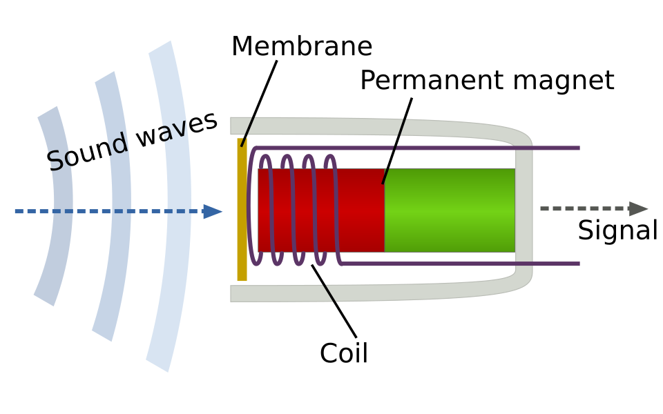
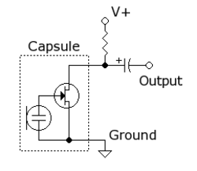
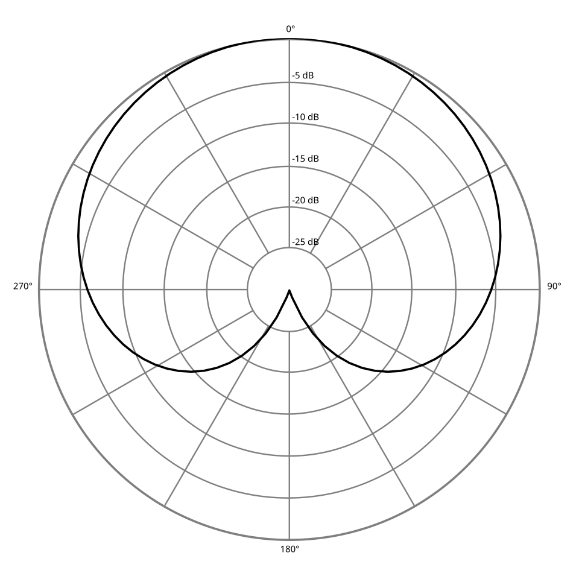
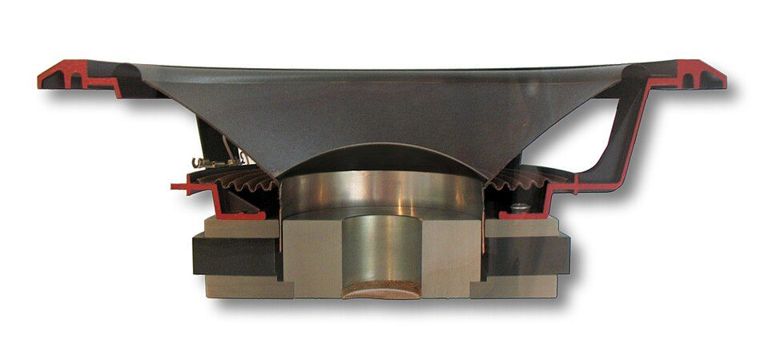
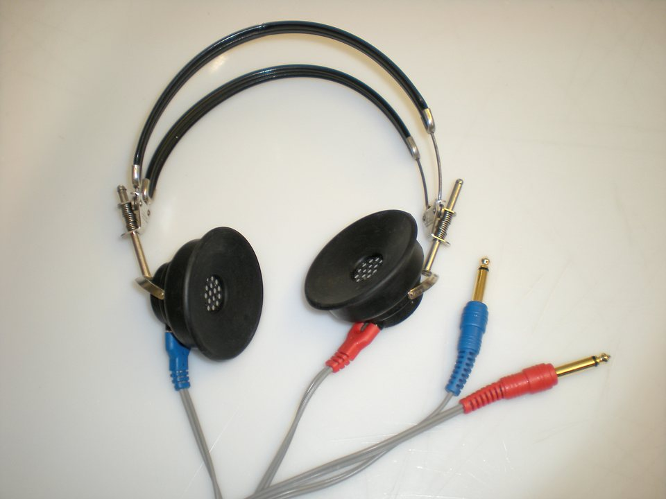

Introduction to Acoustics
Physics of sound, the decibel, loudness and equal loudness contours; reflection, absorption, reverberation, background noise and acoustically treated rooms; microphones, loudspeakers, earphones and receivers.
- 2.1Nature and propagation of sound1 hour
- 2.2Frequency, wavelength, amplitude and velocity1 hour
- 2.3Sound pressure level and the decibel1.5 hours
- 2.4Loudness, phon and equal loudness contours1 hour
- 2.5Reflection, transmission and absorption of sound; absorption coefficient1.5 hours
- 2.6Reverberation, reverberation time and Sabine's formula2 hours
- 2.7Sources of background noise in a room and speech-to-noise ratio1.5 hours
- 2.8Acoustically treated rooms: requirements and structure of rooms for hearing testing and sound recording2 hours
- 2.9Microphones: moving coil, condenser, electret and more2 hours
- 2.10Loudspeakers, headphones and receivers: moving coil and balanced armature2 hours
Nature and propagation of sound
Sound is a travelling disturbance of pressure in a medium such as air. Everything an audiologist measures, from a hearing threshold to the noise in a test booth, is a measurement of this disturbance, so a clear picture of how sound is produced and how it travels is the foundation for the rest of the course.
What it is
Sound is a mechanical wave: a vibrating object pushes and pulls on the particles of a medium, and the particles pass the push on to their neighbours. The result is a pattern of small pressure rises (compressions) and falls (rarefactions) that moves outwards from the source.
Why it is required
Audiometers, hearing aids, microphones and sound level meters all deal with sound pressure. Knowing that sound needs a medium, how fast it travels and how it weakens with distance explains why earphones are placed on the ear, why a sound field loudspeaker sits at a fixed distance and why a test booth must block outside noise.
How it works
A vibrating source (vocal folds, a loudspeaker cone, a tuning fork) compresses the air next to it, then pulls back and leaves a region of low pressure. Each layer of air pushes the next, so the pattern travels at the speed of sound while each air particle only moves back and forth about its resting place.
Background: vibration is the source of every sound
Every sound starts with something that vibrates, which means it moves repeatedly back and forth about a resting position. Pluck a guitar string, strike a tuning fork or hum a note and you can feel or see the vibration. In the larynx, air from the lungs sets the vocal folds vibrating roughly 100 to 250 times a second in adult speech. In a hearing-aid receiver or an audiometer earphone, an electrical signal drives a small diaphragm back and forth.
A vibration on its own is not yet a sound that we can hear. The vibrating object must be in contact with a medium, a material whose particles can pass the motion along. Air is the usual medium in daily life, but water, bone, metal and the fluids of the inner ear are also media. The medium must have two properties:
- Mass (inertia): the particles resist being moved and, once moving, tend to keep moving.
- Elasticity (stiffness): when particles are squeezed together or pulled apart, a restoring force tries to bring them back to their resting spacing, like a spring.
Because of mass and elasticity, a particle that is pushed overshoots its rest position, is pulled back, overshoots again and so on. Each particle also pushes on its neighbour. This chain of pushes is what we call a sound wave.
Compressions and rarefactions
Think of the air in front of a loudspeaker cone as many thin layers of air. When the cone moves forward it crowds the nearest layer against the next one: the air there is slightly denser and its pressure is slightly higher than the surrounding atmospheric pressure. This region is a compression. When the cone moves back it leaves more room, the air spreads out and its pressure drops slightly below atmospheric pressure. This region is a rarefaction. As the cone keeps vibrating it sends out an alternating train of compressions and rarefactions.
The pressure changes are tiny compared with atmospheric pressure. Normal atmospheric pressure at sea level is about 101 325 Pa (pascal, the SI unit of pressure: 1 Pa is a force of 1 newton on 1 square metre). The softest 1 kHz tone a young listener can hear changes the pressure by only about 20 µPa (20 millionths of a pascal), and even a painfully loud sound of about 20 Pa changes it by only 0.02 per cent. The ear and a measurement microphone respond to this small fluctuation riding on top of the steady atmospheric pressure. The fluctuating part is called the sound pressure.
Figure 2.1a. A snapshot of a sound wave in air. Particles crowd together at compressions (sound pressure above atmospheric) and spread apart at rarefactions (below atmospheric). The distance from one compression to the next is one wavelength.
Longitudinal waves: particle motion and wave motion
Waves are classified by the direction in which the particles move compared with the direction in which the wave travels.
Longitudinal wave
- Particles vibrate back and forth along the same line as the wave travels.
- Produces compressions and rarefactions.
- Sound in air and in liquids is always longitudinal.
- Example: pushing one end of a stretched slinky spring.
Transverse wave
- Particles move at right angles to the direction of travel.
- Produces crests and troughs.
- Needs a medium that resists sideways shearing, such as a solid or a string.
- Examples: a wave on a guitar string, ripples on water (approximately), light (an electromagnetic wave, no medium needed).
Two different motions must be kept apart:
- Particle motion: each air particle oscillates over a very short distance about its resting position. At the threshold of hearing at 1 kHz the particle displacement is roughly 10-11 m, smaller than the diameter of an atom. Even for loud sounds it is a small fraction of a millimetre. The particle does not travel with the wave.
- Wave motion: the pattern of compressions and rarefactions travels outwards at the speed of sound, about 343 m/s in air at 20 °C. It is the energy and the pattern that travel, not the air.
A useful analogy is a Mexican wave in a stadium: each spectator only stands up and sits down in place, yet the wave runs around the whole stadium. Another is a row of dominoes, although dominoes do not return to their starting position. A stretched slinky spring is the best classroom model because each coil pushes its neighbour and then springs back.
Try it: particles in a longitudinal wave
Watch the highlighted particle: it only moves back and forth about its dashed rest line, while the compressions (bunched dots, peaks of the pressure curve) travel to the right. Change the amplitude and speed of the slow-motion animation.
Sound needs a medium
Because sound is passed from particle to particle, it cannot travel through a vacuum. The classic bell-jar experiment shows this: an electric bell ringing inside a glass jar becomes fainter and fainter as the air is pumped out, although the hammer can still be seen striking the gong. Light (an electromagnetic wave) crosses the vacuum; sound does not. In space, astronauts talk by radio, which converts sound into electromagnetic waves and back.
The same idea explains several clinical facts:
- Bone conduction: a bone vibrator pressed on the mastoid sets the skull vibrating, and the skull (a solid medium) carries the vibration directly to the cochlea. Bone-conduction audiometry uses this path to bypass the outer and middle ear.
- Sound insulation: a double wall or double-glazed window with an air gap, or a double-walled audiometric booth, reduces the transfer of sound because vibration has to cross several changes of medium, each of which reflects much of the energy back.
- Middle-ear function: sound in air meets the fluid-filled cochlea. Without the impedance-matching action of the eardrum and ossicles, most of the energy would be reflected at the air to fluid boundary.
Speed of sound in air, water and solids
The speed at which the wave pattern travels depends on the medium, not on the loudness or the frequency of the sound. In a stiffer medium the particles pass the push along more quickly; in a denser (heavier) medium they respond more slowly. In words, the speed of sound grows with stiffness and falls with density:
Water is about 800 times denser than air, but it is around 15 000 times stiffer, so sound travels about four times faster in water. Solids are stiffer still.
| Medium | Typical speed of sound | Remarks |
|---|---|---|
| Air at 0 °C | about 331 m/s | Reference value used in the temperature formula below |
| Air at 20 °C | about 343 m/s | Standard value used in most acoustic calculations |
| Air at 30 °C | about 349 m/s | Typical of a warm, unairconditioned room in Kerala |
| Fresh water, body fluids and soft tissue | about 1450 to 1550 m/s | Relevant to cochlear fluids and to medical ultrasound |
| Bone | roughly 2500 to 4000 m/s | Varies with bone type and direction; relevant to bone conduction |
| Steel and aluminium | roughly 5000 to 6000 m/s | Why you hear an approaching train through the rail before the air |
Temperature dependence in air
For a gas, a rise in temperature makes the molecules move faster, so they pass the disturbance on more quickly. Humidity has a small additional effect, and atmospheric pressure on its own has almost none (at a fixed temperature, a change in pressure changes stiffness and density in the same proportion). For everyday temperatures a simple straight-line rule is accurate to within about 0.5 m/s:
Worked example: at 20 °C, c ≈ 331 + 0.6 × 20 = 343 m/s. At 30 °C, c ≈ 331 + 18 = 349 m/s. At body temperature (37 °C), c ≈ 353 m/s, which is the value inside a warm ear canal. The exact formula gives 343.2, 349.0 and 353.0 m/s, so the simple rule is good enough for class calculations.
Time of travel is often useful: sound takes about 2.9 ms to travel 1 m in air at 20 °C. A patient seated 1 m from a sound field loudspeaker receives the sound about 3 ms after the loudspeaker produces it; a reflection from a wall 3 m further away arrives roughly 9 ms later still. These small delays matter for room acoustics (B.Sc. Unit 2, sound in rooms) and for measuring hearing-aid processing delay.
Propagation and the inverse square law
A small source radiating equally in all directions in open space (a free field, with no reflecting surfaces) spreads its power over the surface of an ever-growing sphere. The area of a sphere is 4πr², so the power per square metre, called the sound intensity, falls with the square of the distance r:
Doubling the distance spreads the same power over four times the area, so the intensity falls to one quarter. In decibels (explained fully in 2.3 Sound pressure level) this is a drop of about 6 dB for every doubling of distance, and 20 dB for every tenfold increase in distance.
Figure 2.1b. The inverse square law. The energy passing through the small square at distance r is spread over four squares at 2r and nine squares at 3r.
Worked example 1: a loudspeaker produces 80 dB SPL at 1 m in a free field. At 2 m the level is about 80 − 6 = 74 dB SPL; at 4 m it is 80 − 20 log10(4) = 80 − 12.0 = 68.0 dB SPL.
Worked example 2: a source radiates an acoustic power of 0.01 W equally in all directions. At 2 m the intensity is I = 0.01 / (4π × 2²) = 0.01 / 50.27 ≈ 1.99 × 10-4 W/m².
The inverse square law holds only in a free field and at a reasonable distance from the source. Indoors, reflections from walls, floor and ceiling add a reverberant sound field, so beyond a certain distance the level stops falling. Close to a large source (the near field) the level also does not follow the simple rule. This is why sound field audiometry specifies the loudspeaker distance and position and why the test room must be acoustically treated (M.Sc. 4.8 Reverberation time for more depth).
Besides spreading, sound energy is also reduced by absorption in the air itself (small over room distances, larger at high frequencies over long distances) and by absorption at surfaces. Sound also reflects from hard surfaces (echoes), diffracts (bends) around obstacles comparable in size to its wavelength, and refracts (bends) when it passes through layers of air at different temperatures. These effects are treated in the room acoustics topics of this unit.
Infrasound, audible sound and ultrasound
The number of vibrations per second is the frequency, measured in hertz (Hz); it is defined properly in 2.2. Sound is divided into three bands according to frequency:
| Band | Frequency range | Examples and uses |
|---|---|---|
| Infrasound | below about 20 Hz | Earthquakes, large machinery, wind turbines, some animal calls (elephants). Felt as vibration or pressure at high levels rather than heard as a tone. |
| Audible sound | about 20 Hz to 20 kHz | Speech, music, environmental sound. Young adults with normal hearing; the upper limit falls with age (presbycusis) and noise exposure. |
| Ultrasound | above about 20 kHz | Bats and dolphins, medical ultrasound imaging (typically 2 to 15 MHz), ultrasonic cleaners used to clean hearing-aid earmoulds, some pest repellers. |
The limits of 20 Hz and 20 kHz are round figures for young adults; they are not sharp boundaries. Most of the information in speech lies between about 250 Hz and 8 kHz, which is why conventional audiometry tests 250 to 8000 Hz. Extended high-frequency audiometry (up to about 16 or 20 kHz) is used to detect early damage from noise or ototoxic drugs.
Instantaneous sound pressure and RMS sound pressure
At any single instant the pressure at a point differs from the static atmospheric pressure by some amount. This difference is the instantaneous sound pressure, p(t). It is positive in a compression, negative in a rarefaction, and changes continuously, so on its own it is not a convenient single number for describing how strong a sound is. The average of p(t) over time is zero for any sound, because the compressions and rarefactions cancel.
To get a single, meaningful number we use the root mean square (RMS) value: square the instantaneous pressure (which makes every value positive), take the mean over a period of time, then take the square root.
Unless stated otherwise, "sound pressure" means the RMS sound pressure. The RMS value is used because the power carried by a sound is proportional to the square of the pressure, so the RMS value is directly related to the energy of the sound. It is the same idea as the 230 V of the mains supply, which is also an RMS value (the peak mains voltage is about 325 V).
Worked example: a pure tone has a peak sound pressure of 2.83 Pa. Its RMS pressure is 2.83 / 1.414 ≈ 2.0 Pa, which corresponds to 100 dB SPL (see 2.3).
Other ways of describing the size of a waveform are the peak value, the peak-to-peak value (twice the peak for a sine wave) and the crest factor (peak divided by RMS: √2, about 3 dB, for a sine wave, and typically 12 dB or more for speech). A sound level meter normally shows an RMS-based level, with a separate peak reading for impulsive sounds such as a door slam or a gunshot.
From source to listener: the complete chain
Figure 2.1c. Every acoustic situation has a source, a medium and a receiver. The receiver may be the human ear or a microphone in a hearing aid or sound level meter.
Each block in Figure 2.1c corresponds to something in the clinic. The source may be the clinician's voice during speech audiometry, an audiometer earphone or a loudspeaker. The medium is usually the air in the ear canal or in the test room, but it is bone in bone-conduction testing. The receiver is the patient's ear, or a microphone when we measure or calibrate. Problems can arise in any block: a damaged earphone (source), a noisy or reverberant room (medium) or a blocked ear canal (receiver).
Clinical applications
- Earphones and insert earphones deliver sound into a small, closed volume of air, so the level at the eardrum is well controlled and outside noise is reduced.
- Sound field testing uses loudspeakers at a fixed distance (commonly about 1 m) and angle; moving the patient's head changes the level because of the inverse square law and reflections.
- The speed of sound and ear canal length together set the ear canal resonance, which boosts sound around 2.5 to 4 kHz (worked out in 2.2).
- Bone conduction hearing devices and bone vibrators rely on sound travelling through solids.
- Distance from the talker matters in classrooms: a child sitting at twice the distance from the teacher receives up to about 6 dB less direct sound, which is one reason for preferential seating and remote microphone systems.
Common misconceptions and errors
| Statement | Why it is wrong or incomplete | Correct idea |
|---|---|---|
| Air travels from the loudspeaker to the ear | Particles only oscillate about their rest position | Energy and the pressure pattern travel; the air stays in place |
| Sound weakens in proportion to distance | Intensity follows the inverse square law in a free field | Intensity falls as 1/r², about 6 dB per doubling of distance |
| High frequencies travel faster | Speed depends on the medium and temperature | All audible frequencies travel at about 343 m/s in air at 20 °C |
| Sound pressure is the average pressure | The average of p(t) is zero | Use the RMS value |
| Sound is a transverse wave in air | Air cannot support shear | Sound in air is longitudinal |
Demonstration
- Strike a tuning fork and touch it lightly to a table top, then to a glass of water: students see the water splash and hear the sound become louder through the table (solid medium, larger radiating surface).
- Stretch a slinky spring along a bench, push one end sharply and point out the compression pulse travelling along it while each coil moves only a short distance.
- Run the particle animation above. Pause it and ask students to find the compressions on the dots and the matching peaks on the pressure curve.
- If a bell-jar and vacuum pump are available from the physics department, show the ringing bell fading as air is removed.
- Use a sound level meter app or a class 2 sound level meter and a loudspeaker playing a steady tone or noise outdoors or in a large room; read the level at 1 m and 2 m and compare with the expected 6 dB drop. Indoors the drop will be smaller because of reflections.
Key points to remember
- Sound is a mechanical, longitudinal wave of compressions and rarefactions in an elastic medium.
- Particles oscillate about fixed positions; energy and the wave pattern travel.
- Sound cannot travel through a vacuum.
- Speed depends on the medium: about 343 m/s in air at 20 °C, about 1480 m/s in water, several thousand m/s in solids.
- In air, c ≈ 331 + 0.6 T m/s (T in °C).
- In a free field, intensity falls as 1/r²: about −6 dB per doubling of distance.
- Infrasound is below 20 Hz, audible sound 20 Hz to 20 kHz, ultrasound above 20 kHz.
- Sound pressure means RMS pressure; for a sine wave p_rms = 0.707 p_peak.
- The threshold of hearing at 1 kHz is about 20 µPa; about 20 Pa is near the threshold of discomfort.
Exercises
Define compression and rarefaction and state where the sound pressure is positive and negative.
Model answer: a compression is a region where the particles of the medium are crowded together, so the density and pressure are slightly above the static (atmospheric) value; the sound pressure there is positive. A rarefaction is a region where particles are spread apart, so density and pressure are slightly below atmospheric; the sound pressure there is negative. Compressions and rarefactions alternate and travel outwards from the source.
Calculate the speed of sound in air at 25 °C and the time sound takes to cross a 5 m test room.
Model answer: c ≈ 331 + 0.6 × 25 = 346 m/s. Time = distance / speed = 5 / 346 ≈ 0.0145 s, about 14.5 ms.
A pure tone has a peak pressure of 0.1 Pa. Find its RMS pressure and explain why RMS is used.
Model answer: p_rms = 0.1 / √2 ≈ 0.0707 Pa. The average of the instantaneous pressure is zero because positive and negative half-cycles cancel. Squaring before averaging makes all values positive, and the square of pressure is proportional to the energy carried, so the RMS value gives a single figure that reflects the strength (energy) of the sound.
A machine produces 90 dB SPL at 2 m outdoors. Estimate the level at 8 m and at 20 m, and state one reason the answer could be wrong indoors.
Model answer: 8 m is four times the distance, so the level falls by 20 log10(4) ≈ 12 dB, giving about 78 dB SPL. 20 m is ten times the distance, so the level falls by 20 dB to about 70 dB SPL. Indoors, reflections from walls and ceiling add reverberant sound, so the level falls less than the inverse square law predicts.
Write a short note on "sound requires a material medium", with an experiment and a clinical example.
Model answer: sound is a mechanical wave passed from particle to particle, and needs a medium with mass and elasticity. In the bell-jar experiment a ringing bell becomes inaudible as air is pumped out, although it can still be seen vibrating. Clinically, sound reaches the cochlea through air (air conduction) or through the skull (bone conduction); double-walled audiometric booths use layers and gaps to reduce sound transmission from outside.
Explain the nature and propagation of sound with a neat diagram. Distinguish particle motion from wave motion and discuss the factors affecting the speed of sound. (10 marks)
Model answer outline: (1) vibration of a source in an elastic medium, role of mass and elasticity; (2) diagram of compressions and rarefactions with wavelength (Figure 2.1a); (3) longitudinal versus transverse waves; (4) particle motion is a tiny oscillation about a rest position, wave motion is the travel of the pattern and energy at speed c; (5) sound needs a medium, bell-jar experiment; (6) speed depends on stiffness and density, c = √(K/ρ), values for air, water and steel; (7) temperature dependence c ≈ 331 + 0.6 T, independent of frequency and loudness; (8) spreading and the inverse square law; (9) frequency bands (infra, audible, ultra); (10) one or two clinical examples such as bone conduction or sound field distance.
References
- Speaks, C. E. Introduction to Sound: Acoustics for the Hearing and Speech Sciences, 3rd edn. Singular Publishing, 1999.
- Villchur, E. Acoustics for Audiologists. Singular Publishing, 1999.
- Crocker, M. J. (ed.) Handbook of Acoustics. Wiley, 1998.
- Moser, P. J. Electronics and Instrumentation for Audiologists. Psychology Press, 2015.
- Everest, F. A. and Pohlmann, K. C. Master Handbook of Acoustics. McGraw-Hill.
- Kinsler, L. E., Frey, A. R., Coppens, A. B. and Sanders, J. V. Fundamentals of Acoustics. Wiley.
- ANSI S1.1 Acoustical Terminology.
- National Institute on Deafness and Other Communication Disorders, How do we hear? https://www.nidcd.nih.gov
Frequency, wavelength, amplitude and velocity
A pure tone, the basic test signal of audiometry, is completely described by four numbers: its frequency, amplitude, phase and the speed at which it travels. This topic defines each of these quantities, links them through the wave equation λ = c / f and works through examples at speech and audiometric frequencies.
What it is
The measurable properties of a periodic wave: how often it repeats (frequency and period), how large it is (amplitude), how long one cycle is in space (wavelength), where it is in its cycle (phase) and how fast it travels (velocity).
Why it is required
An audiogram is a plot of threshold against frequency, audiometer dials are set in frequency and level, and the size of the head, ear canal and room compared with the wavelength decides how sound behaves. These terms are used every day in the clinic.
How it works
A source moving in simple harmonic motion produces a sine-shaped pressure wave. Its frequency is set by the source, its speed by the medium, and the wavelength follows from the two. Real sounds such as speech are sums of many such sine waves.
Simple harmonic motion: the source of a pure tone
Hang a mass on a spring, pull it down and let go. It bounces up and down about its rest position, moving fastest as it passes the rest point and slowing to a momentary stop at each end of its travel. This is simple harmonic motion (SHM): motion in which the restoring force is proportional to the displacement from rest and always points back towards rest.
If we plot the displacement of a body in SHM against time, the graph is a sine wave. A tuning fork prong, a pendulum swinging through a small angle and the diaphragm of an audiometer earphone driven by a pure-tone signal all move in SHM. A sound source in SHM produces a pure tone (a sinusoid), a sound with energy at a single frequency.
The natural frequency of a mass-spring system depends on stiffness and mass:
A stiffer system vibrates at a higher frequency and a heavier one at a lower frequency. This one idea explains a lot in hearing science: a thin, light, stiff tuning fork prong gives a high note; the basilar membrane is stiff and light at the base of the cochlea (high frequencies) and floppy and heavy at the apex (low frequencies); and a stiff middle ear (for example with otosclerosis) passes low frequencies less well.
The properties of a sine wave
A pure tone can be written as
Figure 2.2a. A sine wave of sound pressure against time. Amplitude is measured from the zero line to the peak; the period is the time for one complete cycle. Plotted against distance instead of time, the same shape repeats every wavelength.
| Quantity | Symbol and unit | Meaning | Perceptual correlate |
|---|---|---|---|
| Frequency | f, hertz (Hz), 1 Hz = 1 cycle per second | Number of complete cycles per second | Pitch |
| Period | T, seconds (s) or milliseconds (ms) | Time taken by one cycle; T = 1 / f | Pitch (inverse) |
| Amplitude | A, Pa (for pressure), or m (for displacement) | Maximum departure from rest | Loudness |
| Wavelength | λ, metres (m) | Distance between two successive compressions | None directly; decides how sound interacts with objects |
| Velocity (speed of sound) | c, m/s | Speed at which the wave pattern travels | None directly |
| Phase | φ, degrees or radians | Position within the cycle at a given moment | Used by the brain to localise low frequencies |
| Angular frequency | ω = 2πf, rad/s | Rate of change of phase | Used in formulas |
Frequency and period
Frequency is the number of complete cycles in one second, in hertz (named after Heinrich Hertz). The period is the duration of one cycle. They are reciprocals: a 1000 Hz (1 kHz) tone has a period of 1 ms; a 250 Hz tone has a period of 4 ms; an 8 kHz tone has a period of 0.125 ms. Frequency is set by the source. When sound passes from air into water or bone, the frequency stays the same while the speed and wavelength change.
Audiometric test frequencies are arranged in octaves: 125, 250, 500, 1000, 2000, 4000 and 8000 Hz, with inter-octave frequencies 750, 1500, 3000 and 6000 Hz. An octave is a doubling of frequency. The adult male voice has a fundamental frequency typically around 100 to 150 Hz, the adult female voice around 180 to 250 Hz and a young child's voice around 250 to 400 Hz; vowel formants lie roughly between 250 Hz and 3 kHz and fricatives such as /s/ have most of their energy between about 4 and 8 kHz.
Amplitude
The amplitude is the maximum value of the wave measured from its rest (zero) line. For a sound wave we can speak of the amplitude of particle displacement, particle velocity or pressure; audiology almost always uses pressure. Larger amplitude means more energy and is heard as a louder sound. Because the range of amplitudes the ear handles is enormous, amplitude is usually expressed on the logarithmic decibel scale (2.3). The RMS value (0.707 × peak for a sine wave, 2.1) is the value used in level measurement.
Velocity
The velocity of sound, c, is the speed at which the compressions travel through the medium, about 343 m/s in air at 20 °C. It depends on the medium and its temperature, not on the frequency or amplitude of the sound (2.1). Do not confuse it with particle velocity, the speed at which each air particle moves back and forth, which is far smaller (well under 1 m/s even for very loud sounds).
Wavelength
The wavelength, λ (the Greek letter lambda), is the distance the wave travels during one period, which is the distance from one compression to the next. In one period T the wave moves a distance c T, so:
This is the most important single formula in the topic. High frequencies have short wavelengths and low frequencies long wavelengths.
| Frequency | Period | Wavelength in air (c = 343 m/s) | Comparable object |
|---|---|---|---|
| 120 Hz (typical adult male F0) | 8.3 ms | 2.86 m | Taller than a person |
| 125 Hz | 8 ms | 2.74 m | Height of a room |
| 220 Hz (typical adult female F0) | 4.5 ms | 1.56 m | Height of a person |
| 250 Hz | 4 ms | 1.37 m | Width of a small test booth |
| 500 Hz | 2 ms | 0.69 m | Arm length |
| 1000 Hz | 1 ms | 0.343 m | A little larger than the head |
| 2000 Hz | 0.5 ms | 0.17 m | Width of the head |
| 4000 Hz | 0.25 ms | 8.6 cm | Pinna length |
| 6000 Hz (energy of /s/) | 0.167 ms | 5.7 cm | Hearing-aid body |
| 8000 Hz | 0.125 ms | 4.3 cm | Ear canal length (about 2.5 cm) is comparable |
Wavelength explains several clinical effects:
- Head shadow: an object blocks sound effectively only when it is larger than about a wavelength. The head (about 15 to 18 cm wide) casts a strong shadow for frequencies above about 1.5 to 2 kHz but hardly any at 250 Hz. A person with unilateral hearing loss therefore misses high-frequency speech sounds (consonants) arriving from the poor side.
- Ear canal resonance: a tube closed at one end (by the eardrum) resonates when its length is a quarter of a wavelength. For a canal about 2.5 cm long: f = c / (4L) = 343 / (4 × 0.025) ≈ 3.4 kHz. Measured open-ear resonance is typically around 2.5 to 3.5 kHz with about 10 to 20 dB of gain. Occluding the canal with an earmould removes this natural boost, which the hearing-aid fitting must replace.
- Standing waves in rooms: low-frequency wavelengths are comparable to room dimensions, so a small test room can have strong peaks and dips in level at low frequencies. This is why sound field testing uses warble tones or narrow-band noise rather than pure tones.
Phase
Phase tells us where in its cycle a wave is at a given instant, measured in degrees (one full cycle = 360°) or radians (one cycle = 2π). Two tones of the same frequency may be in phase (peaks together), 90° apart, or 180° apart (anti-phase, the peak of one meets the trough of the other). A time shift Δt corresponds to a phase shift of
Worked example: a 500 Hz tone delayed by 0.5 ms is shifted by 360 × 500 × 0.0005 = 90°.
When two equal tones in phase are added, the amplitude doubles (+6 dB). When they are in anti-phase they cancel. Hearing-aid feedback cancellers and active noise-cancelling headphones use anti-phase signals; in the clinic, a phase reversal between two loudspeakers or two earphones wired the wrong way round changes the perceived image of the sound. The brain uses the phase (time) difference between the ears to localise sounds below about 1.5 kHz.
Try it: a pure tone and its wavelength
Change frequency, amplitude and phase. The dashed trace is a reference tone of the same frequency with zero phase. Readouts show the period, the wavelength in the chosen medium and the RMS level.
Pure tones and complex tones
A pure tone contains a single frequency. It is rare in nature (a tuning fork comes close) but easy to produce electronically, and it is the standard stimulus of pure-tone audiometry because it tests one place on the cochlea at a time.
A complex sound contains more than one frequency. Complex sounds are of two kinds:
- Periodic complex tones repeat their waveform regularly. They consist of a fundamental frequency (F0, the repetition rate) and harmonics at whole-number multiples of F0 (2F0, 3F0, ...). Voiced speech, the vowels, and musical notes are periodic complex tones. A voice with F0 = 120 Hz has harmonics at 240, 360, 480 Hz and so on; the vocal tract then shapes these harmonics into formants.
- Aperiodic sounds have no repeating pattern: noise, the hiss of /s/ and /f/, the burst of a plosive, clicks. Their energy is spread continuously across frequency. White noise has equal energy per hertz; narrow-band noise, used for masking in audiometry, has its energy confined to a band around a centre frequency.
The French mathematician Joseph Fourier showed that any periodic waveform can be built by adding sine waves of suitable frequency, amplitude and phase. The list of these components is the spectrum. A spectrum is drawn with frequency on the horizontal axis and amplitude (or level) on the vertical axis; a pure tone is a single vertical line, a periodic complex tone is a set of lines at the harmonics, and noise is a continuous curve. This link between the time waveform and the spectrum is developed in B.Sc. Unit 3, signal representation.
Figure 2.2b. Time waveforms (top) and spectra (bottom). The complex tone on the right is the sum of a fundamental and its second and third harmonics with amplitudes 1, 0.5 and 0.33.
Worked examples at speech and audiometric frequencies
- Wavelength of a 1 kHz audiometric tone in air at 20 °C: λ = 343 / 1000 = 0.343 m (34.3 cm).
- Wavelength of 250 Hz: 343 / 250 = 1.37 m. Of 8 kHz: 343 / 8000 = 0.043 m (4.3 cm). The ratio of wavelengths is 32, the same as the ratio of frequencies (8000 / 250).
- A male voice with F0 = 120 Hz: T = 1 / 120 = 8.3 ms and λ = 343 / 120 ≈ 2.86 m.
- The energy of /s/ near 6 kHz: λ = 343 / 6000 ≈ 5.7 cm, small enough to be blocked by the head and even by a hand in front of the mouth, which is why lip-reading cues and face masks affect /s/ perception.
- A 1 kHz tone in water: λ = 1480 / 1000 = 1.48 m, more than four times longer than in air, while the frequency is unchanged.
- Ear canal resonance for a 2.5 cm canal: f = 343 / (4 × 0.025) ≈ 3430 Hz. For a child's shorter canal (say 1.8 cm) the resonance rises to about 343 / 0.072 ≈ 4.8 kHz, one reason why children's real-ear responses differ from adults'.
Clinical applications
- Audiometer frequency accuracy: audiometer tones must be within a small tolerance of the nominal frequency (typically around 1 to 2 per cent); this is checked during calibration (B.Sc. Unit 5, calibration; M.Sc. 4.1 Audiometer and calibration).
- Warble tones (frequency-modulated tones) are used in sound field testing so that standing waves do not produce misleading peaks and nulls.
- Hearing-aid fitting targets are set frequency by frequency; the loss of the ear canal resonance on occlusion and the head shadow effect are compensated in the gain prescription.
- Phase: reversing the polarity of a click stimulus (rarefaction versus condensation) is standard in auditory brainstem response testing.
- Speech analysis software shows F0, harmonics and formants, all of which are frequencies (M.Sc. 5.7 Praat for more depth).
Demonstration
- Strike tuning forks of 256 Hz and 512 Hz; students hear that the 512 Hz fork is one octave higher. Show the period on an oscilloscope or a phone oscilloscope app if available.
- Use the demo above: set 250 Hz and 1 kHz and read the wavelengths; ask students to mark these lengths on the floor with a measuring tape.
- Play pure tones from an audiometer through a loudspeaker at 250 Hz and walk slowly across the room: students notice the level rising and falling (standing waves). Repeat with a warble tone.
- Record a sustained vowel and a sustained /s/ in Praat or Audacity and compare the periodic waveform of the vowel with the random waveform of /s/.
- Place two small loudspeakers side by side playing the same low tone, then reverse the wires of one: the bass becomes weaker because of phase cancellation.
Key points to remember
- Simple harmonic motion (restoring force proportional to displacement) produces a pure tone.
- Frequency f is cycles per second (Hz); period T = 1 / f.
- Amplitude is the maximum departure from rest; RMS = 0.707 × peak for a sine.
- Wave equation: c = f λ, so λ = c / f; at 1 kHz in air λ ≈ 34 cm.
- Frequency is set by the source; speed and wavelength change with the medium.
- Phase shift in degrees = 360 × f × time shift; tones in anti-phase cancel.
- Complex periodic tones have a fundamental and harmonics; noise is aperiodic with a continuous spectrum.
- Quarter-wave ear canal resonance is about 2.5 to 3.5 kHz in adults.
Exercises
Find the period of 500 Hz, 2 kHz and 4 kHz tones.
Model answer: T = 1 / f. 500 Hz: 2 ms; 2 kHz: 0.5 ms; 4 kHz: 0.25 ms.
Calculate the wavelength of a 3 kHz tone in air at 20 °C and at 30 °C.
Model answer: at 20 °C, λ = 343 / 3000 ≈ 0.114 m (11.4 cm). At 30 °C, c ≈ 349 m/s, so λ = 349 / 3000 ≈ 0.116 m (11.6 cm). The frequency is unchanged; only the wavelength changes with temperature.
A 1 kHz tone reaches the far ear 0.25 ms later than the near ear. What is the interaural phase difference? What happens if two equal tones are 180° apart?
Model answer: Δφ = 360 × 1000 × 0.00025 = 90°. Two equal tones 180° apart cancel each other completely, because every compression of one coincides with a rarefaction of the other.
Differentiate between a pure tone and a complex tone with examples and spectra.
Model answer: a pure tone has a single frequency, a sinusoidal waveform and a spectrum of one line (examples: audiometer tone, tuning fork). A complex tone has two or more frequencies; if periodic it has a fundamental and harmonics at integer multiples, shown as several lines in the spectrum (examples: vowels, musical notes). Aperiodic complex sounds such as noise and fricatives have a continuous spectrum. Pure tones test frequency-specific hearing; complex sounds such as speech test everyday listening.
Treating the ear canal as a tube 2.7 cm long, closed at the eardrum, estimate its resonant frequency. Why does an earmould change what the listener hears?
Model answer: f = c / (4L) = 343 / (4 × 0.027) ≈ 3.2 kHz. An earmould closes the canal entrance, so the quarter-wave resonance is lost and the natural boost of roughly 10 to 20 dB around 2.5 to 3.5 kHz disappears (insertion loss); the hearing aid's gain must make up for it.
Define frequency, wavelength, amplitude and velocity of a sound wave, derive the relation between them and explain their relevance to audiology. (10 marks)
Model answer outline: SHM and the sine wave equation; labelled sine diagram (Figure 2.2a); definitions with units of frequency, period, amplitude, wavelength, velocity and phase; derivation: in one period the wave moves one wavelength, so λ = c T = c / f; table of wavelengths at 250 Hz to 8 kHz; relevance: audiogram frequencies, head shadow, ear canal resonance, standing waves and warble tones, perceptual correlates (pitch and loudness).
References
- Speaks, C. E. Introduction to Sound: Acoustics for the Hearing and Speech Sciences, 3rd edn. Singular Publishing, 1999.
- Villchur, E. Acoustics for Audiologists. Singular Publishing, 1999.
- Crocker, M. J. (ed.) Handbook of Acoustics. Wiley, 1998.
- Dillon, H. Hearing Aids, 2nd edn. Boomerang Press / Thieme, 2012 (ear canal resonance and insertion loss).
- Udayashankara, V. Speech Signal Processing. 2022 (fundamental frequency and harmonics of speech).
- ISO 266 Acoustics: Preferred frequencies.
Sound pressure level and the decibel
The decibel is the unit an audiologist uses more than any other: thresholds, masking levels, hearing-aid gain, noise limits and booth requirements are all in decibels. This topic explains why a logarithmic scale is used, how sound pressure, intensity and power levels are defined, how to add decibels correctly, how the different decibel scales (SPL, HL, SL, A) relate to each other, and how sound is analysed in octave and one-third octave bands.
What it is
A decibel (dB) is one tenth of a bel, a logarithmic unit that expresses the ratio of two quantities. Sound pressure level (SPL) is the ratio of a sound pressure to a fixed reference of 20 µPa, expressed in decibels.
Why it is required
The ear responds to pressures from about 20 µPa to over 20 Pa, a range of a million to one. A logarithmic scale compresses this range into 0 to about 120 dB, matches the way loudness grows, and turns multiplication of gains into simple addition.
How it works
Take the ratio of the measured quantity to its reference, find its common logarithm, and multiply by 10 for power-like quantities (intensity, power) or by 20 for pressure-like quantities (pressure, voltage). Every factor of 10 in pressure adds 20 dB.
Why a logarithmic scale
The quietest 1 kHz tone a young adult can hear has an RMS pressure of about 20 µPa, while sound becomes uncomfortable at roughly 20 Pa and painful at around 200 Pa. The ratio 20 / 0.00002 is 1 000 000. In intensity (which goes with the square of pressure) the range is a million million (1012). Writing thresholds as 0.000 025 Pa or 0.000 18 Pa would be clumsy and error prone.
There are three reasons to use a logarithm:
- Compression of range: a logarithm turns each factor of 10 into a step of one unit. Six factors of ten in pressure become 120 dB, a convenient range of numbers.
- Match to perception: our sense of loudness grows roughly in proportion to the logarithm of the stimulus rather than the stimulus itself (the Weber-Fechner idea). Equal ratios of pressure feel like roughly equal steps of loudness. A change of about 1 dB is close to the smallest change in level a normal listener can detect for a steady tone at moderate levels.
- Easy arithmetic in a signal chain: gains and losses that multiply in linear terms simply add in decibels. A microphone, preamplifier, amplifier and attenuator in an audiometer can be combined by adding and subtracting dB.
The bel (B) was named after Alexander Graham Bell and first used in telephone engineering to express power losses along lines. One bel is a power ratio of 10. The bel is too large a step for practical use, so the decibel, one tenth of a bel, is used: 1 B = 10 dB.
The decibel: a ratio with a reference
A decibel value is always a comparison of two quantities. For power-like quantities (power, intensity, energy):
Pressure and voltage are "field" quantities: power is proportional to their square. Since log(x²) = 2 log(x), the multiplier becomes 20:
A decibel value on its own is only a ratio. It becomes an absolute level once the reference is stated, which is why audiologists always add a suffix: dB SPL, dB HL, dB SL, dB(A). Omitting the reference is one of the commonest errors in reports and exam answers.
| Change in pressure (or voltage) | Change in intensity (or power) | Change in level |
|---|---|---|
| × 1.12 | × 1.26 | +1 dB |
| × 1.41 (√2) | × 2 | +3 dB |
| × 2 | × 4 | +6 dB |
| × 3.16 (√10) | × 10 | +10 dB |
| × 10 | × 100 | +20 dB |
| × 100 | × 10 000 | +40 dB |
| × 0.5 | × 0.25 | −6 dB |
| × 1 (no change) | × 1 | 0 dB |
Sound pressure level (SPL)
The reference of 20 µPa was chosen because it is close to the average threshold of hearing of young adults for a 1 kHz tone. It is a fixed physical value, the same at every frequency.
Worked examples (all verified):
- p = 20 µPa: Lp = 20 log(1) = 0 dB SPL.
- p = 0.02 Pa: ratio = 1000, Lp = 20 × 3 = 60 dB SPL (roughly conversational speech at 1 m).
- p = 1 Pa: ratio = 50 000, Lp = 20 × 4.699 = 93.98 ≈ 94 dB SPL. This is why sound level meter calibrators commonly produce 94 dB (1 Pa) or 114 dB (10 Pa).
- p = 2 Pa: Lp = 100 dB SPL. p = 20 Pa: 120 dB SPL. p = 200 Pa: 140 dB SPL.
Going backwards, from level to pressure: p = p0 × 10Lp/20. For 80 dB SPL: p = 2 × 10-5 × 104 = 0.2 Pa.
Figure 2.3a. Every 20 dB step on the SPL scale is a tenfold step in sound pressure. The markers show typical levels; real values vary widely.
Try it: pressure to dB SPL
Move the slider to change the RMS sound pressure. The horizontal axis is logarithmic, so each tenfold step in pressure is the same distance, and the level rises by 20 dB for each step.
Sound intensity level
Sound intensity, I, is the sound power flowing through one square metre at right angles to the direction of travel, in W/m². For a plane wave (or at a distance from a source), intensity is related to pressure by the characteristic impedance of air, ρc:
With p0 = 20 µPa, p0² / ρc = 4 × 10-10 / 413 ≈ 0.97 × 10-12 W/m², almost exactly I0. So for a plane wave in air at room temperature the intensity level and the sound pressure level are the same number to within a few tenths of a decibel. Close to a source or in a reverberant room the two can differ, and intensity has a direction while pressure does not.
Worked example: in topic 2.1 we found I ≈ 1.99 × 10-4 W/m² at 2 m from a 0.01 W source. LI = 10 log(1.99 × 10-4 / 10-12) = 10 × 8.30 ≈ 83.0 dB.
Sound power level
Sound power, W, is the total acoustic energy a source radiates per second, in watts. It is a property of the source alone, like the wattage of a lamp, while sound pressure depends also on distance and on the room, like the brightness at a point in the room.
Sound power levels are used to compare the noise of machines and appliances (air conditioners, computer fans, MRI scanners) because the value does not depend on where you stand. For a small source in a free field the level at distance r is approximately Lp ≈ LW − 20 log10(r) − 11 dB. Example: an air conditioner unit with LW = 90 dB, 2 m away outdoors: Lp ≈ 90 − 6 − 11 = 73 dB SPL.
Acoustic powers are tiny: normal conversational speech radiates only of the order of 10 microwatts, and even a shout is of the order of a milliwatt. Most of the electrical power supplied to a loudspeaker is turned into heat, not sound.
| Level | Quantity | Formula | Reference | Used for |
|---|---|---|---|---|
| Sound pressure level, Lp | RMS pressure (Pa) | 20 log(p / p0) | 20 µPa | What microphones, ears and sound level meters respond to |
| Sound intensity level, LI | Intensity (W/m²) | 10 log(I / I0) | 10-12 W/m² | Energy flow and direction; locating noise sources |
| Sound power level, LW | Power (W) | 10 log(W / W0) | 10-12 W | Rating the noise output of machines |
Adding decibels from incoherent sources
Decibels cannot be added directly. Two machines each producing 60 dB SPL do not make 120 dB SPL. For sources that are incoherent (unrelated in phase, such as two noise sources, two talkers or two fans), their intensities (or squared pressures) add. The steps are: convert each level to a relative intensity, add, then convert back.
Worked examples:
- 60 dB + 60 dB = 10 log(2 × 106) = 63.0 dB. Doubling the number of equal sources adds 3 dB.
- Three sources of 60 dB: 60 + 10 log(3) = 64.8 dB. Ten sources of 60 dB: 70 dB.
- 60 dB + 70 dB = 70.4 dB. The quieter source adds only 0.4 dB.
- 65 dB + 72 dB = 72.8 dB.
A quick table for adding two levels:
| Difference between the two levels | Add to the higher level |
|---|---|
| 0 dB | 3.0 dB |
| 1 dB | 2.5 dB |
| 2 dB | 2.1 dB |
| 3 dB | 1.8 dB |
| 4 dB | 1.5 dB |
| 6 dB | 1.0 dB |
| 10 dB | 0.4 dB |
| 15 dB | about 0.1 dB (negligible) |
Subtracting background noise works the same way in reverse. If a machine plus background measures 70 dB and the background alone is 65 dB, the machine alone is 10 log(107 − 106.5) ≈ 68.3 dB. When the background is more than about 10 dB below the total, it can be ignored.
Try it: adding two sources
Set the levels of two unrelated sources. The curve shows how much is added to the louder source as a function of the difference between them; the dot marks your pair.
dB SPL, dB HL, dB SL and dB(A)
The same decibel arithmetic is used with different references. Mixing them up is a classic error, so learn the four in this table.
| Scale | Reference (0 dB) | Where it is used | Example |
|---|---|---|---|
| dB SPL | 20 µPa, the same at every frequency | Physical measurement, calibration, hearing-aid output, real-ear measurement | A hearing aid delivers 110 dB SPL maximum output in a 2 cc coupler |
| dB HL (hearing level) | Average threshold of young normal-hearing adults at each frequency, for a given earphone (the reference equivalent threshold SPL, RETSPL) | Audiometer dial and audiogram | Threshold of 40 dB HL at 2 kHz means 40 dB worse than the normal average |
| dB SL (sensation level) | The individual listener's own threshold for that stimulus | Speech and suprathreshold tests, masking, reflex testing | Speech presented at 40 dB SL to a patient whose SRT is 30 dB HL is at 70 dB HL |
| dB(A) (A-weighted level) | 20 µPa after an A-weighting filter that de-emphasises low and very high frequencies | Environmental and occupational noise, sound level meters | Workplace noise of 88 dB(A) |
Because normal hearing is less sensitive at low frequencies, 0 dB HL corresponds to different SPLs at different frequencies. For a common supra-aural earphone the RETSPL is roughly 25 to 27 dB SPL at 250 Hz and about 7 dB SPL at 1 kHz (exact values depend on the earphone and coupler and are given in the ISO 389 series and ANSI S3.6). This is why the audiogram's 0 dB line is straight while the threshold curve in dB SPL is U-shaped (2.4). A-weighting is explained further in 2.4 and in M.Sc. 4.6 Sound-level meter.
Octave and one-third octave bands
An overall level tells us how strong a sound is but not where its energy lies in frequency. Two sounds with the same overall level, a low hum and a high hiss, affect hearing tests and hearing aids very differently. For frequency analysis, sound is passed through a set of band-pass filters, each letting through only a range (band) of frequencies, and the level in each band is measured.
Acoustic analysers use constant percentage bandwidth filters: each band is a fixed fraction of an octave wide, so bands get wider in hertz as the centre frequency rises. This matches the ear, which also analyses sound roughly on a logarithmic frequency scale.
- Octave band: the upper edge is twice the lower edge. The centre frequency fc is the geometric mean of the edges; the edges are fc / √2 and fc × √2, and the bandwidth is about 71 per cent of fc. Standard centre frequencies are 31.5, 63, 125, 250, 500, 1000, 2000, 4000, 8000 and 16 000 Hz. For the 1 kHz band: about 707 to 1414 Hz, bandwidth about 707 Hz.
- One-third octave band: three bands per octave; the edges are fc / 21/6 and fc × 21/6, and the bandwidth is about 23 per cent of fc. For the 1 kHz band: about 891 to 1122 Hz, bandwidth about 232 Hz. Centre frequencies include 800, 1000, 1250, 1600, 2000 Hz and so on.
Figure 2.3b. Octave bands and one-third octave bands. Each octave band contains three one-third octave bands; the three band levels add (as intensities) to the octave band level.
Band levels add in the same way as sources: if a noise has equal levels of 60 dB in the three one-third octave bands of an octave, the octave band level is 60 + 10 log(3) ≈ 64.8 dB. In the clinic, octave and one-third octave levels are used to check that the ambient noise in a test room is below the maximum permissible levels for audiometry (standards such as ANSI S3.1 and ISO 8253-1 give limits per band), to specify narrow-band masking noise, and to describe the long-term average speech spectrum. Audiometric frequencies themselves are octave-spaced, so each audiogram point roughly corresponds to one octave band.
Typical sound levels
| Sound | Typical level | Clinical note |
|---|---|---|
| Threshold of hearing, young adults, 1 kHz | about 0 to 5 dB SPL | Close to the 20 µPa reference |
| Rustling leaves, quiet breathing | about 10 to 20 dB SPL | Audiometric booths aim for very low ambient noise, band by band |
| Whisper at 1 m | about 25 to 35 dB SPL | Basis of the free-field whisper screening test |
| Quiet library or bedroom at night | about 30 to 40 dB(A) | Recommended background for classrooms is typically around 35 dB(A) |
| Normal conversational speech at 1 m | about 55 to 65 dB SPL | Hearing-aid gain is often checked for a 65 dB SPL speech input |
| Busy office, restaurant | about 60 to 75 dB(A) | Speech-in-noise difficulty becomes common |
| Heavy traffic, food processor | about 80 to 90 dB(A) | Around the occupational action level |
| Occupational exposure limit (8 h) | 85 to 90 dB(A), depending on country | Beyond this, hearing protection and monitoring are required |
| Personal music player at maximum, loud concert | about 95 to 110 dB(A) | Safe listening time is only minutes to an hour or so |
| Maximum audiometer output (air conduction, mid frequencies) | about 110 to 120 dB HL | Check loudness tolerance before high-level testing |
| Threshold of discomfort or pain | about 120 to 140 dB SPL | Risk of immediate damage from impulses |
Clinical applications
- Audiometer attenuators work in 5 dB steps (often 1 or 2 dB steps available); gains and losses in the audiometer chain are added in dB.
- Hearing-aid gain in dB is output SPL minus input SPL: a 65 dB SPL input and 95 dB SPL output means 30 dB gain.
- Signal-to-noise ratio (SNR) in dB is speech level minus noise level; many hearing-impaired listeners need an SNR several dB better than normal listeners for the same understanding.
- Checking a test room: ambient octave-band levels are measured with a sound level meter and compared with the permissible limits (M.Sc. 4.6 Sound-level meter, M.Sc. 4.7 Noise auditing).
- Noise exposure: every 3 dB increase doubles the sound energy, so the permitted exposure time halves under the widely used 3 dB exchange rate (some regulations use 5 dB).
Limitations, errors and troubleshooting
| Problem | Cause | What to check or do |
|---|---|---|
| A dB value is meaningless | Reference not stated | Always write dB SPL, dB HL, dB SL, dB(A) or state the reference |
| Two 60 dB sources reported as 120 dB | Levels added directly | Convert to intensities, add, convert back: 63 dB |
| Used 10 log for a pressure ratio | Confusing power and field quantities | Pressure and voltage: 20 log; intensity and power: 10 log |
| Measured source level too high | Background noise included | Measure background alone and subtract (energy subtraction) |
| Audiogram in dB HL compared with a noise level in dB(A) | Different references | Convert with RETSPL and weighting, or compare like with like |
Demonstration
- With a class 1 or 2 sound level meter and an acoustic calibrator, show the 94 dB (1 Pa) calibration reading. Explain that 1 Pa is 50 000 times the reference.
- Play pink noise from one loudspeaker and note the level at the listening position; switch on a second identical loudspeaker with an independent noise source: students see about a 3 dB increase, not a doubling of the number.
- Switch the meter between A, C and Z weighting on a low-frequency hum and on speech; discuss why the A reading drops for the hum.
- Use the octave or one-third octave mode of the meter (or a spectrum app) to measure the ambient noise in the audiometric booth and in the corridor; compare band by band.
- Use the two demos above to practise the conversions and the addition rule.
Key points to remember
- dB = 10 log(power ratio) = 20 log(pressure or voltage ratio).
- SPL: Lp = 20 log(p / 20 µPa); 1 Pa = 94 dB SPL; 20 Pa = 120 dB SPL.
- Doubling pressure: +6 dB; doubling intensity or power: +3 dB; ×10 pressure: +20 dB.
- Intensity level reference 10-12 W/m²; sound power level reference 10-12 W.
- Incoherent sources add as intensities: two equal sources give +3 dB.
- Always state the reference: dB SPL, HL, SL or A.
- Octave band edges fc/√2 to fc√2; one-third octave edges fc/21/6 to fc×21/6.
- 0 dB means equal to the reference, not silence.
Exercises
Convert 0.2 Pa and 0.002 Pa to dB SPL.
Model answer: 0.2 / 0.00002 = 10 000, 20 log(10 000) = 80 dB SPL. 0.002 / 0.00002 = 100, 20 log(100) = 40 dB SPL.
What RMS pressure corresponds to 114 dB SPL?
Model answer: p = 20 µPa × 10114/20 = 2 × 10-5 × 105.7 ≈ 10.0 Pa.
A clinic waiting room has an air conditioner producing 55 dB(A) and conversation producing 62 dB(A) at a point. What is the combined level? What if four identical air conditioners run together with no conversation?
Model answer: 10 log(105.5 + 106.2) = 10 log(316 228 + 1 584 893) ≈ 62.8 dB(A). Four equal sources: 55 + 10 log(4) = 55 + 6.0 = 61.0 dB(A).
A patient's threshold at 1 kHz is 35 dB HL. A tone is presented at 20 dB SL. What is its level in dB HL, and roughly in dB SPL if the RETSPL for the earphone is 7 dB?
Model answer: 35 + 20 = 55 dB HL. In SPL: 55 + 7 = 62 dB SPL (at the earphone coupler).
Calculate the edges and bandwidth of the 4 kHz octave band and the 4 kHz one-third octave band.
Model answer: octave: 4000 / 1.414 ≈ 2828 Hz to 4000 × 1.414 ≈ 5657 Hz, bandwidth about 2828 Hz. One-third octave: 4000 / 1.122 ≈ 3564 Hz to 4000 × 1.122 ≈ 4490 Hz, bandwidth about 926 Hz.
A hearing-aid test box reads 72 dB SPL with the aid working and 66 dB SPL with the aid switched off (background). What is the level due to the aid alone?
Model answer: 10 log(107.2 − 106.6) = 10 log(15 848 932 − 3 981 072) ≈ 70.7 dB SPL. The background adds about 1.3 dB.
What is a decibel? Explain sound pressure level, sound intensity level and sound power level, and discuss the different decibel scales used in audiology. (10 marks)
Model answer outline: range of audible pressures (20 µPa to about 20 Pa) and the three reasons for a log scale; bel and decibel; 10 log for power, 20 log for pressure with derivation; SPL with 20 µPa reference and worked example (1 Pa = 94 dB); intensity level with 10-12 W/m² and relation I = p²/ρc; sound power level with 10-12 W and why it is a source property; addition of incoherent sources (+3 dB for two equal sources); dB SPL, HL, SL and A with examples; octave bands briefly; typical levels table.
References
- Speaks, C. E. Introduction to Sound: Acoustics for the Hearing and Speech Sciences, 3rd edn. Singular Publishing, 1999.
- Villchur, E. Acoustics for Audiologists. Singular Publishing, 1999.
- Crocker, M. J. (ed.) Handbook of Acoustics. Wiley, 1998.
- Moser, P. J. Electronics and Instrumentation for Audiologists. Psychology Press, 2015.
- IEC 61672-1 Electroacoustics: Sound level meters, Part 1: Specifications.
- IEC 61260-1 Electroacoustics: Octave-band and fractional-octave-band filters, Part 1: Specifications.
- ISO 389 series Acoustics: Reference zero for the calibration of audiometric equipment.
- ISO 8253-1 Acoustics: Audiometric test methods, Part 1: Pure-tone air and bone conduction audiometry.
- ANSI S3.1 Maximum Permissible Ambient Noise Levels for Audiometric Test Rooms.
- World Health Organization, Make Listening Safe initiative. https://www.who.int
Loudness, phon and equal loudness contours
Sound pressure level is a physical measurement; loudness is what the listener hears. The two are related but not the same, because the ear is far more sensitive at some frequencies than others and because loudness grows differently from level. This topic introduces the phon and the sone, the equal loudness contours of ISO 226, the A and C weightings derived from them, and briefly the related sensations of pitch and timbre.
What it is
Loudness is the perceived strength of a sound. The loudness level of a sound, in phons, is the SPL of a 1 kHz tone judged equally loud. Loudness itself, in sones, is a scale on which a sound twice as loud has twice the number. Equal loudness contours join tones of different frequencies that sound equally loud.
Why it is required
It explains the shape of the normal threshold curve, why the audiogram uses dB HL, why sound level meters use A-weighting, why hearing aids apply more gain at some frequencies, and why people with cochlear hearing loss experience loudness recruitment.
How it works
Listeners compare a test tone with a 1 kHz reference tone and adjust it until the two sound equally loud. Repeating this at many frequencies and reference levels gives a family of curves, standardised in ISO 226.

Physical measures and sensory measures
Sound can be described in two ways. Physical measures are obtained with instruments and do not depend on a listener: sound pressure level, intensity level, power level, frequency, octave-band levels. Sensory (psychoacoustic) measures describe what a listener perceives and are obtained by asking listeners: loudness, pitch and timbre. Each sensation depends mainly on one physical property, but not only on that property.
Figure 2.4a. The main physical correlate of each auditory sensation. The mapping is not one to one: loudness depends on frequency and duration as well as level, and pitch depends slightly on level.
Loudness versus intensity
Loudness is the attribute of hearing by which sounds can be ordered on a scale from soft to loud. It depends mainly on intensity: raise the SPL of a tone and it becomes louder. But the relation is not simple:
- It is not proportional. Increasing intensity ten times (+10 dB) makes a moderate tone sound only about twice as loud, not ten times as loud.
- It depends on frequency. A 100 Hz tone and a 1 kHz tone at the same SPL do not sound equally loud; at moderate levels the 100 Hz tone sounds much softer.
- It depends on duration. Very short sounds sound softer. Loudness builds up over roughly the first 100 to 300 ms (temporal integration), so a 20 ms tone burst needs a higher SPL than a 500 ms tone to sound equally loud. This is why audiometric tones last at least a few hundred milliseconds.
- It depends on bandwidth. If the same total power is spread over a wider band of frequencies (beyond a critical band), the sound becomes louder (loudness summation).
- It depends on the listener. In cochlear hearing loss, loudness grows abnormally quickly above the raised threshold (recruitment), so the range between just audible and uncomfortable is narrowed.
Sound level meters measure SPL (with or without frequency weighting), not loudness. Loudness has to be estimated from SPL using the rules below, or measured with listeners.
Loudness level: the phon
To compare loudness across frequencies we need a common yardstick. The chosen yardstick is a 1 kHz pure tone.
So a sound has a loudness level of 60 phon if it sounds as loud as a 1 kHz tone at 60 dB SPL. At 1 kHz, by definition, the number of phons equals the number of dB SPL. At other frequencies the two differ. Example: a 100 Hz tone must be at about 64 dB SPL to sound as loud as a 1 kHz tone at 40 dB SPL, so that 100 Hz tone has a loudness level of 40 phon.
The phon puts sounds in order of loudness but does not tell us how many times louder one sound is than another: 80 phon is not "twice as loud" as 40 phon. For that we need the sone.
Loudness: the sone and the doubling rule
The sone scale was built by asking listeners to judge ratios: "adjust this tone until it sounds twice as loud", "half as loud". By definition, 1 sone is the loudness of a 1 kHz tone at 40 dB SPL (40 phon). A sound judged twice as loud is 2 sones, four times as loud is 4 sones, and so on. Experiments (the work of S. S. Stevens and others) showed that, for levels above about 40 phon, loudness doubles for roughly every 10 phon increase:
| Loudness level (phon) | 40 | 50 | 60 | 70 | 80 | 90 | 100 |
|---|---|---|---|---|---|---|---|
| Loudness (sone) | 1 | 2 | 4 | 8 | 16 | 32 | 64 |
Worked examples: (1) A sound of 70 phon is 8 sones; one of 50 phon is 2 sones; the first is 8 / 2 = 4 times as loud. (2) A sound of 8 sones has a loudness level of 40 + 10 log2(8) = 40 + 30 = 70 phon. (3) Doubling the number of identical noise sources adds 3 dB, which increases loudness by only about 20.3 ≈ 1.23 times. To make a noise sound half as loud, its level must be cut by about 10 dB, which is why noise control targets are set in steps of around 10 dB.
Below about 40 phon, loudness grows faster than this rule: near threshold, a few decibels make a large relative change in loudness. For complex sounds such as noise, loudness in sones is calculated from band levels by standardised methods (ISO 532, based on the work of Zwicker and of Stevens), which some advanced sound level meters provide.
Equal loudness contours (ISO 226)
An equal loudness contour is a curve of SPL against frequency joining pure tones that sound equally loud. Each contour is labelled with its loudness level in phons, which is its SPL at 1 kHz.
How they are measured
Figure 2.4b. Loudness matching. The average matched level over many young normal-hearing listeners gives one point on a contour; repeating at other frequencies and reference levels builds the family of contours.
The first widely used contours were published by Fletcher and Munson (1933), measured with headphones. Robinson and Dadson (1956) remeasured them in a free field, and their curves became the international standard for several decades. Later research in several countries found that the Robinson and Dadson curves were in error by up to 10 dB or more at low frequencies, and a revised set was published as ISO 226 in 2003 (with a minor revision since). The contours in the demo below are calculated from the ISO 226:2003 formula and parameters.
Try it: equal loudness contours (ISO 226:2003)
Choose a loudness level to highlight it, and pick a frequency to read its SPL on the highlighted contour. Tick the box to overlay the A-weighting curve, turned upside down and placed at 40 dB at 1 kHz, to compare it with the 40 phon contour.
Note: ISO 226:2003 gives the contours at 29 one-third octave frequencies from 20 Hz to 12.5 kHz. The formula is specified from 20 to 90 phon (to 80 phon from 5 kHz upwards), so the 90 phon contour is drawn only up to 4 kHz. The threshold curve is the standard's tabulated threshold for binaural free-field listening by young otologically normal adults.
What the contours show
- The ear is least sensitive at low frequencies. On the 40 phon contour, a 250 Hz tone needs about 50 dB SPL (about 10 dB more than at 1 kHz), a 100 Hz tone about 64 dB SPL and a 63 Hz tone about 73 dB SPL (about 33 dB more) to sound as loud as 40 dB SPL at 1 kHz.
- The ear is most sensitive around 3 to 4 kHz. The contours dip there, a few dB below the 1 kHz value, mainly because of the ear canal resonance (2.2) and the transfer function of the middle ear.
- Sensitivity falls again above about 5 kHz, with a local rise in the contours around 8 to 10 kHz.
- The contours flatten at high levels. At 20 phon, a 100 Hz tone needs about 28 dB more than 1 kHz; at 80 phon, only about 12 dB more. So loudness grows faster with level at low frequencies. This is why music played softly seems to lose its bass, and why many audio systems have a "loudness" control that boosts bass at low volume.
- The bottom contour is the threshold of hearing (the minimum audible field): about 2 dB SPL at 1 kHz, about −5 to −6 dB SPL at 3 to 4 kHz, about 22 dB SPL at 125 Hz and about 13 dB SPL at 8 kHz for young adults.
- The contours are averages; individual listeners differ by several dB, and the upper audible limit falls with age.
A and C weighting: derived from the contours
A sound level meter with a flat (Z, or zero) weighting measures the physical SPL, treating all frequencies alike. To make a single-number reading that better reflects how loud or annoying a sound is, the meter can pass the signal through a frequency weighting filter that mimics the frequency sensitivity of the ear.
- A-weighting was based on the shape of the 40 phon contour, turned upside down. It strongly reduces low frequencies (about −26 dB at 63 Hz, −16 dB at 125 Hz), leaves 1 to 4 kHz almost unchanged (with about +1 dB at 2 and 4 kHz) and slightly reduces the highest frequencies. The A-weighted level is written dB(A) or LA.
- C-weighting was based on a high-level contour (around 100 phon), which is much flatter. It is almost flat from about 63 Hz to 4 kHz and rolls off only at the extremes (−3 dB at 31.5 Hz and 8 kHz). It is used for peak measurements of loud impulsive noise and to judge whether a noise has a lot of low-frequency energy.
- B-weighting (from the 70 phon contour) and D-weighting (for aircraft noise) are now rarely used. Z-weighting is flat, typically from 10 Hz to 20 kHz.
| Octave band centre (Hz) | 31.5 | 63 | 125 | 250 | 500 | 1000 | 2000 | 4000 | 8000 |
|---|---|---|---|---|---|---|---|---|---|
| A-weighting (dB) | −39.4 | −26.2 | −16.1 | −8.6 | −3.2 | 0 | +1.2 | +1.0 | −1.1 |
| C-weighting (dB) | −3.0 | −0.8 | −0.2 | 0 | 0 | 0 | −0.2 | −0.8 | −3.0 |
Worked example: a machine produces octave-band levels of 70, 65, 60, 55, 50 and 45 dB at 125, 250, 500, 1000, 2000 and 4000 Hz. The overall unweighted level is 10 log(107.0 + 106.5 + ... + 104.5) ≈ 71.6 dB. Applying A-weighting gives band levels of 53.9, 56.4, 56.8, 55.0, 51.2 and 46.0 dB(A), which add to about 62.2 dB(A). The A-weighted value is about 9 dB lower because most of the energy is at low frequencies, where the ear is less sensitive. A large difference between the C-weighted and A-weighted readings is a quick sign of a strong low-frequency component.
A-weighting is used internationally for environmental and occupational noise limits because A-weighted exposure correlates reasonably well with the risk of noise-induced hearing loss and with annoyance. Its limits should be understood: it was derived from a low-level contour of older data, it does not adjust with level, and it underestimates the loudness and annoyance of strong low-frequency noise. For true loudness, a loudness calculation in sones is better. Details of weighting networks and time weighting (Fast, Slow) are covered in M.Sc. 4.6 Sound-level meter and noise surveys in M.Sc. 4.7 Noise auditing.
Pitch, briefly
Pitch is the attribute of hearing by which sounds are ordered from low to high. For a pure tone it depends mainly on frequency; for a complex periodic tone such as a vowel it depends mainly on the fundamental frequency, even if the fundamental itself is missing (the "missing fundamental", which is why we hear a man's voice pitch over a telephone that cuts off frequencies below about 300 Hz).
Pitch is not proportional to frequency. On the mel scale, built from listener judgements of "half the pitch" and "twice the pitch", 1000 mel is defined as the pitch of a 1 kHz tone at 40 dB above threshold. The scale is roughly linear below about 500 Hz and roughly logarithmic above 1 kHz. A widely used approximation is:
By this formula a pitch of 2000 mel (twice that of 1 kHz) needs about 3.4 kHz, not 2 kHz. Pitch also changes slightly with level (low tones tend to sound lower and high tones higher as level rises). The mel scale is the basis of the mel-frequency cepstral coefficients (MFCCs) used in speech recognition and in many speech-analysis tools. The musical octave (a doubling of frequency) is a different, logarithmic, pitch relation used in music and in the audiogram.
Timbre, briefly
Timbre (tone quality) is the attribute that lets us tell two sounds apart when they have the same loudness and pitch: a violin from a flute playing the same note, or the vowel /i/ from /a/ at the same F0 and level. It is multidimensional and has no single unit. Its main physical correlates are:
- the spectrum: which harmonics are present and their relative strengths (for vowels, the formant pattern);
- the temporal envelope: how quickly the sound starts (attack), how it decays, and whether it fluctuates;
- noise components and small variations in frequency (such as vibrato or jitter in the voice).
Voice quality judgements such as "breathy", "hoarse" or "nasal" are timbre judgements, and hearing-aid users often describe changes in timbre as "tinny", "boomy" or "hollow" when the frequency response or venting is not right.
Clinical applications
- Audiometry: the dB HL scale corrects for the frequency dependence of the threshold curve, giving a flat normal line.
- Loudness recruitment: in cochlear hearing loss loudness grows faster than normal above threshold; wide dynamic range compression in hearing aids (M.Sc. 3.3 Non-linear amplification) restores a more normal loudness growth.
- Uncomfortable loudness levels (UCL) and loudness scaling tests measure an individual's loudness function and guide maximum output settings of hearing aids.
- Noise measurements for hearing conservation and for test room surveys are made in dB(A), with C-weighted peak levels for impulses.
- Tinnitus pitch and loudness matching use the same matching principle as the equal loudness experiment.
Limitations, errors and troubleshooting
| Problem or misconception | Why it is wrong | Correct approach |
|---|---|---|
| "The sound level meter measures loudness" | It measures (weighted) SPL | Use phon or sone calculations for loudness |
| "10 dB more makes a sound one sone louder" | The sone rule is a doubling, not an addition | +10 phon doubles the sones: 2 to 4, 4 to 8 |
| "Pitch is proportional to frequency" | The mel scale is non-linear | Pitch is roughly logarithmic in frequency above about 1 kHz |
| Using old Robinson-Dadson contours | Low-frequency errors of up to about 10 dB or more | Use ISO 226:2003 or later |
| A-weighting applied to loud, bass-heavy noise | A-weighting underestimates low-frequency loudness at high levels | Also report dB(C) or a loudness in sones |
Demonstration
- Using an audiometer through a loudspeaker (or the demo tones of a sound level meter app), present 1 kHz at a comfortable level, then 125 Hz at the same dial SPL setting in a free-field calibrated system: students hear the low tone as much softer.
- Let each student do a quick loudness match: adjust a 250 Hz tone to match a 1 kHz reference at a moderate level and compare the class average with the 40 or 60 phon contour in the demo.
- Increase a 1 kHz tone by 10 dB steps and ask students to rate loudness; discuss the doubling rule.
- Measure a fan or air conditioner with A and C weighting and discuss the difference.
- Play the same note on two instruments (or two recorded vowels at the same F0) and show their spectra in Praat or Audacity to explain timbre (M.Sc. 5.5 Audacity).
Key points to remember
- Loudness is a sensation; SPL is a physical quantity.
- Phon: loudness level, equal to the dB SPL of an equally loud 1 kHz tone.
- Sone: 1 sone = 40 phon; every +10 phon doubles the loudness (above about 40 phon).
- Equal loudness contours (ISO 226:2003) show poor low-frequency sensitivity and best sensitivity at 3 to 4 kHz.
- Contours flatten at high levels: loudness grows faster at low frequencies.
- A-weighting is derived from the 40 phon contour, C-weighting from a high-level contour.
- Pitch (mel) depends mainly on frequency but is not proportional to it; 1000 mel = 1 kHz at 40 dB SL.
- Timbre depends on spectrum and temporal envelope.
- Loudness also depends on duration (integration up to about 200 to 300 ms) and bandwidth.
Exercises
Define phon and sone. How many sones correspond to 60 and 90 phon?
Model answer: the phon is the unit of loudness level, the SPL of an equally loud 1 kHz tone. The sone is the unit of loudness; 1 sone is the loudness of a 1 kHz tone at 40 dB SPL, and a sound twice as loud is 2 sones. S = 2(P−40)/10: 60 phon = 4 sones; 90 phon = 25 = 32 sones.
Sound X has a loudness level of 55 phon and sound Y of 75 phon. How many times louder is Y?
Model answer: the difference is 20 phon, two doublings, so Y is 22 = 4 times as loud (X is about 2.8 sones, Y about 11.3 sones).
Using the ISO 226:2003 contours, a 100 Hz tone at about 64 dB SPL is equally loud as which 1 kHz tone? What is its loudness level and loudness?
Model answer: it lies on the 40 phon contour, so it is as loud as a 1 kHz tone at 40 dB SPL. Loudness level 40 phon, loudness 1 sone. It needs about 24 dB more SPL than the 1 kHz tone.
A noise has octave-band levels of 80 dB at 125 Hz and 80 dB at 1 kHz only. Find the unweighted and A-weighted overall levels.
Model answer: unweighted: 80 + 3.0 = 83.0 dB. A-weighted band levels: 80 − 16.1 = 63.9 and 80 − 0 = 80 dB(A); total 10 log(106.39 + 108.0) ≈ 80.1 dB(A). The low-frequency band contributes almost nothing to the A-weighted level.
Write short notes on pitch and timbre.
Model answer: pitch is the sensation of highness or lowness, mainly determined by frequency (or F0 for complex tones), measured in mels (1000 mel = 1 kHz at 40 dB SL), non-linear with frequency and slightly level dependent; missing fundamental. Timbre is the quality that distinguishes sounds of equal pitch and loudness, determined by spectrum (harmonics, formants) and temporal envelope (attack, decay); examples in instruments, vowels and voice quality.
What are equal loudness contours? Describe how they are obtained, draw a neat sketch and explain their significance in audiology. (10 marks)
Model answer outline: loudness versus intensity; definition of phon; loudness matching procedure with a 1 kHz reference (Figure 2.4b); history (Fletcher and Munson 1933, Robinson and Dadson 1956, ISO 226:2003); sketch with SPL (y) against log frequency (x), threshold curve at the bottom and 20 to 90 phon contours, dip near 3 to 4 kHz, rise at low frequencies, flattening at high levels; the sone and doubling rule; significance: shape of the threshold curve and the dB HL scale, A and C weighting in sound level meters, bass loss at low volume, recruitment and hearing-aid compression, noise assessment.
References
- ISO 226 Acoustics: Normal equal-loudness-level contours.
- ISO 532-1 Acoustics: Methods for calculating loudness, Part 1: Zwicker method.
- IEC 61672-1 Electroacoustics: Sound level meters, Part 1: Specifications (A, C and Z frequency weightings).
- Fletcher, H. and Munson, W. A. Loudness, its definition, measurement and calculation. Journal of the Acoustical Society of America, 1933.
- Robinson, D. W. and Dadson, R. S. A re-determination of the equal-loudness relations for pure tones. British Journal of Applied Physics, 1956.
- Stevens, S. S., Volkmann, J. and Newman, E. B. A scale for the measurement of the psychological magnitude pitch. Journal of the Acoustical Society of America, 1937.
- Moore, B. C. J. An Introduction to the Psychology of Hearing. Brill / Emerald (loudness, pitch and timbre).
- Speaks, C. E. Introduction to Sound, 3rd edn. Singular Publishing, 1999.
- Villchur, E. Acoustics for Audiologists. Singular Publishing, 1999.
- Dillon, H. Hearing Aids, 2nd edn. 2012 (loudness, recruitment and compression).
Reflection, transmission and absorption of sound; absorption coefficient
When sound travels inside a room it keeps meeting walls, floors, ceilings, furniture and people. At every surface part of the energy bounces back, part is soaked up and turned into heat, and a small part passes through to the other side. How much goes each way decides how echoing a room sounds, how noisy it is, and whether it is fit for hearing tests, therapy or speech recording.
What it is
The study of what happens to sound energy when it strikes a boundary: reflection (energy sent back), absorption (energy lost as heat in the material) and transmission (energy passed through the boundary to the next space). The absorption coefficient is the number, between 0 and 1, that tells us what fraction of the incident energy a surface does not reflect.
Why it is required
Every room used in speech and hearing work must control these three paths. Reflections cause reverberation that blurs speech; transmission lets outside noise into a test booth; absorption is the tool we use to control both. Choosing materials for a clinic, classroom or recording room needs the absorption coefficient.
How it works
A sound wave is a travelling pressure disturbance. At a boundary, the change in the medium (air to brick, air to carpet fibres) forces the wave to split. Hard, heavy, smooth surfaces reflect most of the energy. Soft, porous, open materials let air move inside them, and friction converts sound energy to heat. Heavy walls let very little energy through.
Background: sound meeting a surface
Recall from 2.1 Nature and propagation of sound that sound in air is a longitudinal wave: air particles move back and forth along the direction of travel, creating regions of higher pressure (compressions) and lower pressure (rarefactions). The wave carries energy. In a large open field that energy simply spreads out and fades with distance. In a room, the wave reaches a surface within a few milliseconds (sound travels about 343 m in one second at room temperature, so it crosses a 4 m room in about 12 ms).
At the surface the wave meets a new medium with a different acoustic impedance. Acoustic impedance is, in simple terms, how hard it is to set a medium moving with a given pressure. Air has a very low impedance; brick and concrete have very high impedances. When the impedances differ greatly, most of the energy cannot enter the new medium and is sent back. This is exactly the reason the middle ear exists: without the ossicular chain, about 99.9 percent of airborne sound energy would reflect off the fluid-filled cochlea. The same physics governs a room wall.
Figure 2.5a. Energy balance at a wall. The incident energy splits into reflected, absorbed and transmitted parts. For a smooth flat surface the angle of reflection equals the angle of incidence.
The energy balance and the absorption coefficient
Because energy cannot disappear, the incident energy Ei must equal the sum of the three parts:
Dividing by Ei gives three fractions that always add up to 1:
From the point of view of a listener standing inside the room, it does not matter whether the energy that failed to come back was turned into heat or escaped through the wall: either way it has left the room. So acousticians define one number for "energy that is not reflected":
Two reference points help: an open window has α = 1, because all sound falling on it leaves the room and none returns. A thick, painted concrete wall has α of about 0.01 to 0.02, meaning 98 to 99 percent of the energy is reflected.
Absorption area: the sabin
A small patch of a good absorber removes less energy than a large patch of a moderate one. The useful quantity is the equivalent absorption area:
One square metre of open window gives 1 m² of absorption, called one metric sabin after Wallace Clement Sabine, who founded room acoustics around 1900. A wall of 20 m² with α = 0.30 provides 20 × 0.30 = 6 m² sabins; the same wall behaves, acoustically, like a 6 m² open window. Objects that have no simple area, such as people and chairs, are listed in m² sabins per item. This quantity feeds directly into Sabine's reverberation formula in 2.6.
How much quieter is a reflection?
If a surface has α = 0.30, the reflected energy is 70 percent of the incident energy. In decibels the reflection is 10 log10(0.7) = -1.5 dB, so it is only 1.5 dB weaker than the sound that arrived. Even a surface with α = 0.9 still reflects 10 percent, a reflection 10 dB below the incident sound. This is why one or two panels of foam do little for a hard room: you need a large area of absorption at the right frequencies.
Reflection in more detail
A flat, hard surface that is large compared with the wavelength reflects sound like a mirror reflects light: the angle of reflection equals the angle of incidence. This is called specular reflection. Useful consequences:
- Concave surfaces (domes, curved walls) focus sound into "hot spots"; convex surfaces spread it.
- Two parallel hard walls can bounce a sound back and forth, producing a rapid buzzing repetition called flutter echo. Clap your hands in an empty corridor to hear it.
- A single strong reflection that arrives more than about 50 ms after the direct sound (a path difference of about 17 m) can be heard as a separate echo. Reflections arriving earlier fuse with the direct sound and can even help speech intelligibility by making it louder.
Whether a surface acts as a mirror depends on its size compared with the wavelength λ = c / f (see 2.2). At 125 Hz the wavelength is about 2.7 m; at 4 kHz it is about 8.6 cm. A 60 cm cupboard therefore reflects 4 kHz sound well but is almost "invisible" to 125 Hz sound, which bends around it.
Diffraction and diffusion (brief)
Diffraction is the bending of sound around obstacles and through openings. It is strongest when the obstacle or opening is small compared with the wavelength. That is why you can hear low-pitched voices from a corridor through a half-open door even when you cannot see the talker, and why a low partition screen in an open-plan office blocks high frequencies better than low ones.
Diffusion is the scattering of sound in many directions by an irregular surface (bookshelves, coffered ceilings, specially shaped wooden diffusers). A diffuser does not remove much energy; it spreads reflections evenly in space and time. Recording studios and music rooms use diffusers so that the room sounds natural without being "dead". Diffusion also helps the sound field become diffuse, that is, equally strong in every direction, which is the assumption behind Sabine's formula.
Absorption: how materials remove sound energy
Absorbers are grouped by the way they convert sound to heat. There are three main families, and each works best in a different frequency range.
Figure 2.5b. The three families of absorbers, each shown fixed to a heavy wall (amber). Porous absorbers work at mid and high frequencies, panel absorbers and Helmholtz resonators at low frequencies.
1. Porous absorbers
Glass wool, mineral (rock) wool, open-cell foam, thick carpet, heavy curtains, felt, cushioned seats and even clothing are porous: they contain many tiny interconnected air passages. When sound enters, air particles are forced to move back and forth through these narrow passages. Friction against the fibres (viscous losses) and heat exchange with them convert sound energy to heat. The amount of heat is tiny: a person speaking at a conversational level radiates only of the order of 10 microwatts of sound power.
A porous absorber works only where air particles are moving fast. At a rigid wall the particle velocity is zero; it reaches its first maximum a quarter of a wavelength away from the wall. So a porous layer absorbs well when its thickness (or its thickness plus an air gap behind it) is at least about λ/4. For 1 kHz, λ/4 is about 8.6 cm; for 250 Hz it is about 34 cm. This explains the typical pattern: a 50 mm mineral-wool panel absorbs almost everything above about 500 Hz but much less at 125 Hz. Mounting the same panel with an air gap behind it improves its low-frequency absorption at no extra material cost.
2. Panel (membrane) absorbers
A thin sheet (plywood, hardboard, gypsum board) fixed on battens with a sealed air gap behind it forms a mass-spring system: the panel is the mass and the trapped air acts as a spring. At its resonance frequency the panel vibrates strongly, and internal friction in the panel and any damping material in the gap convert energy to heat. Absorption peaks in a band around resonance, usually at low frequencies (roughly 50 to 300 Hz). A widely used approximation is:
Worked example: 6 mm plywood weighs about 3.6 kg/m². On a 50 mm (0.05 m) gap, f0 ≈ 60 / √(3.6 × 0.05) = 60 / √0.18 = 60 / 0.424 ≈ 141 Hz. Wooden panelling, suspended plasterboard ceilings and even windows act as accidental panel absorbers, which is why glass shows its highest α at 125 Hz in the table below.
3. Helmholtz (cavity) resonators
Blow across the top of an empty bottle and it produces a note. The air in the neck behaves like a mass bouncing on the springy air in the body. Sound at that frequency makes the neck air oscillate strongly, and friction at the neck walls absorbs energy. The resonance frequency is:
Worked example: a cavity of 1 litre (0.001 m³) with a neck of area 5 cm² (5 × 10-4 m²) and effective length 5 cm (0.05 m) gives f0 = (343 / 6.283) × √(5 × 10-4 / (0.001 × 0.05)) = 54.6 × √10 ≈ 173 Hz. Perforated or slotted panels over an air space are arrays of many small Helmholtz resonators; they are used in auditoria and in the inner walls of some audiometric booths, often with mineral wool behind the perforations to widen the absorption band.
Absorption coefficients of common materials
Absorption coefficients are measured in octave bands. The standard laboratory method places a 10 to 12 m² sample in a special reverberation room and measures how much it shortens the reverberation time (ISO 354, ASTM C423). A smaller sample can be tested at normal incidence in an impedance tube (ISO 10534-2). The values below are typical figures of the kind found in textbooks and manufacturers' data; real products vary, so always use the manufacturer's tested data for design.
| Material (typical) | 125 Hz | 250 Hz | 500 Hz | 1 kHz | 2 kHz | 4 kHz | NRC |
|---|---|---|---|---|---|---|---|
| Painted plaster on brick or concrete | 0.01 | 0.02 | 0.02 | 0.03 | 0.04 | 0.05 | 0.05 |
| Unpainted brick | 0.03 | 0.03 | 0.03 | 0.04 | 0.05 | 0.07 | 0.05 |
| Vinyl or ceramic tile on concrete floor | 0.02 | 0.03 | 0.03 | 0.03 | 0.03 | 0.02 | 0.05 |
| Wooden floor on joists | 0.15 | 0.11 | 0.10 | 0.07 | 0.06 | 0.07 | 0.10 |
| Glass window (ordinary pane) | 0.35 | 0.25 | 0.18 | 0.12 | 0.07 | 0.04 | 0.15 |
| Solid wooden door | 0.14 | 0.10 | 0.06 | 0.08 | 0.10 | 0.10 | 0.10 |
| Plywood panel, 6 mm, on 50 mm battens | 0.28 | 0.22 | 0.17 | 0.09 | 0.10 | 0.11 | 0.15 |
| Heavy carpet on concrete | 0.02 | 0.06 | 0.14 | 0.37 | 0.60 | 0.65 | 0.30 |
| Heavy curtain, draped (folded) | 0.14 | 0.35 | 0.55 | 0.72 | 0.70 | 0.65 | 0.60 |
| Mineral-fibre ceiling tile, suspended | 0.50 | 0.60 | 0.65 | 0.75 | 0.80 | 0.75 | 0.70 |
| Mineral or glass wool panel, 50 mm | 0.25 | 0.65 | 0.90 | 0.95 | 0.95 | 0.90 | 0.85 |
| Open window or opening | 1.00 | 1.00 | 1.00 | 1.00 | 1.00 | 1.00 | 1.00 |
| Seated person (m² sabins per person) | 0.25 | 0.35 | 0.42 | 0.46 | 0.50 | 0.50 | n/a |
Read the table by rows and by columns. Hard building materials are poor absorbers at all frequencies. Porous finishes (carpet, curtains, tiles, wool) are poor at 125 Hz and good at 1 kHz and above. Panel-type surfaces (glass, plywood, wooden floors) do their best work at 125 Hz. A well-designed room mixes types so that absorption is reasonably even across frequency.
Noise reduction coefficient (NRC)
Designers often want one number for comparing products. The noise reduction coefficient is the arithmetic mean of the absorption coefficients at 250, 500, 1000 and 2000 Hz, rounded to the nearest 0.05:
Example, heavy carpet: (0.06 + 0.14 + 0.37 + 0.60) / 4 = 1.17 / 4 = 0.2925, which rounds to 0.30. NRC is convenient for speech-range comparisons but hides the 125 Hz value completely, so two products with the same NRC can behave differently in a room with low-frequency hum. European practice uses a similar single number, the weighted sound absorption coefficient αw (ISO 11654).
Transmission and sound insulation (brief)
For a test booth or a recording room we care most about the energy that passes through walls, doors and windows. The sound transmission loss (TL), also called the sound reduction index R, expresses the transmission coefficient t in decibels:
For a single solid wall, TL is controlled mainly by its mass. The mass law gives an approximate field-incidence value:
Two rules follow directly: doubling the mass adds about 6 dB of insulation (20 log102 = 6.0), and each doubling of frequency also adds about 6 dB. So walls block high frequencies more easily than low ones, and the low-frequency rumble of traffic, generators and air-conditioning plant is the hardest to keep out. Worked example: a half-brick wall of about 180 kg/m² at 500 Hz gives TL ≈ 20 log10(180 × 500) - 47 = 20 log10(90 000) - 47 = 99.1 - 47 ≈ 52 dB. A single sheet of gypsum board of about 12 kg/m² gives only about 29 dB at the same frequency. Real walls fall somewhat below the mass law at certain frequencies (the coincidence dip, where the bending wave in the wall matches the sound wave in air), so treat these as estimates.
Double-leaf constructions (two walls separated by an air gap with absorbent in the cavity) beat the mass law for the same total mass, because each leaf must be set in motion separately. This is the principle of double-walled audiometric booths, described in 2.8.
Relevance to speech and hearing practice
- Audiometric booths use heavy, airtight outer skins to block transmission and perforated inner panels with mineral wool to absorb reflections inside.
- Therapy rooms and classrooms for children with hearing loss need absorptive ceilings (high NRC tiles) to cut reverberation, see 2.6.
- Speech recording for acoustic analysis (for example in Praat) needs a room with few strong reflections, otherwise reflected energy colours the spectrum and smears formant transitions.
- In sound-field audiometry, reflections from nearby hard surfaces (a desk, a glass window) create standing waves and position-dependent levels; absorptive treatment near the listener position reduces this.
- Hearing-aid users are especially troubled by reflections in hard rooms, because the aid amplifies both direct and reflected sound.
Common problems and what to check
| Problem | Likely cause | What to check or do |
|---|---|---|
| Room sounds "boomy" after adding foam panels | Thin porous absorbers remove highs only, leaving low-frequency reverberation | Use thicker absorbers, an air gap behind them, or panel absorbers for the low frequencies |
| Foam on the walls but outside noise still audible | Absorption confused with insulation | Add mass, seal gaps, fit a solid-core door with seals |
| Flutter echo in a corridor-shaped clinic room | Two parallel hard walls | Put absorbent or diffusing panels on at least one of the pair |
| Test booth leaks noise at one spot | Worn door seal, unsealed cable hole | Inspect seals; listen along joints; fill holes with airtight sealant |
| Absorption values in design do not match the finished room | Product data from a different mounting or thickness | Use data for the exact mounting (direct on wall or with gap) |
Demonstration
- Clap once in an empty tiled corridor and once in a furnished room with curtains. Students describe the difference in "ring".
- Hold a 50 mm glass-wool panel (wrapped in fabric) near your mouth and speak; then hold a plywood board. Students notice that the board makes the voice brighter (strong reflection), the wool makes it duller.
- Use a phone-based sound level meter to show that closing a door with a large gap under it reduces a corridor noise far less than a sealed door.
- Use the demonstration below to see the energy split for different materials and frequencies.
Try it: where does the sound energy go?
Choose a surface finish, a frequency band and the mass of the wall behind it. The bar shows how the incident energy splits; the graph shows the mass-law transmission loss of the wall. This is a simplified teaching model.
Observe that switching from plaster to mineral wool changes the reflected share dramatically, but the transmitted share (controlled by the wall mass) hardly changes. Halve the wall mass and the TL line drops by about 6 dB at every frequency.
Going further
For absorption in measurement rooms and its effect on reverberation measurements, see M.Sc. 4.8 Reverberation time. For the sound level meter used to check insulation, see M.Sc. 4.6 Sound-level meter.
Key points to remember
- At a boundary, incident energy = reflected + absorbed (heat) + transmitted.
- Absorption coefficient α = fraction of incident energy not reflected, from 0 to 1; it varies with frequency and mounting.
- Absorption area A = Σ Sα, measured in m² sabins; 1 m² of open window = 1 sabin.
- Porous absorbers work at mid and high frequencies and need depth near λ/4; panel absorbers and Helmholtz resonators work at low frequencies.
- NRC = mean of α at 250, 500, 1000 and 2000 Hz, rounded to 0.05.
- Transmission loss TL = 10 log(1/t); mass law: doubling mass or frequency adds about 6 dB.
- Absorption controls reflections inside a room; insulation (mass, airtightness) controls noise from outside.
- Small gaps ruin insulation: sound takes the weakest path.
Exercises
Define the sound absorption coefficient and state its range. What is its value for an open window, and why?
Model answer: the absorption coefficient α of a surface is the fraction of incident sound energy that is not reflected back into the room, α = (Ea + Et)/Ei = 1 - r. It ranges from 0 (all energy reflected) to 1 (none reflected). An open window has α = 1 because all energy falling on the opening leaves the room and none returns.
A room has a 12 m² carpeted floor (α = 0.14 at 500 Hz) and a 12 m² ceiling of acoustic tiles (α = 0.65). Find the absorption provided by these two surfaces at 500 Hz.
Model answer: A = 12 × 0.14 + 12 × 0.65 = 1.68 + 7.80 = 9.48 m² sabins.
A curtain has α = 0.35, 0.55, 0.72 and 0.70 at 250, 500, 1000 and 2000 Hz. Find its NRC and state one limitation of NRC.
Model answer: mean = (0.35 + 0.55 + 0.72 + 0.70)/4 = 2.32/4 = 0.58, rounded to the nearest 0.05 gives NRC = 0.60. Limitation: it ignores 125 Hz and 4 kHz, so it says nothing about low-frequency absorption.
Using TL ≈ 20 log(mf) - 47, estimate the TL of a 180 kg/m² wall at 500 Hz. What happens if the wall thickness (and mass) is doubled?
Model answer: TL = 20 log(90 000) - 47 = 99.1 - 47 ≈ 52 dB. Doubling the mass adds 20 log 2 = 6 dB, so about 58 dB.
With neat sketches, explain the working of porous absorbers, panel absorbers and Helmholtz resonators. State the frequency range where each is effective. (10 marks)
Model answer outline: draw Figure 2.5b. Porous: sound drives air through fine pores, friction converts energy to heat; effective at mid and high frequencies; needs thickness near λ/4; examples glass wool, carpet, curtains. Panel: thin sheet on battens with air gap forms mass-spring system; absorbs in a band around f0 ≈ 60/√(md), usually 50 to 300 Hz; examples wooden panelling. Helmholtz resonator: air in neck resonates on the air spring of the cavity, f0 = (c/2π)√(S/VL); narrow band at low frequency; perforated panels are arrays of resonators. Conclude that a good room combines types.
A clinic lines the walls of a test room with foam but outside traffic noise is still audible. Explain why, and suggest improvements.
Model answer: foam is a porous absorber that reduces reflections inside the room; it is light and porous so it has almost no transmission loss. Blocking outside noise needs mass (mass law), airtight construction, sealed doors and windows, double-leaf walls or a prefabricated booth, and silenced ventilation.
Find the resonance frequency of a resonator with V = 1 litre, neck area 5 cm² and effective neck length 5 cm (c = 343 m/s).
Model answer: S/(VL) = 5 × 10-4 / (0.001 × 0.05) = 10 m-2; √10 = 3.162; c/2π = 54.6; f0 = 54.6 × 3.162 ≈ 173 Hz.
References
- Speaks C E. Introduction to Sound: Acoustics for the Hearing and Speech Sciences, 3rd edn. Singular, 1999.
- Villchur E. Acoustics for Audiologists. Singular, 1999.
- Crocker M J (ed.). Handbook of Acoustics. Wiley, 1998.
- Everest F A, Pohlmann K C. Master Handbook of Acoustics. McGraw-Hill.
- Long M. Architectural Acoustics. Academic Press.
- ISO 354, Acoustics: Measurement of sound absorption in a reverberation room.
- ISO 10534-2, Acoustics: Determination of acoustic properties in impedance tubes.
- ISO 11654, Acoustics: Sound absorbers for use in buildings: Rating of sound absorption.
- ASTM C423, Standard test method for sound absorption and sound absorption coefficients by the reverberation room method.
Reverberation, reverberation time and Sabine's formula
Switch off a sound in a room and it does not stop at once: reflections keep arriving and slowly die away. This lingering sound is reverberation. Its duration, the reverberation time, is the single most used number in room acoustics, and Sabine's formula lets us predict it from the room's volume and the absorption of its surfaces. Too much reverberation blurs speech, which matters greatly for children, hearing-aid and cochlear-implant users, and for any speech test done in a room.
What it is
Reverberation is the persistence of sound in an enclosed space after the source stops, caused by many overlapping reflections. Reverberation time (RT60 or T) is the time for the sound level to fall by 60 dB after the source stops.
Why it is required
Reverberation time predicts how clear speech will be in a classroom, therapy room or test room. Standards and guidelines set maximum values for classrooms and rooms for hearing-impaired listeners. Audiologists advise schools and design clinics using these numbers.
How it works
Each reflection loses a fraction α of its energy at the surface it strikes. In a room with little absorption and a large volume, sound survives many reflections, so it decays slowly. Sabine showed that T is proportional to volume V and inversely proportional to total absorption A: T = 0.161 V / A.


Background: from echoes to reverberation
In 2.5 we saw that every surface reflects part of the sound that reaches it. Picture a single hand clap in a classroom. The listener first hears the direct sound, travelling in a straight line. A few milliseconds later come the first reflections from the floor, ceiling and nearest wall (early reflections). Each of these reflections strikes other surfaces and creates more reflections; within about a tenth of a second there are thousands of them, arriving from all directions, each a little weaker than before. This dense, decaying tail is the reverberant sound.
Wallace Clement Sabine, a young physics lecturer at Harvard University, was asked around 1895 to fix a new lecture hall in which speech could not be understood. Using an organ pipe, a stopwatch and his own ears, and moving seat cushions in and out of halls at night, he found that the time for sound to die away was proportional to the room volume and inversely proportional to the amount of absorbing material. That empirical rule is still the starting point of room design.
Definition of reverberation time (RT60)
Why 60 dB? Sabine chose a fall from a loud organ note to just inaudible, which was roughly a millionth of the energy. The value stuck because it is convenient. Reverberation time is measured separately in octave (or one-third octave) bands, because rooms absorb different frequencies differently. When one figure is quoted, it is usually the average of the 500 Hz and 1 kHz bands (called Tmf, mid-frequency reverberation time) or of 500 Hz, 1 kHz and 2 kHz.
The decay curve
If you measure the sound level in a room with a sound level meter while a loudspeaker plays steady noise and then stops, and plot the level in dB against time, you get a decay curve. Because energy decays exponentially with time, the level in decibels falls along a straight line. The slope of that line gives the reverberation time.
Figure 2.6a. A decay curve. After the source stops, the level falls along a straight line (dashed). In real rooms the curve fluctuates and reaches the background noise floor before a full 60 dB fall, so the slope is measured over a smaller range and extrapolated to 60 dB.
In practice a full 60 dB of decay is rarely available: the source may be only 45 to 50 dB above background noise. So instruments fit a straight line to part of the decay and extrapolate:
- T20: slope measured from -5 dB to -25 dB, multiplied by 3 to give the time for 60 dB.
- T30: slope measured from -5 dB to -35 dB, multiplied by 2.
- EDT (early decay time): slope from 0 to -10 dB, multiplied by 6. EDT relates closely to how reverberant a room sounds to listeners.
These measurement methods are defined in ISO 3382-2. Measurement practice, the impulse (balloon burst) method and the interrupted noise method are covered in detail in M.Sc. 4.8 Reverberation time.
Figure 2.6b. How reverberation time is measured. Several source and microphone positions are averaged because the decay differs slightly from place to place.
Sabine's formula
Read the formula in words: a bigger room reverberates longer, because sound travels further between reflections and so loses energy less often; more absorption shortens the reverberation, because each reflection removes more energy. Doubling the absorption halves the reverberation time.
Where does 0.161 come from? (for interest)
In a room where sound is evenly spread (a diffuse field), a sound ray travels on average a distance of 4V/S between reflections (the mean free path). At speed c it therefore meets c S / 4V surfaces per second. At each surface it keeps (1 - α) of its energy. For small α this gives an exponential decay of energy:
Assumptions and limits of Sabine's formula
- The sound field is diffuse: energy is spread evenly and travels in all directions. This fails in rooms with very uneven absorption (for example, all absorption on the ceiling and hard walls), or in long, flat or very small rooms.
- Absorption is modest (average α below about 0.2 to 0.3). With lots of absorption Sabine overestimates T. In the extreme case of α = 1 on every surface, Sabine still predicts a positive reverberation time although there would be no reflections at all.
- At low frequencies in small rooms (clinic rooms, booths) the sound field is dominated by a few room modes (standing waves), so predictions below about 200 Hz are rough.
- In large rooms at high frequencies, absorption by the air itself adds to A. A corrected form is T = 0.161 V / (A + 4mV), where m is the air attenuation coefficient. This matters for halls, not for clinic rooms.
Eyring's formula (brief)
Carl Eyring (1930) derived a formula that remains correct when absorption is high. It uses the mean absorption coefficient ᾱ = A / S:
For small ᾱ, -ln(1 - ᾱ) is almost equal to ᾱ, and Eyring gives the same answer as Sabine. For well-treated rooms such as audiometric suites and recording rooms (ᾱ above about 0.3), Eyring is the better estimate and gives shorter times.
Worked examples
Example 1: a small clinic room, before and after treatment
A counselling and hearing-aid fitting room measures 4 m × 3 m × 3 m high. Volume V = 36 m³. Floor 12 m², ceiling 12 m², walls 2(4 × 3) + 2(3 × 3) = 42 m², so total surface S = 66 m². The walls include a 2 m² glass window and a 2 m² wooden door. Use the typical coefficients of 2.5 at 500 Hz.
| Surface | Area (m²) | α at 500 Hz | Sα (m²) |
|---|---|---|---|
| Vinyl floor | 12 | 0.03 | 0.36 |
| Plaster ceiling | 12 | 0.02 | 0.24 |
| Plaster walls | 38 | 0.02 | 0.76 |
| Glass window | 2 | 0.18 | 0.36 |
| Wooden door | 2 | 0.06 | 0.12 |
| Total A | 1.84 |
T = 0.161 × 36 / 1.84 = 5.80 / 1.84 ≈ 3.15 s. An empty, hard-surfaced room really does ring like this; furniture, a couch and people would bring it down, but it is clearly unsuitable for counselling or speech testing.
Treatment: fit heavy carpet (α 0.14), a suspended mineral-fibre tile ceiling (α 0.65), 6 m² of 50 mm mineral-wool wall panels (α 0.90) and a heavy curtain over the window (α 0.55). New A = 12(0.14) + 12(0.65) + 32(0.02) + 6(0.90) + 2(0.55) + 2(0.06) = 1.68 + 7.80 + 0.64 + 5.40 + 1.10 + 0.12 = 16.74 m². Sabine: T = 5.80 / 16.74 ≈ 0.35 s. The mean absorption coefficient is now ᾱ = 16.74 / 66 = 0.254, so Eyring is more appropriate: T = 0.161 × 36 / (-66 × ln(0.746)) = 5.80 / 19.33 ≈ 0.30 s.
Example 2: a classroom
A classroom is 9 m × 7 m × 3 m: V = 189 m³, floor and ceiling 63 m² each, walls 2(9 × 3) + 2(7 × 3) = 96 m², total surface 222 m². It has 10 m² of windows, a 2 m² door, vinyl floor, plaster walls and ceiling, and 30 seated students (0.42 m² sabins each at 500 Hz).
At 500 Hz: A = 63(0.03) + 63(0.02) + 84(0.02) + 10(0.18) + 2(0.06) + 30(0.42) = 1.89 + 1.26 + 1.68 + 1.80 + 0.12 + 12.60 = 19.35 m². T = 0.161 × 189 / 19.35 = 30.43 / 19.35 ≈ 1.57 s. Notice that the students provide about two-thirds of all the absorption.
Target: 0.6 s. Required A = 0.161 × 189 / 0.6 ≈ 50.7 m², so about 31 m² more absorption is needed. Replacing the plaster ceiling with acoustic tiles (α 0.65) adds 63(0.65 - 0.02) = 39.7 m², giving A = 59.0 m² and T = 30.43 / 59.0 ≈ 0.52 s. One ceiling treatment brings the room within the target at 500 Hz.
Recommended reverberation times
Values below are typical design targets from standards and guidance documents (mostly for mid frequencies, in furnished but unoccupied rooms). Always check the current edition of the relevant standard; the numbers are given here to show the order of magnitude.
| Space | Typical target RT | Comment |
|---|---|---|
| Classroom up to about 283 m³ (ANSI/ASA S12.60) | ≤ 0.6 s | Together with background noise ≤ 35 dBA |
| Classroom about 283 to 566 m³ (ANSI/ASA S12.60) | ≤ 0.7 s | Larger rooms are allowed slightly longer |
| Rooms for pupils with hearing loss (for example UK Building Bulletin 93) | about 0.4 s | Shorter than for ordinary classrooms |
| Speech therapy and counselling rooms | about 0.3 to 0.5 s | Small rooms with soft furnishings |
| Audiometric sound-field test room, voice recording room | typically ≤ 0.3 s | Short and even across frequency |
| Lecture hall | about 0.7 to 1.0 s | Speech with some loudness support |
| Concert hall | about 1.8 to 2.2 s | Music benefits from longer reverberation |
| Untreated hard-surfaced classroom or hall (common) | often 1 to 2 s or more | Poor for speech |
Why reverberation matters for speech and hearing
- Overlap masking: the reverberant tail of a loud vowel fills the gap where the next, weaker consonant should be heard. Consonants carry much of the information for intelligibility, so long RT hurts understanding.
- Self-masking: within a single sound, reflections smear its temporal envelope and blur formant transitions.
- Children, older adults, non-native listeners and people with hearing loss need a better listening environment than normally hearing adults for the same understanding. Hearing aids and cochlear implants pick up the reverberant tail along with the speech.
- In a reverberant room, speech tests in the sound field give poorer scores than the same test under earphones, and results may vary with the listener's position.
- Recordings made in a reverberant room carry the room's decay into every word, affecting measurements such as voice onset time and formant values.
Techniques to reduce reverberation time
| Technique | How it helps | Notes |
|---|---|---|
| Absorptive suspended ceiling | Adds a large area of high-α material | Usually the most cost-effective single step in classrooms |
| Absorbent wall panels (rear wall, upper side walls) | Adds absorption, breaks up parallel-wall flutter | Keep lower walls robust in schools |
| Carpet, rugs, soft furnishings, curtains | Adds mid and high frequency absorption | Little effect at 125 Hz; hygiene needs care in clinics |
| Panel absorbers or thick absorbers with air gap | Controls low-frequency reverberation | Prevents a "boomy" room after foam-only treatment |
| Reduce room volume (lower ceiling) | Smaller V gives smaller T | Suspended ceiling does both jobs at once |
| Distribute absorption over several surfaces | Makes the field closer to diffuse; avoids flutter | Better than all absorption on one surface |
| Bookshelves, pin boards, diffusers | Scatter and absorb reflections | Cheap and practical in schools |
Demonstration
- Burst a balloon (or clap two wooden boards) in a large hard hall and in a treated audiometric booth; students listen to the tail.
- Record both with a phone app or a sound level meter with a reverberation function; view the decay in Audacity or Praat and estimate T from the slope.
- Measure the classroom's dimensions, list its surfaces and compute T with Sabine's formula using the table in 2.5; compare with the measured value.
- Use the calculator below to explore what treatment would bring the room to 0.6 s.
Try it: Sabine reverberation calculator
Set the room size, choose surface finishes and the number of people. The upper graph shows RT in each octave band (Sabine and Eyring); the lower graph shows the predicted decay in the selected band. Walls are assumed to be entirely of the chosen finish.
With the defaults (the classroom of Example 2, but with plain plaster walls and no windows) the 500 Hz value is about 1.7 s. Change only the ceiling to acoustic tile and it falls to about 0.5 s. Try removing the people to see how much absorption an audience provides, and compare Sabine and Eyring once the room becomes very absorbent.
Going further
For measurement standards, the impulse and interrupted-noise methods, Schroeder integration and measurement uncertainty, read M.Sc. 4.8 Reverberation time. For classroom noise surveys, see M.Sc. 4.7 Noise auditing.
Key points to remember
- Reverberation is the persistence of sound after the source stops, due to many reflections.
- RT60 is the time for the level to fall by 60 dB (energy to one millionth); it is given per octave band.
- Sabine: T = 0.161 V / A (V in m³, A in m² sabins); larger rooms reverberate longer, more absorption shortens T.
- Eyring: T = 0.161 V / (-S ln(1 - ᾱ)); preferred when mean absorption is high.
- Measured T is extrapolated from T20 or T30 because background noise limits the decay range.
- Typical classroom target is about 0.6 s (ANSI S12.60, smaller classrooms); rooms for hearing-impaired children often about 0.4 s.
- Long RT causes overlap masking of consonants and hurts children and hearing-aid users most.
- Reduce RT with an absorptive ceiling, wall panels, soft furnishings, low-frequency absorbers and smaller volume.
Exercises
Define reverberation and reverberation time. Why is it quoted in frequency bands?
Model answer: reverberation is the persistence of sound in an enclosure after the source has stopped, due to repeated reflections. Reverberation time is the time for the sound pressure level to decay by 60 dB after the source stops. Because absorption coefficients vary with frequency, the decay rate differs across frequency, so T is given in octave bands (125 Hz to 4 kHz).
A room of 10 m × 8 m × 3 m has a total absorption of 60 m² sabins at 500 Hz. Find T.
Model answer: V = 240 m³. T = 0.161 × 240 / 60 = 38.64 / 60 ≈ 0.64 s.
A 189 m³ classroom has T = 1.57 s at 500 Hz. How much absorption does it have, and how much must be added to reach 0.6 s?
Model answer: A = 0.161 × 189 / 1.57 ≈ 19.4 m². Required A = 0.161 × 189 / 0.6 ≈ 50.7 m². Add about 31 m² sabins, for example about 50 m² of ceiling tile with α 0.65 replacing plaster (50 × 0.63 = 31.5 m²).
What happens to T if the absorption in a room is doubled? If the volume is doubled with the same absorption?
Model answer: T is inversely proportional to A, so doubling A halves T. T is proportional to V, so doubling V with the same A doubles T.
A 36 m³ room has S = 66 m² and A = 16.74 m² at 500 Hz. Compute T by Sabine and by Eyring and comment.
Model answer: Sabine T = 0.161 × 36 / 16.74 = 5.796 / 16.74 ≈ 0.35 s. Mean α = 16.74/66 = 0.254; -ln(1 - 0.254) = 0.293; Eyring T = 5.796 / (66 × 0.293) = 5.796 / 19.33 ≈ 0.30 s. With this much absorption the room is well treated and Eyring, which is valid at high absorption, is the better estimate; Sabine overestimates.
Explain reverberation time and Sabine's formula. Discuss the effect of reverberation on speech perception of children with hearing loss and describe techniques to reduce it. (10 marks)
Model answer outline: definition and decay curve sketch (Figure 2.6a); Sabine formula with symbols and units; worked example; limitations and Eyring; effects: overlap masking of consonants, smearing, poorer results with hearing aids and cochlear implants, children need better conditions; targets about 0.6 s (ANSI S12.60) or about 0.4 s for hearing-impaired pupils; techniques table: absorptive ceiling, wall panels, carpets and curtains, low-frequency absorbers, reduced volume, distribution of absorption, and remote microphone systems as a complementary measure.
In a measured decay the level falls from -5 dB to -35 dB in 0.24 s. What is T30?
Model answer: 30 dB in 0.24 s means 60 dB in 0.48 s, so T30 = 2 × 0.24 = 0.48 s.
References
- Speaks C E. Introduction to Sound: Acoustics for the Hearing and Speech Sciences, 3rd edn. Singular, 1999.
- Villchur E. Acoustics for Audiologists. Singular, 1999.
- Crocker M J (ed.). Handbook of Acoustics. Wiley, 1998.
- Kuttruff H. Room Acoustics. CRC Press.
- Everest F A, Pohlmann K C. Master Handbook of Acoustics. McGraw-Hill.
- ISO 3382-2, Acoustics: Measurement of room acoustic parameters: Part 2: Reverberation time in ordinary rooms.
- ANSI/ASA S12.60, Acoustical performance criteria, design requirements, and guidelines for schools.
- American Speech-Language-Hearing Association, classroom acoustics resources: https://www.asha.org
Sources of background noise in a room and speech-to-noise ratio
Whether a listener understands speech depends less on how loud the speech is and more on how far it stands above the background noise. This difference, the speech-to-noise ratio (SNR), is the key number for classrooms, clinics and hearing-aid users. This topic describes where room noise comes from, how noise is classified, and how SNR changes with distance and reverberation.
What it is
Background noise is all the sound present at the listening position other than the wanted signal. The speech-to-noise ratio is the level of speech minus the level of the noise, in decibels, measured at the listener's position.
Why it is required
Children, older adults and people with hearing loss need a clearly positive SNR to understand speech. Audiometric testing needs very low background noise so that noise does not mask test tones. Audiologists advise schools and clinics on noise sources and on how to improve SNR.
How it works
Noise enters a room from outside, from building services and from equipment inside. Speech from a talker weakens with distance (6 dB per doubling in the direct field) until it reaches the level of the reverberant sound. Noise stays roughly constant across the room, so SNR falls as the listener moves away from the talker.

Background noise: definition and measurement
Background noise (also called ambient noise) is the total sound in a space when the activity of interest is not happening, or more generally all sound other than the wanted signal. In a classroom the wanted signal is the teacher's voice; everything else, including other children talking, is noise for the listener. In an audiometric booth the wanted signal is the test tone; any ambient sound is noise.
Background noise is measured with a sound level meter (see M.Sc. 4.6 Sound-level meter). The usual quantities are:
- A-weighted level (dBA or dB(A)): the level with a filter that de-emphasises low and very high frequencies, roughly matching the ear's sensitivity at moderate levels (see 2.4).
- LAeq, the equivalent continuous A-weighted level: the steady level that would contain the same sound energy as the fluctuating noise over the measurement period. It is the standard figure for classroom noise.
- LA90: the level exceeded for 90 percent of the time, a good indicator of the steady "floor" of background noise under the fluctuations.
- Octave-band levels: the level in each octave band (125 Hz to 8 kHz). These are required for audiometric rooms, where the noise in each band must stay below a limit (see 2.8).
- Noise rating curves (NC or NR): families of curves across octave bands; a room is rated by the highest curve its spectrum touches. They are used by building-services engineers to specify quiet rooms.
Sources of background noise in a room
It helps to sort sources by where they are, because the cure depends on the path the noise takes.
Figure 2.7a. A classroom seen from above. The child receives direct sound and many reflections from the teacher, plus noise from sources outside the building, elsewhere in the building and inside the room.
1. External noise (from outside the building)
Road traffic, horns, two-wheelers, construction, aircraft and trains, loudspeakers at public events, diesel generators, playgrounds and heavy rain on metal roofs. In Indian cities road and horn noise is often the dominant source for rooms facing a road. External noise enters mainly through the weakest parts of the building envelope: open or single-glazed windows, gaps around doors, ventilators and lightweight roofs. Traffic noise is rich in low frequencies, which walls block least (mass law, 2.5).
2. Internal building noise (from other parts of the same building)
Conversation and footsteps in corridors, activity in adjacent rooms, doors slamming, water in pipes, lifts, pumps, and central air-conditioning plant. This noise travels as airborne sound (through the air, then through walls and gaps) or as structure-borne sound (vibration travelling through the floors, walls and columns and radiated as sound in a distant room). Structure-borne sound is why a pump in the basement can be heard on the third floor, and why audiometric booths are mounted on vibration isolators.
3. Equipment noise (inside the room)
Split and window air conditioners, ceiling and pedestal fans, desktop computers, printers, projectors, UPS units and transformers, fluorescent lamp ballasts and refrigerators. Many of these produce tonal noise: electrical equipment on the 50 Hz mains in India commonly hums at 100 Hz and its harmonics, because the magnetic force in a transformer core peaks twice per cycle. In the audiology clinic the audiometer's own cooling fan, the computer running the test software and the room lighting can be significant noise sources inside the test room.
| Source | Typical level (indicative) | Character |
|---|---|---|
| Busy road, at the kerb | about 70 to 80 dBA | Fluctuating, broadband, low-frequency rich |
| Window air conditioner, 1 to 2 m away | about 50 to 60 dBA | Steady, broadband with tonal components |
| Split AC indoor unit, 1 to 2 m away | about 35 to 45 dBA | Steady, broadband |
| Ceiling fan at high speed | about 40 to 50 dBA | Steady, low-frequency and tonal |
| Desktop computer or projector | about 30 to 45 dBA | Steady, often tonal (fan) |
| Occupied classroom, children working | often 50 to 65 dBA | Fluctuating, speech-like (hardest to ignore) |
| Empty, quiet, well-designed classroom | ≤ 35 dBA target | ANSI/ASA S12.60 design limit for core learning spaces |
These values vary widely with the model, distance and room, so measure the actual room before making decisions.
Classification of noise
Noise can be described along two axes: how its level changes with time, and how its energy is spread across frequency. Figure 2.7b shows typical shapes.
Figure 2.7b. Types of noise by time pattern (top row, pressure against time) and by spectrum (bottom row). Tonal noise shows discrete lines (red) at particular frequencies above a low noise floor.
By variation of level with time
- Steady (continuous) noise: the level stays nearly constant, so a sound level meter reading hardly moves. Examples: a running air conditioner, a fan, a refrigerator compressor.
- Fluctuating noise: the level changes continuously and irregularly over a wide range. Example: traffic on a road with a moderate number of vehicles; a room full of people talking. It is described by LAeq and by percentile levels such as LA10 and LA90.
- Intermittent noise: noise that appears and disappears, each episode lasting more than a few seconds, at regular or irregular intervals. Examples: a train or aircraft passing, a lift motor, a compressor that cycles on and off.
- Impulsive noise: very short bursts of sound energy, each lasting well under a second. An isolated burst is separated from the next by about 0.2 s or more (a door slam, a hammer blow, a pile driver). When bursts repeat faster than about every 0.2 s at a roughly constant level (a rock drill, an electric bell), the noise is called quasi-steady impulsive, and listeners often perceive it as steady.
By spectrum
- Broadband noise: energy spread over a wide range of frequencies. Examples: air rushing from ventilation outlets, heavy traffic, waterfalls. White noise and speech-shaped noise used in audiometers are broadband.
- Narrowband noise: energy concentrated in a narrow frequency range (within about one-third of an octave) without a single clear pitch. Examples: wind whistling through a gap, air leaking from a tyre, distant thunder at low frequency. Audiometers use narrowband noise centred on the test frequency for masking.
- Tonal noise (discrete tones): periodic sound with a clear pitch, showing as sharp lines in the spectrum. Examples: transformer and ballast hum, the whine of a fan or a pump, beeps from equipment, musical instruments. Tonal noise is more annoying than broadband noise at the same level and can be confused with test tones during audiometry.
Speech-to-noise ratio
Because both levels are already in decibels, the ratio of powers becomes a simple subtraction. Examples: speech at 65 dBA with noise at 55 dBA gives SNR = +10 dB. Speech at 60 dBA with noise at 60 dBA gives 0 dB (equal levels). Speech at 55 dBA with noise at 60 dBA gives -5 dB, meaning the noise is louder than the speech.
How much SNR is needed?
- Adults with normal hearing can understand familiar sentences at about 0 dB SNR or even a little below, although it takes effort.
- People with sensorineural hearing loss typically need a higher SNR, often several dB more (and sometimes much more), to reach the same understanding. This extra requirement is sometimes called the SNR loss; it is measured with speech-in-noise tests.
- Children are still developing language and cannot fill in missed words from context as adults do. Guidance widely cited by ASHA and by classroom acoustics standards recommends that speech at the child's ear should be at least +15 dB above the background noise.
Typical speech levels at 1 m from the talker (A-weighted, indicative): normal voice about 60 dBA, raised voice about 66 dBA, loud voice about 72 dBA, shouting about 78 dBA or more. A teacher who has to raise the voice all day to overcome noise is at risk of voice strain, a problem speech-language pathologists see often.
Effect of distance: direct and reverberant sound
Sound reaching the listener has two parts.
- Direct sound travels straight from the mouth to the ear. Its level follows the inverse square law: intensity falls with the square of distance, so the level drops by 6 dB each time the distance doubles (20 log102 = 6.0 dB). If speech is 60 dBA at 1 m, it is 54 dBA at 2 m, 48 dBA at 4 m and 42 dBA at 8 m.
- Reverberant sound is the sum of all reflections. In a room with a diffuse field it has roughly the same level everywhere, set by the source power and the room absorption A. More absorption gives a lower reverberant level.
Close to the talker the direct sound dominates; far away the reverberant sound dominates. The distance at which the two are equal is the critical distance rc:
Example: in the 189 m³ classroom of 2.6 with T = 0.6 s, rc = 0.057 × √(2 × 189 / 0.6) = 0.057 × √630 = 0.057 × 25.1 ≈ 1.4 m. If T were 1.2 s, rc would shrink to about 1.0 m. Most children in a classroom sit well beyond the critical distance, in the reverberant field.
Worked example: SNR at the back of the class
Teacher's voice: 60 dBA at 1 m (Q = 2). Classroom: V = 189 m³, T = 0.6 s, so A = 0.161 × 189 / 0.6 ≈ 50.7 m². Background noise: 45 dBA everywhere.
- Sound power level of the voice: LW = 60 + 10 log10(4π / Q) = 60 + 10 log10(6.28) = 60 + 8.0 = 68.0 dB.
- Reverberant level: LR = LW + 10 log10(4 / A) = 68.0 + 10 log10(0.0789) = 68.0 - 11.0 = 57.0 dBA.
- Direct level at 4 m: 60 - 20 log104 = 60 - 12.0 = 48.0 dBA.
- Total speech level at 4 m: 10 log10(104.80 + 105.70) ≈ 57.5 dBA. SNR = 57.5 - 45 = +12.5 dB, which is below the +15 dB target.
- The direct sound alone is only 48.0 - 45 = +3 dB above the noise.
Reflections that arrive within roughly the first 50 ms after the direct sound (early reflections) fuse with it and help. Later reflections behave like extra noise: they arrive while the next speech sound is being spoken. So in a very reverberant room the "useful" SNR is lower than the simple total-level calculation suggests, even though the total speech level is higher. This is why reducing reverberation and reducing noise must go together.
Improving the speech-to-noise ratio
| Action | What it changes | Practical notes |
|---|---|---|
| Reduce noise at source | Lowers Ln | Quieter AC units and fans, move computers and projectors away or enclose them, service noisy equipment |
| Improve insulation | Lowers external and internal noise | Close and seal windows, solid doors with seals, double glazing, rooms away from roads and plant |
| Reduce reverberation | Lowers late reverberant energy and noise build-up | Absorptive ceiling and panels (2.6) |
| Reduce distance (preferential seating) | Raises direct speech level | Seat the child within or near the critical distance, facing the teacher, away from the AC unit and windows |
| Remote microphone (FM or digital modulation) systems | Picks up speech a few centimetres from the mouth and sends it directly to the hearing aid or cochlear implant | Moving the microphone from 4 m to 15 cm raises direct speech by 20 log(400/15) ≈ 28.5 dB relative to the room |
| Sound-field amplification | Raises speech level across the room | Helps the whole class; works best in a room with controlled reverberation |
| Directional microphones and noise reduction in hearing aids | Improve SNR modestly at the ear | Benefit is usually a few dB, smaller than a remote microphone |
Relevance to speech and hearing practice
- Classroom acoustic assessment: audiologists measure background noise (LAeq) and reverberation and estimate SNR at the child's seat to support recommendations for hearing-aid users.
- Speech-in-noise testing presents speech and noise at controlled SNRs; the SNR giving 50 percent correct is a common result measure.
- Audiometric testing: the booth must keep ambient noise below the maximum permissible levels (2.8); otherwise thresholds, especially at low frequencies and in bone conduction, are raised falsely.
- Voice clinic: patients and teachers with voice problems are often the ones speaking over high noise all day; noise control is part of vocal hygiene advice.
- Speech recordings for analysis need a high SNR (commonly 30 dB or more between the voice and the room noise floor is desirable) so that noise does not bias measures such as jitter, shimmer or harmonics-to-noise ratio.
Demonstration
- Measure LAeq over 5 minutes in an empty classroom with the fans and AC off, then on. Record octave-band levels if the meter allows.
- Ask a student to read a passage at a normal voice. Measure the speech level at 1, 2, 4 and 8 m. Note that the level falls by about 6 dB per doubling close to the talker and then stops falling.
- Compute SNR at each seat and mark the seats that reach +15 dB.
- Use the simulator below to see the effect of distance, noise and reverberation time.
Try it: speech-to-noise ratio against distance
A talker in a 189 m³ classroom. Move the listener and change the voice level, background noise and reverberation time. The readouts give the total speech level and SNR at the listener, and the critical distance.
With the defaults you should read about 57.5 dBA speech and +12.5 dB SNR at 4 m, as in the worked example. Increase T to 1.5 s: the total SNR rises slightly, but the direct-to-(reverberant + noise) figure falls, showing why long reverberation still harms intelligibility.
Going further
For noise surveys, LAeq and percentile levels, and classroom acoustics assessment, see M.Sc. 4.7 Noise auditing and M.Sc. 4.6 Sound-level meter.
Key points to remember
- Background noise is all sound at the listener other than the wanted signal; measure it as LAeq and in octave bands.
- Sources: external (traffic, generators), internal building (corridors, plumbing, plant) and equipment in the room (AC, fans, computers, hum).
- By time: steady, fluctuating, intermittent, impulsive (isolated bursts or quasi-steady). By spectrum: broadband, narrowband, tonal.
- SNR = speech level - noise level (dB) at the listener; +15 dB is the widely recommended classroom target.
- Direct speech falls 6 dB per doubling of distance; reverberant speech is roughly constant across the room.
- Critical distance rc ≈ 0.057 √(QV/T); beyond it the reverberant field dominates.
- Late reverberation acts like noise, so reducing reverberation improves useful SNR.
- Remote microphone systems give the largest SNR improvement for hearing-aid and implant users.
Exercises
Speech at a child's seat is 58 dBA and the noise is 50 dBA. What is the SNR, and does it meet the recommendation?
Model answer: SNR = 58 - 50 = +8 dB. It is 7 dB short of the +15 dB recommendation.
Direct speech is 66 dBA at 1 m. Find the direct level at 2 m, 4 m and 8 m.
Model answer: 6 dB less per doubling: 60 dBA at 2 m, 54 dBA at 4 m, 48 dBA at 8 m.
Classify by time pattern and by spectrum: (a) a window air conditioner, (b) a passing train, (c) a door slam, (d) transformer hum.
Model answer: (a) steady, broadband with some tonal content; (b) intermittent, broadband, low-frequency rich; (c) impulsive (isolated burst), broadband; (d) steady, tonal (100 Hz and harmonics on 50 Hz mains).
Find the critical distance in a 189 m³ room with T = 1.2 s for a talker with Q = 2. What does the answer mean for seating?
Model answer: rc = 0.057 √(2 × 189 / 1.2) = 0.057 √315 = 0.057 × 17.7 ≈ 1.0 m. Only listeners within about 1 m receive mainly direct sound; everyone else is in the reverberant field, so reducing T or using a remote microphone is needed.
Describe the sources of background noise in a room and explain the classification of noise. How can noise be controlled in a clinic? (10 marks)
Model answer outline: define background noise; draw Figure 2.7a; external, internal building (airborne and structure-borne) and equipment noise with examples and typical levels; classification by time (steady, fluctuating, intermittent, impulsive, quasi-steady impulsive) and by spectrum (broadband, narrowband, tonal) with examples; effects on audiometry; control at source, along the path (insulation, seals, isolation, siting) and at the receiver (booth, absorption).
A teacher is 4 m from a child. A remote microphone is clipped 15 cm from the teacher's mouth. By how much does the direct speech level at the microphone exceed that at the child's seat?
Model answer: 20 log10(4 / 0.15) = 20 log10(26.7) ≈ 28.5 dB, which is why remote microphones give the largest SNR benefit.
At a seat, the direct speech is 48 dBA and the reverberant speech is 57 dBA. Find the total speech level.
Model answer: L = 10 log(104.8 + 105.7) = 10 log(63 096 + 501 187) = 10 log(564 283) ≈ 57.5 dBA.
References
- Speaks C E. Introduction to Sound: Acoustics for the Hearing and Speech Sciences, 3rd edn. Singular, 1999.
- Crocker M J (ed.). Handbook of Acoustics. Wiley, 1998.
- Dillon H. Hearing Aids, 2nd edn. Boomerang Press / Thieme, 2012.
- Long M. Architectural Acoustics. Academic Press.
- ANSI/ASA S12.60, Acoustical performance criteria, design requirements, and guidelines for schools.
- ISO 1996-1, Acoustics: Description, measurement and assessment of environmental noise: Part 1: Basic quantities and assessment procedures.
- IEC 61672-1, Electroacoustics: Sound level meters: Part 1: Specifications.
- American Speech-Language-Hearing Association, classroom acoustics: https://www.asha.org
- World Health Organization, guidance on community and environmental noise: https://www.who.int
Acoustically treated rooms: requirements and structure of rooms for hearing testing and sound recording
A hearing test measures the softest sound a person can hear, so the room must be quieter than those sounds in every frequency band. Sound recordings for speech and voice analysis also need a quiet room with few reflections. This topic puts together absorption, insulation, reverberation and noise from topics 2.5 to 2.7 to explain how audiometric booths, two-room suites, recording rooms and anechoic chambers are built.
What it is
An acoustically treated room is a space built or modified to control sound: it keeps outside noise out (insulation), keeps internal noise sources quiet, and controls reflections inside (absorption and reverberation). Audiometric test rooms, sound-treated booths, recording studios and anechoic chambers are all examples.
Why it is required
Ambient noise masks test tones and speech, making thresholds appear worse than they are, especially at low frequencies and for bone conduction. Standards (ANSI S3.1, ISO 8253-1) set maximum permissible ambient noise levels (MPANLs) for audiometry. Recordings for speech analysis are corrupted by noise and room reflections.
How it works
Heavy, airtight walls (often two separate shells) block airborne sound; isolated floors block vibration; sealed doors, silenced ventilation and quiet lighting remove leaks and internal sources; absorbent inner linings shorten reverberation. The result is a room whose ambient noise in each octave band is below the MPANL for the test being done.

Basic requirements of a room for hearing testing
- Low ambient noise in every octave band from 125 Hz to 8 kHz, below the maximum permissible levels for the transducer used and the lowest hearing level to be measured.
- Isolation from vibration (footsteps, machinery, traffic) so that structure-borne sound is not radiated inside.
- Short, even reverberation inside, particularly where sound-field testing is done, so that the level at the listener's head is predictable.
- Quiet ventilation and cooling: the room must be comfortable for a 30 to 60 minute test without the air-handling system adding noise.
- Lighting without hum or flicker: LED or incandescent lighting on quiet drivers, no noisy fluorescent ballasts.
- Visual contact between tester and client (window), and a talk-back system for instructions.
- Cable pass-through: a jack panel with sealed connectors for earphones, bone vibrator, response switch, loudspeakers and talk-back microphone.
- Size and access: enough space for a chair, a parent with a child, a wheelchair and, for paediatric testing, visual reinforcement equipment and loudspeakers.
- Safety and comfort: doors that open from inside, emergency lighting, electrical earthing of all equipment, and non-threatening interiors for children.
- Siting: away from roads, generators, lifts, pumps, toilets and waiting areas; ideally on a ground floor or on a solid slab.
Maximum permissible ambient noise levels (MPANL)
The idea behind MPANLs is simple: the ambient noise in each frequency band must be low enough that it does not mask a test tone presented at the lowest hearing level we want to measure (usually 0 dB HL). If the noise is too high, a person with normal hearing will appear to have a mild hearing loss at the affected frequencies.
How much ambient noise is allowed depends on how much the transducer itself blocks outside sound:
- Insert earphones seal the ear canal with foam tips and attenuate outside noise strongly (typically 30 dB or more over much of the frequency range), so they allow the highest ambient levels.
- Supra-aural earphones (resting on the ear, for example in a noise-excluding cushion) give less attenuation, especially at low frequencies.
- Ears not covered: bone-conduction testing (with the non-test ear often open) and sound-field testing have no attenuation at all, so they need the quietest room.
ANSI/ASA S3.1 (American standard) lists MPANLs in octave and one-third-octave bands for these three conditions and for two test frequency ranges. ISO 8253-1 (international) takes the same approach, giving maximum permissible ambient sound pressure levels in one-third-octave bands for air- and bone-conduction audiometry, chosen so that the ambient noise causes only a small, specified threshold shift when hearing levels down to 0 dB HL are measured; when the lowest level to be measured is higher, the permitted noise rises by the same amount. The values below are approximate octave-band figures of the kind given in ANSI S3.1 for testing from 125 Hz to 8 kHz down to 0 dB HL. They are listed to show the pattern; use the current edition of the standard for any real room check.
| Condition (approximate octave-band MPANL, dB SPL) | 125 Hz | 250 Hz | 500 Hz | 1 kHz | 2 kHz | 4 kHz | 8 kHz |
|---|---|---|---|---|---|---|---|
| Supra-aural earphones | 39 | 25 | 21 | 26 | 34 | 37 | 37 |
| Insert earphones | 67 | 53 | 50 | 47 | 49 | 50 | 56 |
| Ears not covered (bone conduction, sound field) | 29 | 21 | 16 | 13 | 14 | 11 | 14 |
Notice three things. First, the "ears not covered" limits are extremely low: 13 dB SPL at 1 kHz is far quieter than a quiet bedroom at night (typically 25 to 30 dBA). Second, the limits are unweighted band levels in dB SPL; a single dBA reading cannot show whether a room passes. Third, low-frequency limits are hard to meet because walls block low frequencies least (mass law).
Worked example: does this room need a booth?
A quiet office in a clinic measures (octave-band SPL): 125 Hz 55 dB, 250 Hz 50 dB, 500 Hz 45 dB, 1 kHz 42 dB, 2 kHz 38 dB, 4 kHz 33 dB, 8 kHz 28 dB.
| Band | 125 | 250 | 500 | 1k | 2k | 4k | 8k |
|---|---|---|---|---|---|---|---|
| Ambient (dB SPL) | 55 | 50 | 45 | 42 | 38 | 33 | 28 |
| Needed reduction, insert earphones | none | none | none | none | none | none | none |
| Needed reduction, supra-aural | 16 | 25 | 24 | 16 | 4 | none | none |
| Needed reduction, ears not covered | 26 | 29 | 29 | 29 | 24 | 22 | 14 |
Insert earphones could be used in this office for air-conduction screening, but bone-conduction and sound-field testing need a booth providing about 30 dB of attenuation at low and mid frequencies. A single-walled booth usually achieves this in a reasonably quiet building; a room next to a road or generator may need a double-walled booth.
Structure of an audiometric booth
Most clinics use prefabricated modular booths: walls, ceiling and floor panels that bolt together inside an existing room. Each panel is a sandwich designed to be heavy, airtight and absorbent on the inside.
Figure 2.8a. Wall construction of single-walled and double-walled booths (horizontal cross-section). NR = noise reduction between the room outside and the inside of the booth. Values are indicative; manufacturers publish tested octave-band data.
Single-walled and double-walled booths
A single-walled booth has one shell of sandwich panels (typically around 100 mm thick). It gives noise reduction of roughly 40 to 50 dB at mid frequencies, less at 125 Hz. It suits clinics in reasonably quiet buildings, schools and screening centres.
A double-walled booth is a booth inside a booth: two complete shells separated by an air gap (often of the order of 100 mm or more), each on its own vibration isolators, with no rigid connection between them. Because each shell must be set in motion separately, the combined attenuation is much more than twice the attenuation of one shell in decibel terms: typically 60 to 75 dB at mid frequencies. Double-walled booths are used for research, for testing near noisy areas, for sound-field testing of infants and for bone-conduction testing to 0 dB HL in a noisy hospital.
Floating floors and vibration isolation
Footsteps, trolleys, lifts and pumps shake the building structure, and a booth standing directly on the slab would radiate this vibration as sound. The booth floor therefore sits on vibration isolators: rubber or neoprene pads, or springs, which act like the suspension of a car. A floating floor is a heavy floor slab or panel resting on such isolators, separated from the structural slab and from the surrounding walls by a resilient gap. The isolators are chosen so that the resonance frequency of the floor on its mounts is low (commonly around 10 Hz or below), so that the audible frequencies above it are strongly reduced.
Figure 2.8b. Vertical section through a double-walled booth. The inner shell (blue) sits inside the outer shell (grey) with an air gap; the whole booth stands on a floating floor carried by vibration isolators. Air enters through a lined silencer.
Doors and seals
The door is usually the weakest element of a booth. Audiometric booth doors are heavy, solid-core, with the same sandwich construction as the walls. They close against compression seals (soft rubber or magnetic gaskets like a refrigerator door) on all four edges, often with a cam-lift hinge or drop seal that presses the bottom seal onto a threshold. Double-walled booths have two doors, one in each shell. A worn or dirty seal can reduce the door's insulation by 10 dB or more, so seals are part of routine checks. Where a very high attenuation is needed, a small lobby with two doors (a sound lock) is used.
Windows
Windows for visual contact use two or three panes of laminated glass of different thicknesses (so that they do not resonate at the same frequency), set in resilient seals, with an absorbent-lined gap between them. Panes are sometimes slightly angled to reduce reflections and standing waves between them.
Ventilation silencers
A sealed booth becomes hot and stuffy within minutes, so fresh air is essential. Air enters and leaves through silencers: ducts lined with mineral wool and with bends, so that sound travelling along the duct is absorbed while air passes freely. Fans are placed outside the booth, often on isolated mounts, and air speed is kept low because fast air creates its own hiss. Some booths use a separate quiet air-conditioning unit with long lined ducts; a window or split AC unit mounted directly on a booth wall defeats the purpose.
Lighting and electrical
LED lighting with good-quality drivers is preferred; fluorescent tubes with magnetic ballasts hum at 100 Hz and harmonics on 50 Hz mains. All connections enter through a jack panel: a plate carrying sealed sockets for earphones, bone vibrator, response button, loudspeakers and talk-back, so that no holes are drilled through the walls. Equipment should be properly earthed (see Unit 1 on earthing), which also avoids hum in the transducers.
Inner acoustic treatment
The inner faces of the panels are perforated steel or fabric over absorbent, giving high absorption at mid and high frequencies. This keeps the reverberation inside the booth short, which is important for sound-field audiometry: in a small hard box, standing waves would make the level at the client's head change strongly with small movements. ISO 8253-2 sets requirements for the sound field used in sound-field audiometry, including how uniform the level must be around the listening position.
Two-room suites and control room design
In many centres the tester and the audiometer sit in a separate control room, and the client sits in the test room. This keeps the noise of the tester, the computer and the audiometer out of the test room and prevents the client from seeing the tester's hand movements.
Figure 2.8c. Plan of a two-room suite. The examiner sees the client through a multi-pane window; all cables pass through a sealed jack panel. Two loudspeakers (LS) are placed for sound-field testing, typically at 1 m and at a fixed angle from the client.
Points in control room design:
- The examiner should see the client's face (for young children and for visual reinforcement audiometry), but the client should not see the examiner's hands on the controls.
- Talk-back: a microphone in the test room and a monitor loudspeaker or headphone in the control room, and a talk-over microphone from the examiner to the client through the audiometer.
- Noisy equipment (computers, printers, UPS) stays in the control room or outside both rooms.
- The control room itself should be reasonably quiet and comfortable; it is where the audiologist spends the day.
- For paediatric testing the test room needs space for a parent, toys, and visual reinforcement units beside the loudspeakers.
Rooms for sound recording
Recording speech and voice for analysis (acoustic voice analysis, speech samples for Praat, test materials for speech audiometry) needs two things: a low noise floor, so that the recording has a high signal-to-noise ratio, and limited reverberation, so that the recording carries the voice and not the room. For acoustic voice analysis an SNR of at least about 30 dB between the voice and the room noise is commonly recommended. In clinics, an audiometric booth is often used as a recording room because it already meets both needs.
Figure 2.8d. Three kinds of room for acoustic work, seen in section. Wedges (teal) absorb almost all sound above the cut-off frequency.
Anechoic chamber
Anechoic means "without echo". Every surface (walls, ceiling and floor) is covered with deep wedges of mineral wool or foam that absorb nearly all incident sound above a cut-off frequency. People walk on a tensioned wire-mesh floor above the floor wedges. The result approximates a free field: sound travels outwards as if in open air, and the level falls by 6 dB per doubling of distance. A wedge absorbs well when its depth is at least about a quarter of the wavelength at the cut-off frequency: for 100 Hz, λ/4 = 343 / 100 / 4 ≈ 0.86 m, which is why anechoic chambers are large and expensive. Uses: calibrating microphones and loudspeakers, measuring hearing-aid and earphone directivity, psychoacoustic research on localisation. Anechoic chambers are usually also highly insulated, so they are extremely quiet; many first-time visitors find them unsettling.
Hemi-anechoic (semi-anechoic) room
A hemi-anechoic room has wedges on the walls and ceiling but a hard, reflective floor. It simulates a sound source standing on open ground. It is used for measuring noise emitted by machines and vehicles (ISO 3745 describes precision methods in anechoic and hemi-anechoic rooms), and is more practical where heavy objects must stand on the floor.
Recording studio and vocal booth
A recording studio is not anechoic. It aims for a low noise floor (strong insulation, silenced ventilation) and a short, even reverberation time, often a few tenths of a second, with a mixture of absorbers and diffusers so that voices sound natural. A studio normally has a separate control room with monitor loudspeakers, a mixing desk or audio interface and computers, connected to the recording room by a window and a tie-line panel; this parallels the two-room audiometric suite. For speech and voice recordings in a clinic, a small treated room or booth with a good microphone at a fixed distance (for example about 10 to 30 cm from the mouth, kept constant) is sufficient.
Audiometric booth
- Main aim: meet MPANLs for threshold testing
- Very high insulation, especially for ears-not-covered testing
- Short reverberation inside, even sound field for sound-field tests
- Prefabricated, single or double walled
Recording room
- Main aim: high recording SNR and natural, controlled sound
- Insulation adequate for the quietest material recorded
- Short, even reverberation; absorbers and diffusers
- Separate control room for noisy equipment
Checking and maintaining a test room
| Problem | Likely cause | What to check or do |
|---|---|---|
| Normal listeners show 10 to 15 dB "loss" at 250 and 500 Hz in bone conduction | Low-frequency ambient noise above MPANL | Measure octave-band levels inside the booth; find the source (AC, generator, traffic); consider a double-walled booth or rescheduling |
| Noise rises when the booth door is shut firmly | Seals no longer compress, or vibration via the door frame | Inspect and replace seals; adjust hinges and latch |
| Hum heard in earphones in the booth | Ground loop or poor earthing, fluorescent lighting | Check earthing and cables through the jack panel; replace lighting |
| Client complains of heat, test gets rushed | Ventilation switched off because it was noisy | Fix the silencer or fan so it can run during testing |
| Sound-field thresholds vary with small head movements | Standing waves, reflective surfaces near the client | Keep the listening position as specified, remove hard objects, use frequency-modulated (warble) tones or narrowband noise |
Good practice is to measure ambient noise inside the booth with a sound level meter with octave-band filters at installation, after any building work nearby, and at regular intervals (for example with the annual calibration), and to do a quick listening check before each day's testing. See M.Sc. 4.1 Audiometer and calibration and M.Sc. 6.1 Pure-tone audiometry.
Demonstration
- Visit the audiometric suite. Identify the outer and inner shells, the door seals, the window panes, the jack panel, the ventilation silencer and the isolators.
- Measure octave-band levels outside the booth and inside it with the door shut; subtract to find the booth's noise reduction in each band.
- Compare the inside levels with the MPANL table for supra-aural, insert and ears-not-covered testing.
- Open the door slightly (a finger-width gap) and repeat the 1 kHz measurement to show the effect of a leak.
- Use the checker below to explore when a single-walled or double-walled booth is enough.
Try it: does the booth meet the MPANL?
The surrounding room has a typical office noise spectrum; set its level at 1 kHz. Choose the booth and the test condition. The graph compares the noise inside the booth with the approximate MPANL in each octave band. Booth attenuation values are illustrative.
With the defaults, the single-walled booth passes in all bands except 125 Hz, where it exceeds the limit by about 1 dB: a typical result, since low frequencies are the hardest to exclude. A test range starting at 250 Hz would pass.
Going further
For audiometer calibration and the measurement of ambient noise during calibration, see M.Sc. 4.1 Audiometer and calibration. For noise measurement methods, see M.Sc. 4.6 Sound-level meter and M.Sc. 4.7 Noise auditing. For reverberation measurement inside rooms, see M.Sc. 4.8 Reverberation time.
Key points to remember
- A hearing-test room needs low ambient noise in every octave band, vibration isolation, short reverberation, quiet ventilation and lighting, visibility and sealed cable entry.
- MPANLs (ANSI S3.1, ISO 8253-1) are band limits that depend on the transducer: inserts allow the most noise, ears-not-covered (BC, sound field) the least.
- Required booth attenuation = ambient level - MPANL in each band; low frequencies are hardest.
- Booth panels: solid outer skin, mineral-wool core, perforated inner skin.
- Single-walled booths give roughly 40 to 50 dB, double-walled roughly 60 to 75 dB at mid frequencies (indicative).
- Floating floors on isolators block structure-borne vibration; doors need compression seals; ventilation goes through lined silencers.
- Anechoic chamber: wedges on all surfaces, free field above cut-off (wedge depth about λ/4). Hemi-anechoic: hard floor. Studio: controlled, short RT with absorbers and diffusers.
- Two-room suites keep equipment noise and the examiner out of the test room.
Exercises
What is meant by maximum permissible ambient noise level? Why is it lowest for bone-conduction testing?
Model answer: the highest ambient noise level, in each octave or one-third-octave band, that allows thresholds to be measured down to a stated hearing level (usually 0 dB HL) without significant masking by the noise. Bone-conduction and sound-field testing are done with the ears uncovered, so no earphone attenuation protects against room noise; the limits must therefore be lowest.
The ambient level at 500 Hz outside a booth is 45 dB SPL and the MPANL for ears-not-covered testing is about 16 dB SPL. What attenuation is needed at 500 Hz?
Model answer: 45 - 16 = 29 dB.
Estimate the wedge depth needed for an anechoic chamber with a cut-off frequency of 200 Hz (c = 343 m/s).
Model answer: λ = 343/200 = 1.715 m; λ/4 ≈ 0.43 m.
Compare single-walled and double-walled audiometric booths.
Model answer: single-walled: one shell of sandwich panels, roughly 40 to 50 dB noise reduction at mid frequencies, cheaper and lighter, adequate in quiet buildings. Double-walled: two independent shells with an air gap and separate isolators, no rigid bridges, roughly 60 to 75 dB, heavier and costlier; needed for noisy sites, research, bone conduction and sound-field testing to 0 dB HL in noisy buildings. Both use sealed doors, silenced ventilation and absorbent inner linings.
With a neat diagram, describe the basic requirements and construction of an acoustically treated room for pure-tone audiometry. (10 marks)
Model answer outline: list requirements (low ambient noise below MPANL, vibration isolation, short RT, ventilation, lighting, visibility, jack panel, size, safety, siting); explain MPANL and the effect of transducer with a short table; draw Figure 2.8b; describe panels, single and double walls, floating floor and isolators, doors and seals, windows, ventilation silencers, lighting, inner lining; mention two-room suite (Figure 2.8c) and periodic noise checks.
Differentiate an anechoic chamber, a hemi-anechoic room and a recording studio.
Model answer: anechoic: wedges on all six surfaces, mesh floor, free field above the cut-off frequency, used for calibration and research. Hemi-anechoic: wedges on walls and ceiling, hard reflecting floor, simulates a source on open ground, used for machine noise measurement. Recording studio: insulated and quiet with a short, even RT using absorbers and diffusers, a separate control room, used for recording speech and music; it is not a free field.
Several normal-hearing staff show bone-conduction thresholds of 15 dB HL at 250 Hz in your booth. Suggest causes and actions.
Model answer: probable low-frequency ambient noise above the ears-not-covered MPANL (AC plant, generator, traffic, a ventilation fan) or vibration through the floor; also possible calibration error. Measure octave-band levels inside the booth, check door seals and ventilation, check isolators are not bridged, verify bone vibrator calibration, and if needed test at quieter times or upgrade the booth.
References
- ANSI/ASA S3.1, Maximum permissible ambient noise levels for audiometric test rooms.
- ISO 8253-1, Acoustics: Audiometric test methods: Part 1: Pure-tone air and bone conduction audiometry.
- ISO 8253-2, Acoustics: Audiometric test methods: Part 2: Sound field audiometry with pure-tone and narrow-band test signals.
- ISO 3745, Acoustics: Determination of sound power levels and sound energy levels of noise sources using sound pressure: Precision methods for anechoic rooms and hemi-anechoic rooms.
- Villchur E. Acoustics for Audiologists. Singular, 1999.
- Crocker M J (ed.). Handbook of Acoustics. Wiley, 1998.
- Moser (2015). Electronics and Instrumentation for Audiologists (course reading list).
- Everest F A, Pohlmann K C. Master Handbook of Acoustics. McGraw-Hill.
- American Speech-Language-Hearing Association: https://www.asha.org
Microphones: moving coil, condenser, electret and more
A microphone turns sound, which is a tiny rapid change in air pressure, into a matching electrical voltage. Every instrument in a speech and hearing clinic that "listens" starts with one: the hearing aid, the sound level meter, the talk-back system of the audiometer, the probe of an OAE system and the recording set-up for voice and speech analysis. This topic explains how the main types work, how they differ, and why the choice matters.
What it is
A microphone is an acoustic-to-electrical transducer: a very thin diaphragm is pushed back and forth by sound pressure, and a mechanism attached to it (a coil in a magnet, a capacitor, a crystal or a silicon chip) produces a voltage that follows the pressure waveform.
Why it is required
Sound cannot be amplified, filtered, measured, stored or analysed until it becomes an electrical signal. The type of microphone decides the sensitivity, the noise floor, the frequency range, the size and the directional behaviour of the whole system.
How it works
Pressure pushes the diaphragm by a few nanometres. In a moving-coil microphone the motion generates a voltage by electromagnetic induction. In a condenser microphone the motion changes a capacitance, which changes a voltage. The small voltage is then amplified by a preamplifier.



Background: the transducer idea
A transducer is any device that converts energy from one form into another. A loudspeaker converts electrical energy into sound; a microphone does the reverse. A thermometer probe, a pressure sensor in a tympanometer and the electrodes used in ABR are also transducers. In audiology we meet transducers at both ends of almost every instrument: a microphone or electrode at the input, and an earphone, loudspeaker or bone vibrator at the output (see 2.10 Loudspeakers, headphones and receivers).
Sound in air is a very small variation of pressure above and below the steady atmospheric pressure of about 101 000 Pa (101 kPa). Normal conversation at 1 m produces an RMS sound pressure of only about 0.02 Pa (about 60 dB SPL), and the quietest sound a young normal ear can hear at 1 kHz is about 20 µPa (0 dB SPL). A microphone must respond faithfully to these tiny pressures while ignoring the huge steady atmospheric pressure. It does this with a thin, springy diaphragm that has air at nearly the same static pressure on both sides (a tiny vent equalises the slow changes), so only the rapid sound pressure moves it.
Every microphone therefore has three parts in series: an acoustic part (the diaphragm and the air spaces around it, which collect the pressure), a mechanical part (the diaphragm moving as a mass on a spring) and an electrical part (the mechanism that turns motion into voltage). Figure 2.9a shows this chain.
Figure 2.9a. Every microphone is a chain: pressure moves a diaphragm, a transduction mechanism turns the motion into a voltage, and a preamplifier raises the weak voltage to a useful level.
Types of microphone and how each works
Moving-coil (dynamic) microphone
The moving-coil microphone uses electromagnetic induction, discovered by Faraday: when a conductor moves through a magnetic field, a voltage is induced across it. A light diaphragm carries a small coil of fine copper or aluminium wire called the voice coil. The coil sits in a narrow ring-shaped gap between the poles of a permanent magnet. When sound moves the diaphragm, the coil moves with it through the magnetic field, and a voltage appears across the ends of the coil. The direction of the induced current always opposes the motion that produced it (Lenz's law), which is why a coil that is short-circuited feels "stiffer" to move.
The output is proportional to the velocity of the diaphragm, not to its displacement. Because the coil has a low electrical resistance (typically 150 to 600 Ω), the signal travels well along long cables and no power supply is needed. Dynamic microphones are rugged, cheap and tolerate very loud sounds, so they are the usual choice for stage vocals, public address and the talk-back microphone on many audiometers and speech trainers. Their weaknesses come from the moving mass: the coil makes the diaphragm heavier, so the high-frequency response usually falls above about 10 to 15 kHz and shows resonance peaks, and the sensitivity is low (typically 1 to 3 mV/Pa). They can also pick up hum from nearby transformers because the coil responds to stray magnetic fields.
Figure 2.9b. Simplified cross-section of a moving-coil (dynamic) microphone. The diaphragm drives the voice coil up and down inside the narrow gap between the centre pole and the outer pole piece, where the magnetic field is strong.
Ribbon microphone (brief)
A ribbon microphone is a special moving-conductor microphone. Instead of a diaphragm and coil, a very thin corrugated strip of aluminium (a few micrometres thick) hangs between two magnet poles. Sound moves the ribbon itself, and the voltage is induced along it. The ribbon is open to air on both sides, so it responds to the pressure difference between front and back and has a natural figure-of-eight pattern. Ribbons give a smooth, natural sound but have very low output (a step-up transformer is built in) and are fragile: a strong blast of air can stretch the ribbon. They are used in studios, rarely in clinics.
Condenser (capacitor) microphone
A capacitor (older name condenser) is two conducting plates separated by an insulating gap. It stores charge Q when a voltage V is applied, and the ratio Q/V is its capacitance C, measured in farads (F). For two parallel plates:
In a condenser microphone one plate is a very thin, tightly stretched diaphragm (metal foil, or a plastic film coated with a thin layer of metal) and the other plate is a rigid metal backplate a few tens of micrometres behind it. The backplate has small holes and slots so that the air trapped behind the diaphragm can move and act as a controlled cushion (damping). When sound pressure pushes the diaphragm inwards, the gap d gets smaller and the capacitance rises; when the pressure falls, the diaphragm moves outwards and the capacitance falls.
To turn this change of capacitance into a voltage, the capacitor is charged to a steady DC polarisation voltage E0 (classically 200 V in measurement microphones, often about 48 to 60 V in studio types) through a very large resistor, of the order of 1 GΩ (one thousand million ohms). The resistor is so large that, during one cycle of an audible sound, almost no charge can flow in or out: the charge Q stays constant. Since V = Q/C and C = εA/d, the voltage across the capacitor is V = Q d / (εA), which is directly proportional to the gap. A small diaphragm displacement x therefore gives an output voltage
The very high impedance of the capsule (a capacitance of only a few picofarads to about 50 pF) means that it cannot drive a cable directly: the cable's own capacitance would short out the signal. A preamplifier with an extremely high input impedance is therefore mounted right behind the capsule. In a sound level meter this is the slim cylinder between the microphone and the body of the meter.
Figure 2.9c. Condenser microphone capsule (not to scale). The diaphragm and backplate form a capacitor charged to E0 through a very large resistor; diaphragm motion changes the gap and therefore the voltage seen by the preamplifier.
Condenser microphones have a very light diaphragm, so they can have a flat response up to 20 kHz and beyond, high sensitivity (typically 10 to 50 mV/Pa) and low self-noise. They need a power supply for the polarisation voltage and the preamplifier, and they are more delicate and sensitive to humidity than dynamic microphones.
Phantom power
Studio and recording-room condenser microphones get their power along the same balanced cable (three-pin XLR connector) that carries the audio signal. This is called phantom power: a DC voltage, most commonly 48 V (marked P48 or "+48 V" on mixers and audio interfaces), is applied equally to both signal wires through matched resistors, with the cable screen as the return. Because the DC is the same on both signal wires, it does not appear in the difference signal that carries the audio, so it is "invisible" to the audio path. Dynamic microphones with balanced outputs are normally unaffected when phantom power is switched on, but it should be switched off before plugging or unplugging, and some older ribbon microphones can be damaged by it. When you set up a voice recording in the clinic with a USB audio interface, the phantom power switch is the first thing to check if a condenser microphone gives no signal.
Electret condenser microphone
An electret is an insulating material that carries a permanent electric charge, just as a permanent magnet carries permanent magnetism. Thin films of fluorinated polymers (for example PTFE or FEP) can be charged during manufacture and hold that charge for many years. In an electret microphone the charged film provides the polarising field, so no external polarisation voltage or gigaohm resistor is needed. The film may be on the diaphragm itself, or (in the more stable "back electret" design) on the backplate, leaving the diaphragm free to be optimised for its mechanical properties. The electret gives an effect equivalent to a polarisation voltage of the order of 100 V.
The capsule still has a very high impedance, so almost every electret microphone contains a tiny junction field-effect transistor (JFET) that acts as an impedance converter (buffer): its gate has a very high input resistance, and its output can drive a cable or a circuit. The JFET needs a small DC supply, typically 1 to 10 V through a resistor, which is why a "plug-in-power" computer microphone input supplies a few volts. Hearing-aid electret microphones run from the hearing-aid battery (about 1.2 to 1.4 V for zinc-air cells, or the regulated rail from a rechargeable cell).
Electret microphones are small (hearing-aid versions are only a few millimetres across), cheap, low in power consumption, reasonably low in noise and robust. For these reasons they became the standard hearing-aid microphone from the 1970s onward, and they are also used in clip-on (lavalier) microphones, headsets, older phones, and in many sound level meters as "prepolarised" measurement microphones.
Piezoelectric (crystal and ceramic) microphone
Some crystals (quartz, Rochelle salt) and ceramics (lead zirconate titanate, PZT) produce a voltage when they are squeezed or bent. This is the piezoelectric effect. In a piezoelectric microphone the diaphragm bends a small piezoelectric element, and the voltage appears directly across it. These microphones need no power supply and give a fairly high output, but the frequency response is uneven, the impedance is high and the material can be affected by heat and humidity. They were common in early hearing aids and cheap tape recorders, and some basic sound level meters used ceramic microphones. Today piezoelectric elements are mainly found in contact microphones (picking up vibration from a surface, for example a throat microphone that senses laryngeal vibration), accelerometers and ultrasonic sensors.
MEMS microphone
MEMS stands for micro-electro-mechanical systems: tiny mechanical structures made on a silicon chip using the same processes that make integrated circuits. A MEMS microphone is a miniature condenser microphone: a silicon diaphragm and a perforated silicon backplate a few micrometres apart, built on a chip about 1 mm across. A second chip in the same package (an ASIC, application-specific integrated circuit) contains a charge pump that generates the polarisation voltage (of the order of 10 V) from the low supply, plus the preamplifier. Many MEMS microphones also contain an analogue-to-digital converter and give a digital output directly. The whole package is only a few millimetres long and can be soldered by machine onto a circuit board.
MEMS microphones are now used in almost every smartphone, laptop, smart speaker and earbud, often in arrays of two to eight microphones for beamforming. Their sensitivities are closely matched from one unit to the next and stay stable with temperature and time, which is valuable for directional processing. They are increasingly used in hearable devices and in some hearing aids, alongside the established electret designs.
| Type | Principle | Output follows | Power needed | Main uses in our field |
|---|---|---|---|---|
| Moving coil (dynamic) | Induction, e = B l v | Velocity | None | Talk-back and speech trainer microphones, PA systems, stage |
| Ribbon | Induction in a thin metal strip | Velocity (pressure gradient) | None (step-up transformer) | Studio recording (rare in clinics) |
| Condenser (externally polarised) | Capacitance change at constant charge | Displacement | Polarisation voltage plus preamplifier (phantom power in studios) | Precision sound level meters, calibration, voice recording |
| Electret condenser | As condenser, charge stored in a film | Displacement | Only the JFET or preamplifier (1 to 10 V) | Hearing aids, lapel microphones, prepolarised measurement microphones |
| Piezoelectric | Voltage from a stressed crystal or ceramic | Displacement (bending) | None | Contact and throat microphones, old hearing aids, basic meters |
| MEMS | Silicon condenser with on-chip electronics | Displacement | Low-voltage supply (about 1.6 to 3.6 V typical) | Phones, earbuds, hearables, some hearing aids, microphone arrays |
Directional patterns
A microphone's polar pattern (directional pattern) shows how its sensitivity changes with the direction from which the sound arrives. It is drawn as a polar plot: the microphone sits at the centre, 0° is straight ahead (on-axis), and the distance of the curve from the centre shows the relative sensitivity at each angle, usually in decibels relative to the front.
Two basic behaviours exist. A pressure microphone has its diaphragm open to sound on one side only, with a sealed volume behind it. It responds to the pressure at one point, and pressure has no direction, so it is omnidirectional: equally sensitive in all directions (at least while the microphone is small compared with the wavelength). A pressure-gradient microphone has its diaphragm open on both sides. It responds to the difference in pressure between front and back. Sound from the front or back produces a difference; sound from the side reaches both faces at the same moment, so there is no difference and no output. This gives the figure-of-eight (bidirectional) pattern with nulls at 90° and 270°. The rear lobe has inverted polarity.
Mixing the two behaviours gives the other common patterns. Designers do this by letting sound reach the back of the diaphragm through a path with a small delay (a labyrinth of acoustic resistance), or electronically by combining two microphones. All these first-order patterns can be written with one formula:
| Pattern | a | Level at 90° | Level at 180° | Null angle | Directivity index |
|---|---|---|---|---|---|
| Omnidirectional | 1 | 0 dB | 0 dB | None | 0 dB |
| Cardioid | 0.5 | −6 dB | null | 180° | 4.8 dB |
| Supercardioid | 0.37 | −8.7 dB | −11.4 dB | about 125° | 5.7 dB |
| Hypercardioid | 0.25 | −12 dB | −6 dB | about 109° | 6.0 dB |
| Figure-of-eight | 0 | null | 0 dB (inverted) | 90° | 4.8 dB |
The directivity index (DI) summarises the pattern with one number: it is how much more the microphone favours sound from the front than sound arriving equally from all directions (a diffuse field, such as the reverberant noise in a canteen). A DI of 4.8 dB means that, compared with an omni microphone, a cardioid reduces the pick-up of diffuse noise by about 4.8 dB while keeping the frontal talker at the same level. The name "cardioid" comes from the heart-shaped plot.
Directional microphones in hearing aids
Hearing-aid users most often complain about understanding speech in noise. Because the talker is usually in front and much of the noise comes from the sides and behind, a directional microphone improves the signal-to-noise ratio (SNR). Two approaches are used.
- Single directional microphone: one capsule with two sound inlets (front and rear ports) and an acoustic delay network between them. This was the first approach and is now rare.
- Dual-microphone (two omni) system: two omnidirectional microphones spaced about 8 to 15 mm apart along the top of a behind-the-ear (BTE) or receiver-in-canal (RIC) aid. The digital processor delays the rear microphone signal by an internal delay T and subtracts it from the front signal. This is the standard method today (Figure 2.9d).
Sound from the front reaches the front microphone first and the rear microphone a time d/c later (d is the port spacing, c = 343 m/s). If the internal delay T equals d/c, sound from directly behind reaches the rear microphone first, is delayed by T and arrives at the subtractor at exactly the same moment as it reaches the front microphone, so it cancels: the result is a cardioid with its null at 180°. Choosing a smaller T moves the null towards the side (supercardioid, hypercardioid). Adaptive directionality changes T continuously so that the null follows the loudest noise source behind or beside the listener. Many aids switch automatically between omni (quiet, or wind) and directional (speech in noise) modes.
Figure 2.9d. Delay-and-subtract directional system used in modern hearing aids. With a port spacing of 12 mm, d/c is about 35 µs, so a delay of about 35 µs produces a cardioid pattern.
The method has two side effects that every audiologist should know. First, the subtraction also cancels much of the low-frequency sound from the front, because at low frequencies the two microphone signals are almost identical. The directional output falls by about 6 dB per octave towards low frequencies (with 12 mm spacing and a cardioid setting, roughly 7 dB below a single omni at 1 kHz and 13 dB below at 500 Hz). The equaliser boosts the lows to compensate, but this also raises the microphone noise, which is why some aids switch to omni in quiet places. Second, the two microphones must be closely matched in sensitivity and phase, and both ports must be clean: wax, dust or a worn microphone cover on one port destroys the null and the directional benefit. Checking and replacing microphone port covers is part of routine hearing-aid maintenance.
Components of a microphone system
| Part | What it does | What can go wrong |
|---|---|---|
| Grille, protective cover or port filter | Protects the diaphragm from dust, moisture and touch; in hearing aids, keeps wax and debris out of the port | Blocked by debris or cerumen, reducing sensitivity especially at high frequencies |
| Diaphragm | Collects sound pressure and moves with it | Punctured, stretched or dented by pressure or impact; stiffened by moisture |
| Transduction element (coil and magnet, backplate, electret, crystal, MEMS chip) | Converts motion into a voltage | Loss of electret charge with heat and humidity over years; broken coil wire; cracked crystal |
| Rear volume and vent | Sets the stiffness behind the diaphragm; the tiny vent equalises atmospheric pressure changes | Blocked vent makes the response drift with altitude or weather; leaks change low-frequency response |
| Preamplifier or JFET buffer | Converts the high capsule impedance to a low output impedance and adds some gain | Noise, supply failure (no phantom power, flat battery), damage from static discharge |
| Cable and connector | Carries the signal (balanced XLR in studios, flexible leads inside hearing aids) | Intermittent crackle, hum pick-up on unbalanced cables, broken wires at the strain relief |
| Windscreen or pop filter | Reduces noise from wind and from plosive bursts (/p/, /b/) in speech recordings | Missing in outdoor measurement or close-talking recordings, giving low-frequency rumble and overload |
Key specifications
When comparing microphones, or reading a hearing-aid or sound level meter data sheet, the following parameters matter most.
- Sensitivity: output voltage per pascal, in mV/Pa or dB re 1 V/Pa. Higher sensitivity means a stronger signal above the electrical noise of the next stage.
- Frequency response: how the sensitivity varies with frequency, stated as a range with a tolerance, for example "20 Hz to 20 kHz, ±2 dB". A flat response means every frequency is treated equally, which is essential for measurement.
- Self-noise (equivalent noise level): the noise produced by the microphone and its preamplifier, expressed as the sound pressure level that would give the same output, usually A-weighted, in dB(A) or dB SPL(A). It sets the quietest sound that can be picked up.
- Maximum SPL: the highest level handled before distortion reaches a stated value (for example 1 % or 3 % total harmonic distortion).
- Dynamic range: maximum SPL minus self-noise, in dB.
- Other parameters: directional pattern and directivity index, output impedance, supply requirements, and stability with temperature, humidity and time.
| Parameter | Typical value | Clinical meaning |
|---|---|---|
| Sensitivity, half-inch measurement condenser | typically 12 to 50 mV/Pa | Strong, stable signal for sound level meters and calibration |
| Sensitivity, dynamic vocal microphone | typically 1 to 3 mV/Pa | Needs a higher-gain preamplifier; fine for close speech |
| Sensitivity, hearing-aid electret or MEMS | commonly about −35 to −45 dB re 1 V/Pa | Adequate from a tiny capsule on a 1.2 V supply |
| Frequency response, measurement microphone | often 5 Hz to 20 kHz within ±2 dB | Accurate weighting and octave-band readings |
| Frequency range, hearing-aid microphone | about 100 Hz to 8 or 10 kHz | Covers the speech range; high frequencies matter for /s/ and /f/ |
| Self-noise, measurement condenser | typically 15 to 25 dB(A) | Sets the lowest level a meter can read, relevant for quiet test rooms |
| Equivalent input noise, hearing-aid microphone | typically about 20 to 30 dB SPL (A) | Audible as hiss for users with near-normal low-frequency hearing |
| Maximum SPL | about 115 dB SPL (hearing-aid) to over 140 dB SPL (measurement) | Loud sounds (music, own voice close by) may overload the input |
| Signal-to-noise ratio (MEMS data sheets, at 94 dB SPL) | typically 60 to 70 dB | Higher is better; affects quality of speech recordings on phones |
Why precision sound level meters use condenser microphones
A sound level meter used to check audiometric test rooms, calibrate an audiometer's output or survey noise in a factory must give readings that are accurate to a fraction of a decibel and stay accurate for years. Condenser microphones (externally polarised or prepolarised electret measurement types) are used for this because:
- Their response is flat over a wide frequency range, because the diaphragm is extremely light and its main resonance lies near or above the top of the audible range. Moving-coil microphones have a heavier moving system with resonances inside the audio band.
- Their sensitivity is very stable with time, temperature and atmospheric pressure, so a single calibration check with a sound calibrator (commonly 94 or 114 dB SPL at 1 kHz) is enough before a measurement.
- They have low self-noise and a wide dynamic range, so the same microphone can measure a quiet test booth and a noisy workshop.
- They can be made small (common diameters are 1/2 inch, about 12.7 mm, and 1/4 inch) so that the microphone itself disturbs the sound field very little.
- Their behaviour is well understood physically, so they can be calibrated very precisely by standard laboratory methods, and they are specified in international standards for measurement microphones.
- They are not affected by stray magnetic fields from transformers and motors.
Measurement microphones come in three versions, designed for different sound fields: free-field microphones (sound from one direction, used for noise surveys and sound-field audiometry calibration), pressure microphones (used inside couplers and artificial ears when calibrating earphones) and random-incidence microphones (for diffuse, reverberant fields). The calibration of audiometers with these microphones is covered in Unit 5.
Equations and worked examples
Example 1, sensitivity. A measurement microphone has a sensitivity of 50 mV/Pa. In decibels, S = 20 log10(0.050) = −26.0 dB re 1 V/Pa. A hearing-aid microphone of 10 mV/Pa is 20 log10(0.010) = −40.0 dB re 1 V/Pa. At 74 dB SPL (0.1 Pa, 20 dB below 94 dB SPL) the measurement microphone gives 50 mV × 0.1 = 5.0 mV.
Example 2, condenser capacitance. A capsule has a diaphragm 12 mm in diameter and a gap of 20 µm. Area A = π × (0.006 m)² = 1.131 × 10^-4 m². Using the simple parallel-plate model, C = 8.854 × 10^-12 × 1.131 × 10^-4 / 20 × 10^-6 = 50.1 pF. If a very loud sound pushes the diaphragm 0.5 µm inwards, d = 19.5 µm and C = 51.4 pF, an increase of about 2.6 %. (Real capsules are a little different because the diaphragm bends like a drum skin rather than moving as a flat plate, and the backplate has holes.)
Example 3, how far does the diaphragm move? The same microphone is polarised at E0 = 200 V and has a sensitivity of 50 mV/Pa. At 94 dB SPL (1 Pa) the output is 0.05 V. From e = E0 x / d, x = e d / E0 = 0.05 × 20 × 10^-6 / 200 = 5 × 10^-9 m, that is 5 nm, about fifty atoms across. This shows why the capsule must be built with great precision and kept clean.
Example 4, moving-coil output. A dynamic microphone has B = 1 T and 3 m of wire in the gap. At a coil velocity of 0.5 mm/s, e = 1 × 3 × 0.0005 = 1.5 mV, which is 20 log10(0.0015) = −56.5 dB re 1 V. This is roughly the output of a typical dynamic microphone at 94 dB SPL.
Example 5, dynamic range. A microphone has a self-noise of 15 dB(A) and a maximum SPL of 135 dB SPL. Its dynamic range is 135 − 15 = 120 dB.
Example 6, hearing-aid directional delay. Port spacing d = 12 mm. The travel time between the ports is d/c = 0.012 / 343 = 35 µs. Setting the internal delay T = 35 µs gives a cardioid; T = 0 gives a figure-of-eight; a delay between these gives a supercardioid or hypercardioid (for the low-frequency approximation, a = T / (T + d/c)).
Clinical applications
- Hearing aids: two electret or MEMS microphones feed the DSP; directional modes improve SNR in noisy places. Blocked microphone ports are a common cause of "weak" or "no longer directional" aids.
- Sound level meters and audiometer calibration: condenser microphones in free-field or pressure versions measure test-room noise and earphone output in couplers and artificial ears.
- Speech and voice recording for analysis in Praat or similar software: a good condenser or electret headset microphone at a fixed mouth distance gives repeatable recordings; phantom power, gain and the pop filter must be set correctly.
- Audiometer talk-back and speech audiometry live-voice: a dynamic or electret microphone with a VU or level meter for monitoring.
- Probe microphones: real-ear measurement (REM) systems place a thin silicone tube attached to a small microphone in the ear canal to measure sound near the eardrum; OAE probes contain a very low-noise miniature microphone to pick up emissions of only a few dB SPL.
- Classroom and group amplification systems (FM or digital remote microphones): a lapel or boom microphone close to the teacher's mouth gives a much better SNR than the hearing-aid microphones at a distance.
Limitations, errors and troubleshooting
| Problem | Likely cause | What to check or do |
|---|---|---|
| No signal from a studio condenser microphone | Phantom power off, or cable fault | Switch on +48 V on the interface; try another XLR cable |
| Hum at 50 Hz and its harmonics | Unbalanced cable near mains wiring, ground loop, dynamic microphone near a transformer | Use balanced cables, reroute away from mains, move away from the power supply |
| Hearing aid sounds weak or dull | Wax or dirt in the microphone port or cover | Inspect under magnification, replace the port filter or cover, check with a listening stethoscope |
| Directional mode gives little benefit | Mismatched or blocked microphone, very reverberant room, talker too far away | Check both ports, run the manufacturer's microphone test, advise the user to sit close to the talker |
| Low-frequency rumble and bursts on recordings | Wind, breath or plosives hitting the diaphragm | Use a windscreen or pop filter; place the microphone slightly to the side of the mouth |
| Recording clipped (flat-topped waveform) | Preamplifier gain too high for the input level | Reduce gain so that peaks stay below about −6 dBFS |
| Sound level meter reads wrongly | Calibration drift, humidity, damaged diaphragm | Check with the acoustic calibrator before and after every measurement; send for laboratory calibration if the offset exceeds tolerance |
| Hiss audible to a hearing-aid user in quiet | Microphone self-noise amplified by high low-frequency gain, especially in directional mode | Use omni in quiet, reduce soft-level gain, enable noise squelch or expansion |
Demonstration
- Pass round an opened dynamic microphone and an electret capsule (or a photograph of each). Point out the coil and magnet in one, and the thin diaphragm and JFET leads in the other.
- Connect a dynamic microphone and a condenser microphone to an audio interface and record the same sentence at the same distance. Switch phantom power off and on to show that only the condenser needs it.
- Open the recordings in Audacity or Praat and compare the spectra: the condenser usually shows more high-frequency detail (sibilants), the dynamic a smoother top end.
- Using a cardioid microphone and a phone playing pink noise, walk the phone round the microphone at a constant distance and read the level meter at 0°, 90° and 180°. Compare with the values in the polar pattern table.
- If a hearing aid and a test box are available, measure the frequency response in omni and directional modes, with the sound from the front and then from behind.
- Use the two browser demonstrations below: first explore polar patterns and the two-microphone hearing-aid system, then see how capacitance and output voltage change with diaphragm displacement.
Try it: polar pattern explorer
Pick a pattern and move the source angle to read the level. In "two-mic hearing aid" mode, change the delay, spacing and frequency and watch the null move and the low-frequency loss grow.
Try it: condenser capacitance and output voltage
Move the diaphragm towards (positive) or away from (negative) the backplate. Capacitance changes as 1/d and curves upward, while the output voltage at constant charge changes in a straight line.
The displacements in the capacitance demo are exaggerated so that the curve is visible. In real use at speech levels the diaphragm moves only a few nanometres, a tiny fraction of the gap, so the capacitance change is very small and nearly linear.
Current developments
- MEMS microphones continue to improve in self-noise and dynamic range, and are spreading from phones into hearables and hearing aids.
- Hearing aids and earbuds increasingly combine microphones on both ears (binaural beamforming), exchanging signals wirelessly to form narrower beams than a single device can.
- Adaptive and machine-learning-based noise reduction is being combined with directional microphones to separate a target talker from competing speech.
- Microphone arrays in classrooms and meeting rooms track the active talker and send the signal to hearing aids and cochlear implants through wireless streaming.
- Low-cost MEMS-based sound level apps and meters are used for noise awareness, but only instruments meeting the sound level meter standard should be used for formal measurements.
Practical activity
- List every microphone in your department's equipment (audiometer talk-back, speech recording set-up, sound level meter, REM probe, hearing aids in stock) and identify the type of each from its manual or data sheet.
- For two of them, copy the sensitivity, frequency response, self-noise and maximum SPL into a table and convert sensitivities between mV/Pa and dB re 1 V/Pa.
- Record the same sentence with two different microphones and compare waveform and spectrum in Praat or Audacity.
- With a cardioid microphone, measure the level at 0°, 90° and 180° and compare with theory.
- Deliverable: a two-page report with the table, the spectra, the polar measurements and a short conclusion on which microphone you would use for voice analysis and why.
Key points to remember
- A microphone is a transducer: sound pressure moves a diaphragm, and the motion is converted into a voltage.
- Moving-coil: e = B l v, rugged, no power, low output, limited high-frequency response.
- Condenser: C = εA/d; at constant charge the output e = E0 x/d is proportional to displacement.
- Condenser microphones need a polarisation voltage and preamplifier; studio types get it from 48 V phantom power.
- Electret: a permanently charged film replaces the polarisation supply; a JFET buffers the output; standard in hearing aids.
- Piezoelectric microphones use a stressed crystal or ceramic; MEMS microphones are silicon condensers with built-in electronics.
- Pressure microphones are omni; pressure-gradient microphones are figure-of-eight; mixtures give cardioid, supercardioid and hypercardioid.
- Hearing-aid directionality uses two omni microphones with a delay and subtraction; it improves SNR but reduces low-frequency sensitivity.
- Key specs: sensitivity, frequency response, self-noise, maximum SPL, dynamic range.
- Precision sound level meters use condenser microphones for flat response, stability, low noise and small size.
Exercises
Define a transducer and name three transducers used in an audiology clinic.
Model answer: A transducer converts energy from one form into another. Examples: the microphone of a hearing aid (acoustic to electrical), the earphone of an audiometer (electrical to acoustic) and the bone vibrator (electrical to mechanical vibration). The pressure sensor in a tympanometer is another example.
A microphone has a sensitivity of 10 mV/Pa. Express this in dB re 1 V/Pa and find the output at 94 dB SPL and at 74 dB SPL.
Model answer: 20 log10(0.01) = −40 dB re 1 V/Pa. At 94 dB SPL (1 Pa) the output is 10 mV. 74 dB SPL is 20 dB lower, a factor of 10 in pressure (0.1 Pa), so the output is 1 mV.
A condenser capsule has a diaphragm 12 mm in diameter and a gap of 20 µm. Find its capacitance. What happens to C if the gap is halved?
Model answer: A = π (0.006)² = 1.131 × 10^-4 m²; C = 8.854 × 10^-12 × 1.131 × 10^-4 / (20 × 10^-6) = 50.1 pF. Halving the gap doubles C to about 100 pF, because C is inversely proportional to d.
With a neat labelled diagram, explain the construction and working of a moving-coil microphone. State its advantages and limitations.
Model answer: Draw Figure 2.9b (diaphragm, voice coil, magnet gap, centre pole, outer pole, back plate). Working: sound moves the diaphragm and coil; the coil cuts magnetic flux and a voltage e = B l v is induced (Faraday's law), proportional to velocity. Advantages: rugged, no power supply, low impedance so long cables are fine, handles high SPL. Limitations: low sensitivity (typically 1 to 3 mV/Pa), heavier moving mass so limited high-frequency response and resonances, sensitive to stray magnetic fields (hum). Uses: talk-back microphones, PA, stage.
Explain the principle of the condenser microphone. How does an electret microphone differ, and why is it used in hearing aids?
Model answer: The diaphragm and backplate form a capacitor C = εA/d, charged to a polarisation voltage (about 200 V in measurement types, or 48 V phantom power in studio types) through a very high resistance so the charge stays constant. Sound changes d, so V = Qd/(εA) changes: e = E0 x/d. A preamplifier with very high input impedance is needed. Electret: a permanently charged polymer film replaces the external supply; a built-in JFET buffers the output and runs from a low voltage. Hearing aids use electrets (and now MEMS) because they are tiny, need only the hearing-aid battery, consume little current, have a smooth wide response, are robust and cheap. Include Figure 2.9c.
Sketch omnidirectional, cardioid and figure-of-eight patterns. For a cardioid, find the level at 90° relative to the front.
Model answer: Omni is a circle; cardioid is heart-shaped with a null at 180°; figure-of-eight has two equal lobes with nulls at 90° and 270°. For a cardioid, r(90°) = 0.5 + 0.5 cos 90° = 0.5, so the level is 20 log10(0.5) = −6 dB.
Draw the block diagram of a dual-microphone directional system in a hearing aid and explain how it produces a cardioid pattern. A BTE has ports 10 mm apart; what delay is needed?
Model answer: Draw Figure 2.9d. Sound from behind reaches the rear microphone first; after the internal delay T = d/c it arrives at the subtractor together with the front microphone's signal and cancels, giving a null at 180°. T = 0.010 / 343 = 29 µs. Mention the low-frequency roll-off and equalisation, the need for matched and clean microphones, and adaptive null steering.
Give five reasons why precision sound level meters use condenser microphones. A meter microphone has self-noise 18 dB(A) and maximum level 140 dB SPL; find its dynamic range.
Model answer: Flat and wide frequency response; high stability of sensitivity over time and temperature; low self-noise and wide dynamic range; small size so little disturbance of the sound field; precisely calibratable and standardised; immune to magnetic fields. Dynamic range = 140 − 18 = 122 dB.
References
- Speaks, C. E. (1999). Introduction to Sound: Acoustics for the Hearing and Speech Sciences (3rd ed.). Singular.
- Dillon, H. (2012). Hearing Aids (2nd ed.). Thieme. Chapters on microphones and directional microphones.
- Villchur, E. (1999). Acoustics for Audiologists. Singular.
- Moser (2015). Electronics and Instrumentation for Audiologists (course reading list).
- Crocker, M. J. (Ed.) (1998). Handbook of Acoustics. Wiley.
- Eargle, J. The Microphone Book. Focal Press.
- IEC 61094 series, Electroacoustics: Measurement microphones.
- IEC 61672-1, Electroacoustics: Sound level meters: Specifications.
- American Speech-Language-Hearing Association: https://www.asha.org
Loudspeakers, headphones and receivers: moving coil and balanced armature
Loudspeakers, earphones and hearing-aid receivers do the opposite job to microphones: they turn an electrical signal back into sound. The audiometer's earphones, the insert earphones, the bone vibrator, the sound-field loudspeakers and the tiny receiver inside every hearing aid all belong to this family. Their design decides how much sound we get, over what frequency range, how much leaks to the other ear, and how accurately we can test hearing.
What it is
An electrical-to-acoustic transducer. The two main mechanisms are the moving coil (a coil in a magnetic field pushing a cone or diaphragm) and the balanced armature (a small iron reed moved by a magnetic field, driving a diaphragm through a pin).
Why it is required
Every test stimulus and every amplified sound must finally be delivered to the ear as sound or vibration. The transducer sets the maximum output, frequency response, distortion, and how much sound crosses the head to the other ear.
How it works
Current in a coil placed in a magnetic field produces a force (F = B I l). The force moves a diaphragm, which pushes air and creates sound pressure that follows the electrical waveform.


Background: from current to force
When an electric current flows in a wire that lies in a magnetic field, the wire feels a force. This is the motor effect, and it is the reverse of the induction used in the moving-coil microphone. The force is at right angles to both the current and the field, and its size is:
If the current is an audio signal (alternating many times a second), the force alternates too, and the coil and anything attached to it vibrate at the same frequencies. Attach a light cone or diaphragm, and the vibration pushes and pulls the air to create sound. The same principle drives large loudspeakers, headphones and the earphones of an audiometer.
Three words are used for these output transducers. A loudspeaker radiates sound into a room. A headphone or earphone delivers sound to one ear from a small transducer held on or in the ear. In hearing-aid work, the output transducer is called the receiver, a name inherited from the telephone receiver; it is a miniature loudspeaker, not a radio receiver.
Moving-coil loudspeaker
Figure 2.10a shows a moving-coil (dynamic) loudspeaker, the most common design. Its parts are:
- Magnet and pole pieces: a permanent magnet (ferrite or neodymium) with soft-iron pole pieces concentrates a strong magnetic field in a narrow circular gap.
- Voice coil: a coil of fine wire wound on a light former (tube), sitting in the gap. The amplifier's current flows through it.
- Cone (diaphragm): a light, stiff cone of paper, plastic or metal glued to the coil former. It moves like a piston and pushes the air.
- Dust cap: covers the centre of the cone and keeps dirt out of the gap.
- Surround: a flexible ring (rubber, foam or cloth) connecting the outer edge of the cone to the frame.
- Spider: a corrugated fabric ring that keeps the coil centred in the gap and provides a restoring spring force.
- Frame (basket): the rigid metal or plastic chassis holding everything.
Working: the amplifier drives an alternating current through the voice coil. The force F = B I l pushes the coil and cone forwards for one half-cycle and backwards for the next. The cone compresses the air in front (a condensation) and then rarefies it, sending sound waves out. The surround and spider act as springs that bring the cone back to its rest position, and the moving mass together with this spring stiffness gives the speaker a main resonance frequency, below which its output falls rapidly.
Figure 2.10a. Simplified cross-section of a moving-coil loudspeaker. Current in the voice coil produces a force in the magnetic gap; the cone moves as a piston; the surround and spider hold it centred and pull it back to rest.
Enclosure basics
A bare loudspeaker cone radiates sound from both its front and its back, and the two are opposite in phase: when the front pushes the air, the back pulls. At low frequencies the wavelength is long (3.4 m at 100 Hz), so the sound from the back travels round the edge and cancels the front sound. This acoustic short circuit is why a bare driver sounds thin and has almost no bass. Enclosures solve this.
- Baffle: a large flat board with the speaker mounted in a hole lengthens the path from back to front. It works only if the board is large compared with the wavelength.
- Sealed (closed) box: the back wave is trapped inside the box and absorbed by lining material. The air inside acts as an extra spring, so the bass rolls off gently. Simple and accurate, but less efficient.
- Vented (bass-reflex) box: a port (tube) lets the air in the box resonate with the driver so that some of the back wave comes out in phase at low frequencies, extending the bass for the same size.
- Multi-way systems: one driver cannot reproduce all frequencies well, so a large woofer handles the bass, a small tweeter the treble (and sometimes a midrange driver in between). An electrical crossover network of capacitors and inductors sends each band to its driver.
Sound-field audiometry uses one or more calibrated loudspeakers, usually placed about 1 m from the listener's head at 0° (in front) or ±45° or 90°. Sound-field testing is used for young children, for aided thresholds and for speech-in-noise testing with hearing aids or cochlear implants. The speakers should have a smooth response over the audiometric range, and warble tones or narrow-band noise are used instead of pure tones to reduce standing waves in the room.
Efficiency and sensitivity
Efficiency is the ratio of acoustic power radiated to electrical power supplied. Ordinary direct-radiator loudspeakers are surprisingly inefficient: typically well under 1 % to a few percent; most of the electrical power becomes heat in the voice coil. Manufacturers usually quote sensitivity instead: the SPL produced at 1 m on-axis for an input of 1 W (or 2.83 V into 8 Ω), typically 85 to 92 dB SPL for home and studio speakers. Doubling the electrical power adds 3 dB; each doubling of the distance in open space removes about 6 dB.
Headphones used in audiology
Headphones are grouped by how they couple to the ear.
| Type | How it sits | Audiology examples | Strengths | Limitations |
|---|---|---|---|---|
| Supra-aural | Cushion rests on the pinna | TDH-39, TDH-49 and TDH-50 with MX-41/AR cushions, the classic audiometric earphones | Long history, well-established calibration values, robust, easy to place | Interaural attenuation only about 40 dB at worst, can collapse ear canals, little noise exclusion, uncomfortable over long tests |
| Circumaural | Cushion encloses the whole pinna and seals on the head | Headphones used for extended high-frequency audiometry (for example the HDA 200 type); noise-excluding audiometric headsets | Better exclusion of room noise, response extends to higher frequencies (up to about 16 kHz for EHF models) | Bulky, placement and seal affect low frequencies, interaural attenuation similar to supra-aural |
| Insert earphone | Foam tip in the ear canal, sound carried from a small transducer by a tube | ER-3A (also sold as E-A-RTONE 3A), and similar models | Higher interaural attenuation, less need for masking, no canal collapse, good noise exclusion, hygienic disposable tips | Tube delay of about 0.8 to 1 ms (important in ABR), limited high-frequency response, needs correct insertion depth, not usable with some ear conditions (discharge, atresia) |
| Bone vibrator | Pressed on the mastoid (or forehead) by a headband | Radioear B-71 and B-81 | Tests the cochlea directly by bypassing outer and middle ear | Low maximum output, distortion and vibrotactile feel at low frequencies, near-zero interaural attenuation |
Supra-aural earphones (TDH-39, TDH-49)
The TDH series are moving-coil earphones in a metal case, fitted with a firm rubber cushion (the MX-41/AR is the standard cushion). The cushion presses on the pinna and forms a small cavity over the ear canal. Because this is the configuration used when normal hearing thresholds were established, standard reference values (reference equivalent threshold sound pressure levels, RETSPLs) exist for each earphone and cushion combination, measured in a standard coupler or artificial ear. This is why the audiometer must be calibrated for the specific earphone model plugged into it: a TDH-39 and a TDH-49 need slightly different values. See M.Sc. 4.1 Audiometer and calibration.
Insert earphones (ER-3A)
In the ER-3A, a small transducer housed in a box (often clipped to the patient's clothing) drives sound along a flexible plastic tube, a few tens of centimetres long, to a compressible foam tip. The tip is rolled narrow, inserted into the ear canal, and expands to seal it. Because only a small area of skull is in contact with the vibrating air, much less sound crosses to the other ear through bone, so interaural attenuation is higher. The tube adds a fixed time delay (about 0.9 ms typically), which must be subtracted when reading wave latencies in ABR recordings, and it smooths and limits the response above about 4 to 6 kHz. Insert earphones are also useful when the ear canals collapse under supra-aural cushions (common in older adults and infants).
Bone vibrators (B-71, B-81), briefly
A bone vibrator is a transducer that shakes the skull instead of the air. Inside, a coil and magnet (an electromagnetic mechanism) move a mass against the plastic contact surface, which is pressed against the mastoid by a steel headband with a standard force (about 5.4 N). Vibration of the skull reaches both cochleae almost equally, so bone-conduction interaural attenuation is close to 0 dB (commonly taken as 0 to 10 dB) and masking of the non-test ear is almost always needed. The B-81 is a newer design with lower distortion and higher output at low frequencies than the B-71. Bone vibrators have limited maximum output (roughly 50 to 70 dB HL depending on frequency) and at low frequencies strong vibration can be felt rather than heard (vibrotactile response), which can give false thresholds.
Balanced armature receivers
Hearing aids need an output transducer only a few millimetres long that runs efficiently from a 1.2 to 1.4 V battery. A moving-coil design of that size would be too inefficient, so almost all hearing aids use a balanced armature receiver (Figure 2.10b).
Construction: a thin strip of soft magnetic metal, the armature, passes through the centre of a small coil. Its free end sits in the narrow gap between two permanent magnets (or the poles of one magnet assembly), one above and one below. With no current, the armature is pulled equally up and down: it is "balanced" and stays in the middle. A tiny drive pin (drive rod) connects the tip of the armature to a light diaphragm above it. The whole unit is sealed in a small metal case with a spout (sound outlet).
Working: signal current in the coil magnetises the armature, making its tip a north pole for one half-cycle and a south pole for the next. The tip is then attracted towards one magnet and repelled from the other, so it bends up and down in step with the signal. The drive pin transfers this tiny motion to the diaphragm, which pumps air through the spout into the tubing (BTE), the ear canal (receiver-in-canal and in-the-ear aids) or an in-ear monitor's nozzle. Because the moving mass is very small and the magnetic circuit is compact and efficient, the balanced armature produces high sound levels in the small closed volume of the ear canal with very little current.
Figure 2.10b. Balanced armature receiver (schematic, not to scale). Current in the coil magnetises the armature so that its tip is pulled towards one magnet or the other; the drive pin moves the diaphragm, and sound leaves through the spout.
Balanced armature in hearing aids and in-ear monitors
- Behind-the-ear (BTE) aids: the receiver is in the case behind the ear, and sound travels along the earhook, tubing and earmould. The tubing and earmould shape the response (resonances, and damping filters placed in the earhook smooth the peaks).
- Receiver-in-canal (RIC or RITE) aids: the receiver sits in the ear canal at the end of a thin wire. This removes the long tube, gives a smoother and wider response and lets the receiver be changed separately (different power levels such as standard, medium, power).
- In-the-ear (ITE, ITC, CIC) aids: the receiver sits in the shell and faces the canal through a short sound bore.
- In-ear monitors and high-end earphones: musicians' in-ear monitors often use two to several balanced armatures per ear, each covering a frequency band, with a small crossover, much like a multi-way loudspeaker.
- Balanced armatures are sensitive to mechanical shock (a dropped aid can bend the armature and cause distortion) and to moisture and cerumen entering the spout, which is why RIC receivers carry wax guards.
Moving coil
- Coil moves in a fixed magnetic field
- Larger moving mass, larger diaphragm possible
- Wide, smooth response, good bass
- Low efficiency in very small sizes
- Used in loudspeakers, headphones, TDH and insert earphone transducers, some earbuds
Balanced armature
- Coil fixed; a light iron armature moves between magnets
- Very small moving mass, tiny size
- High efficiency, high output into a sealed ear canal
- Peaky response with resonances, limited deep bass unless sealed
- Used in hearing-aid receivers and in-ear monitors
Key specifications
| Parameter | Typical value | Clinical meaning |
|---|---|---|
| Loudspeaker sensitivity (1 W, 1 m) | typically 85 to 92 dB SPL | Sets the amplifier power needed for sound-field testing up to about 90 dB HL |
| Loudspeaker efficiency | typically under 1 % to a few % | Most power becomes heat; a small amplifier is enough in a small test room |
| Supra-aural earphone frequency range | 125 Hz to 8 kHz (audiometric) | Covers the standard audiogram |
| Circumaural EHF headphone range | up to about 16 kHz | Early detection of ototoxicity and noise damage |
| Insert earphone tube delay | about 0.8 to 1 ms | Correct ABR latencies for it |
| Bone vibrator maximum output | roughly 50 to 70 dB HL, frequency dependent | Bone thresholds cannot be measured beyond this; "no response" marks needed |
| Hearing-aid receiver response | about 100 Hz to 6 to 8 kHz, with peaks | High-frequency limit affects audibility of /s/; RIC gives a wider response |
| Hearing-aid receiver maximum output (in a 2 cc coupler) | about 110 to over 130 dB SPL depending on receiver power | Choose receiver power to suit the degree of loss |
| Interaural attenuation, supra-aural | conservatively about 40 dB (often more) | Masking needed when the test-ear level exceeds non-test BC threshold by 40 dB or more |
| Interaural attenuation, insert (deep, well sealed) | conservatively about 55 to 60 dB, often 70 dB or more at low frequencies | Fewer masking dilemmas, especially in bilateral conductive loss |
| Interaural attenuation, bone conduction | about 0 to 10 dB (taken as 0 dB) | Assume both cochleae are stimulated; mask the non-test ear |
Frequency response tells how the output (in dB SPL for a fixed input voltage) varies with frequency. A loudspeaker aims for a flat response; audiometric earphones do not need to be flat because the audiometer is calibrated frequency by frequency to the RETSPL of that earphone. A hearing-aid receiver response has a main resonance peak (often around 2 to 3 kHz) and further peaks caused by the tubing; the fitting software compensates for them.
Interaural attenuation: supra-aural versus insert
Interaural attenuation (IA) is the reduction in level of a sound as it crosses the head from the test ear to the non-test cochlea. When a loud sound is presented by an air-conduction earphone, the earphone vibrates the skull, and some of this energy reaches the opposite cochlea by bone conduction. If the level reaching the opposite cochlea is above that ear's bone-conduction threshold, the patient may respond to a sound heard in the wrong ear. This is cross-hearing, and it produces a "shadow curve" on the audiogram unless masking noise is used in the non-test ear.
The larger the area of skull set into vibration, the lower the IA. A supra-aural earphone presses on the pinna and its cushion couples to a large area, so IA is lower (conservatively 40 dB). A deeply inserted foam tip contacts only the canal walls and vibrates much less of the skull, so IA is higher (conservatively 55 to 60 dB, and often well above 70 dB at low frequencies). IA varies between people and with frequency, so masking rules use conservative minimum values. The exact numbers differ between textbooks; follow the values taught in your audiology course.
Figure 2.10c. Why interaural attenuation matters. The same 70 dB HL tone may be heard by the non-test cochlea through a supra-aural earphone, but not through a deeply inserted earphone (typical conservative IA values used).
Equations and worked examples
Example 1, force on a voice coil. B = 1 T, 5 m of wire in the gap, current 0.5 A: F = 1 × 0.5 × 5 = 2.5 N, about the weight of a 250 g mass.
Example 2, efficiency. A loudspeaker gives 88 dB SPL at 1 m for 1 W input. Assume it radiates into a half-space (mounted in a wall). p = 20 µPa × 10^(88/20) = 0.502 Pa. Intensity I = p²/ρc = 0.252 / 413 = 6.1 × 10^-4 W/m². The half-sphere of radius 1 m has area 2π = 6.28 m², so the acoustic power is about 3.8 mW. Efficiency = 0.0038 / 1 ≈ 0.4 %. This simple estimate assumes the same intensity in all directions over the half-space.
Example 3, power and distance. The same speaker driven with 4 W gives 88 + 10 log10(4) = 94 dB SPL at 1 m. At 2 m in free-field conditions this falls by 20 log10(2) = 6 dB to about 88 dB SPL. (In a real test room, reflections make the fall with distance smaller.)
Example 4, cross-hearing. A tone is presented at 70 dB HL to the right ear. The left ear's bone-conduction threshold is 20 dB HL. With a supra-aural earphone (IA 40 dB) about 30 dB HL reaches the left cochlea, above its threshold, so cross-hearing is possible and masking is needed. With an insert earphone (IA 60 dB), about 10 dB HL reaches the left cochlea, below threshold, so cross-hearing is unlikely. On this simple criterion (level reaching the non-test cochlea equal to or above its BC threshold), masking becomes necessary from 20 + 40 = 60 dB HL with supra-aural earphones and from 20 + 60 = 80 dB HL with inserts.
Example 5, insert tube delay. A 280 mm tube delays sound by 0.28 / 343 = 0.82 ms. An ABR wave V measured at 6.5 ms with inserts corresponds to about 5.7 ms after the sound leaves the tip, if the system has not already corrected for the delay.
Clinical applications
- Pure-tone audiometry: choose supra-aural, insert or circumaural earphones, and a bone vibrator, and make sure the audiometer is calibrated for exactly those transducers. See M.Sc. 6.1 Pure-tone audiometry.
- Masking decisions: inserts reduce the need for masking and help with the "masking dilemma" in bilateral conductive losses.
- ABR and OAE: insert earphones are standard for ABR (less electrical artefact because the transducer is away from the electrodes, and higher IA); OAE probes contain miniature receivers and a microphone.
- Sound-field testing: calibrated loudspeakers for aided thresholds, speech testing and paediatric visual reinforcement audiometry.
- Hearing aids: choice of receiver (standard, medium, power) in RIC aids according to the degree of loss; receiver and wax guard checks during troubleshooting.
- Classroom and group amplification: loudspeakers in sound-field systems raise the teacher's voice evenly across a classroom.
Limitations, errors and troubleshooting
| Problem | Likely cause | What to check or do |
|---|---|---|
| Audiometer tone weak or absent in one earphone | Broken cord (often at the plug or earphone entry), faulty transducer | Daily listening check, flex the cord while listening, swap earphones left and right to locate the fault |
| High-frequency thresholds unexpectedly poor with supra-aural earphones | Collapsing ear canal under cushion pressure | Look for collapse, retest with insert earphones |
| Thresholds with inserts poorer at low frequencies | Shallow insertion or poor seal of the foam tip | Reinsert with the tip fully compressed; the outer face should be flush with the canal entrance |
| Hearing aid dead or distorted | Receiver blocked with wax, wax guard clogged, receiver damaged by a fall or moisture | Replace wax guard, clean, listen with a stethoscope, test in a test box, replace receiver |
| Feedback whistle | Sound from the receiver leaking back to the microphone (loose earmould, large vent, cracked tubing) | Check fit, tubing, vent size; run feedback manager calibration |
| Low-frequency bone responses felt, not heard | Vibrotactile response at high BC output | Note the limit on the audiogram; ask whether the tone was heard or felt |
| Sound-field levels vary as the child moves | Standing waves and reflections in the room | Use warble tones or narrow-band noise, keep the head at the calibrated position |
| Loudspeaker buzzes at high level | Voice coil rubbing, loose part, overdriven amplifier (clipping) | Reduce level, check the amplifier, inspect or replace the driver |
Demonstration
- Show a disassembled loudspeaker (or a cut-away) and identify cone, surround, spider, voice coil and magnet. Connect a 1.5 V cell briefly to the speaker terminals and watch the cone move one way, then reverse the cell.
- Play a 100 Hz tone through a bare driver held in the air, then mounted in a hole in a board or box. Students hear the bass increase as the acoustic short circuit is removed.
- Show supra-aural TDH earphones, circumaural headphones, ER-3A inserts and a B-71 or B-81 vibrator from the audiometer. Point out the calibration label and discuss why transducers cannot be swapped between audiometers without recalibration.
- Show a hearing-aid receiver (a spare RIC receiver or a BTE with the case open) and its wax guard.
- If a sound level meter with a coupler is available, measure the output of a TDH earphone at 1 kHz for a fixed dial setting and compare with the calibration value.
- Use the browser demonstration below to see when cross-hearing becomes possible with supra-aural and insert earphones.
Try it: interaural attenuation and cross-hearing
Set the presentation level at the test ear and the non-test ear's bone-conduction threshold. Where a line rises above the amber threshold line, the tone may be heard in the non-test ear and masking is needed.
This is a simplified teaching model: real IA varies with frequency, the individual and the insertion depth, and clinical masking rules also consider the test-ear bone-conduction threshold and the occlusion effect.
Current developments
- Receiver-in-canal hearing aids with interchangeable receivers of different power are now the most common style fitted.
- Wider-band receivers and hearing aids aim to extend useful output towards 10 kHz and beyond for better sound quality.
- Audiometers increasingly support several transducer sets (supra-aural, insert, circumaural EHF) with separate stored calibrations.
- Active noise-cancelling and noise-excluding headsets are being evaluated for testing outside sound-treated rooms, for example in community screening; they need proper validation before clinical use.
- Newer bone-conduction transducers with lower distortion and higher low-frequency output have been developed to address the limits of older vibrators.
- Multi-driver in-ear monitors (several balanced armatures, sometimes with a dynamic driver for bass) are common for musicians, and custom earmoulds link this area to audiology practice.
Practical activity
- Examine the transducers of your clinic's audiometer and note the model of each earphone, insert and bone vibrator from its label and the audiometer's calibration certificate.
- Perform a daily listening check: listen at 1 kHz at a few levels through each transducer, flex the cords, and check for noise, distortion and crosstalk between ears.
- Measure your own threshold at 500, 1000 and 4000 Hz with supra-aural earphones and with inserts, and compare.
- Open a spare hearing aid (with supervision) or study a manufacturer's cut-away picture and label the receiver, tubing and wax guard.
- Deliverable: a one-page report with a labelled sketch of one transducer, your threshold comparison and a short note on when you would choose inserts over supra-aural earphones.
Key points to remember
- Output transducers use the motor effect: F = B I l.
- Moving-coil loudspeaker parts: magnet, pole pieces, voice coil, cone, dust cap, surround, spider, frame.
- An enclosure prevents the acoustic short circuit between front and back waves; sealed and vented boxes are the basic types.
- Loudspeaker efficiency is typically under a few percent; sensitivity is quoted as dB SPL at 1 m for 1 W.
- Supra-aural (TDH-39/49), circumaural, insert (ER-3A) and bone (B-71/B-81) transducers each need their own calibration values.
- Balanced armature: a light armature balanced between magnets, magnetised by the coil, drives a diaphragm through a pin; small and efficient, used in hearing aids and in-ear monitors.
- "Receiver" in hearing aids means the miniature loudspeaker.
- Interaural attenuation: conservatively about 40 dB for supra-aural, about 55 to 60 dB or more for inserts, about 0 dB for bone conduction.
- Insert tubes add about 0.8 to 1 ms delay, important in ABR.
Exercises
What does the term "receiver" mean in hearing-aid work, and which transducer principle does it usually use?
Model answer: The receiver is the miniature loudspeaker that delivers amplified sound to the ear canal. It normally uses the balanced armature principle because it is small and efficient at low battery voltages.
A voice coil has 4 m of wire in a field of 0.8 T and carries 0.25 A. Find the force.
Model answer: F = B I l = 0.8 × 0.25 × 4 = 0.8 N.
A sound-field loudspeaker has a sensitivity of 87 dB SPL (1 W, 1 m). What SPL is produced at 1 m with 8 W, and roughly at 2 m in free field?
Model answer: 87 + 10 log10(8) = 87 + 9.0 = 96 dB SPL at 1 m; at 2 m about 96 − 6 = 90 dB SPL (less fall in a reflective room).
With a neat labelled diagram, explain the construction and working of a moving-coil loudspeaker. Why is an enclosure needed?
Model answer: Draw Figure 2.10a and name magnet, pole pieces, voice coil, cone, dust cap, surround, spider and frame. Working: signal current in the coil in the radial magnetic field gives F = B I l; the coil and cone move back and forth, creating compressions and rarefactions; surround and spider provide the restoring force and centring. Enclosure: the back of the cone radiates an opposite-phase wave that cancels the front wave at low frequencies (acoustic short circuit); a baffle, sealed box or vented box prevents this. Mention efficiency (typically under a few percent), sensitivity in dB SPL at 1 W/1 m, and multi-way systems with crossovers.
Explain with a diagram the working of a balanced armature receiver and compare it with a moving-coil transducer.
Model answer: Draw Figure 2.10b. The armature passes through the coil; its tip is balanced between two magnets. Signal current magnetises the armature, so its tip is attracted to one magnet and repelled by the other, alternately; the drive pin moves the diaphragm and sound leaves via the spout. Comparison: the balanced armature has a fixed coil and a very light moving armature, so it is tiny, efficient and gives high output into a closed canal, but has a peaky response and is sensitive to shock and wax; the moving coil has a moving coil and larger diaphragm, a smoother, wider response and better bass, but is inefficient when miniaturised.
Compare supra-aural (TDH-39) and insert (ER-3A) earphones for audiometry.
Model answer: TDH-39 rests on the pinna with an MX-41/AR cushion; well-established calibration; IA conservatively about 40 dB; may collapse ear canals; poor noise exclusion. ER-3A: transducer in a box, sound through a tube to a foam tip in the canal; IA conservatively about 55 to 60 dB or more; better noise exclusion; no canal collapse; hygienic; tube delay about 0.9 ms; less suitable with discharging ears or atresia. Both require their own RETSPL calibration.
The non-test ear has a BC threshold of 10 dB HL. From what AC presentation level does masking become necessary with (a) supra-aural earphones (IA 40 dB) and (b) inserts (IA 60 dB)? Is masking needed for a presentation at 65 dB HL in each case?
Model answer: Cross-hearing is possible when AC level − IA ≥ non-test BC threshold. (a) From 10 + 40 = 50 dB HL; at 65 dB HL, 65 − 40 = 25 dB HL reaches the non-test cochlea, above 10, so masking is needed. (b) From 10 + 60 = 70 dB HL; at 65 dB HL, 5 dB HL reaches it, below 10, so masking is not needed on this criterion.
A loudspeaker produces 88 dB SPL at 1 m for 1 W, radiating into a half-space. Estimate its efficiency.
Model answer: p = 20 × 10^-6 × 10^4.4 = 0.502 Pa; I = p²/ρc = 0.252/413 = 6.1 × 10^-4 W/m²; area 2π(1)² = 6.28 m²; acoustic power about 3.8 mW; efficiency about 0.4 %.
References
- Speaks, C. E. (1999). Introduction to Sound: Acoustics for the Hearing and Speech Sciences (3rd ed.). Singular.
- Dillon, H. (2012). Hearing Aids (2nd ed.). Thieme. Chapters on receivers, earmoulds and tubing.
- Villchur, E. (1999). Acoustics for Audiologists. Singular.
- Rout and Rajendran (2014). Hearing aid troubleshooting and maintenance. NIEPMD.
- Moser (2015). Electronics and Instrumentation for Audiologists (course reading list).
- Katz, J. (Ed.). Handbook of Clinical Audiology. Wolters Kluwer. Chapters on puretone audiometry and clinical masking.
- Beranek, L. L. and Mellow, T. J. Acoustics: Sound Fields and Transducers. Academic Press.
- ISO 389 series, Acoustics: Reference zero for the calibration of audiometric equipment (supra-aural earphones, insert earphones, bone vibrators).
- IEC 60645-1, Electroacoustics: Audiometric equipment: Equipment for pure-tone and speech audiometry.
- IEC 60318 series, Electroacoustics: Simulators of human head and ear.
- American Speech-Language-Hearing Association: https://www.asha.org
Picture credits
Photographs and figures are from Wikimedia Commons and are public domain or openly licensed. They are reproduced unchanged except for resizing and are credited below with author, source and licence, as each licence requires. Diagrams without a credit were drawn for these notes.
- 2.4: Equal-loudness contours comparison with Robinson-Dadson curves. Lindosland (English Wikipedia), Wikimedia Commons, Public domain
- 2.6: Reverberation chamber. Manuamador, Wikimedia Commons, CC BY-SA 3.0
- 2.6: Esplanade Concert Hall Theater at Esplanade in Singapore - Ypphotography. Phuan Yan Penh, Wikimedia Commons, CC BY-SA 4.0
- 2.7: Faiz Abdulali recording noise from Traffic in Mumbai. Sumaira Abdulali, Wikimedia Commons, CC BY-SA 3.0
- 2.8: Anechoic chamber. Tlotoxl (English Wikipedia), Wikimedia Commons, CC BY-SA 3.0
- 2.9: Tauchspulenmikrofon-en. Arne Nordmann (norro), Wikimedia Commons, CC BY-SA 3.0
- 2.9: Electret condenser microphone schematic. See source page, Wikimedia Commons, CC BY-SA 3.0
- 2.9: Polar pattern cardioid. Nicoguaro, Wikimedia Commons, CC BY 4.0
- 2.10: Dynamischer Tiefton-Lautsprecher (geschnittenes Original). Journey234, Wikimedia Commons, Public domain
- 2.10: TDH Headphones. Cstokesrees, Wikimedia Commons, CC BY-SA 3.0